-
Basic Validation
19:24:10 PM / 14:29:840 Fail
Basic Validation
01.22.2024 19:24:10 01.22.2024 21:08:40 14:29:840 · #test-id=1@MainBasicValidationPassCashier Out From Till Management ScreenGiven I'm logged inAnd I closed the order type windowAnd I click on the Settings buttonAnd I click on the Till Management buttonWhen I verify till is available or not if available closed the tillThen I should see open till management screenAnd I click reports button in the Till management screenAnd I click cashier out button in the Till management screenThen I should see do you want to print the cashier out popupAnd I click Yes button on the popup for Hold itemThen I should see cashier out saved successfully popupAnd I click Done button on the PopupAnd I click power buttonPassRefundGiven I'm logged inAnd I closed the order type windowAnd I get check number in the Order screenAnd I select Menu of Basic validation for QSR as "Salad"And I get the total of menu item in order screenAnd I click Payment button in the Order Management ScreenAnd I click cash button from the payment method popupAnd I click Submit button on the Payment WindowAnd I closed the order type windowAnd I click the Settings buttonAnd I click close day tabThen I should see close day screenAnd I click "//button[contains(.,'Close All Cashiers')]" in the close the day Popup window "Click Close All Cashiers"When I verify the cannot close the shift, store have the active checksAnd I click "//button[contains(.,'Close The Day')]" in the close the day Popup window "Click Close The Day"When I click the Close the day button in the operation screen "Close The Day" "Click Close the day Button"And I click Yes button on the popup for Hold itemWhen I click the "//button[contains(.,'Submit')]" in the close the day screen "click submit button"And I click Done button on the PopupAnd I click the Toggle Icon buttonAnd I click Refund button in the operation windowWhen I search the closed check in refund screenAnd I verify total of menu in Refund screen amountAnd I click refund button in the refund screenAnd I verify check number in refund amount windowAnd I verify check amount same with refund window amount and also defaulty check amount in number padWhen I enter the reason in the Refund windowAnd I hide the keyboardWhen I enter the payment as "Cash" in the refund windowThen I should see do you want to refund confirm popupAnd I click No button on send to kitchen popupWhen I enter the huge value than the refund value in refund windowWhen I enter the payment as "Cash" in the refund windowThen I should see the amount exceeds the paid amount popupAnd I click Done button on the PopupWhen I enter the same value of the refund value in refund windowWhen I enter the payment as "Cash" in the refund windowThen I should see do you want to refund confirm popupAnd I click Yes button on the popup for Hold itemThen I should see refund success popupAnd I click Done button on the PopupWhen I click refund without receipt button in the refund windowThen I should verify defaulty number pad should have "0,00" on the refund windowAnd I click cancel button in the refund windowWhen I click refund without receipt button in the refund windowAnd I enter the amount as "5430" on the refund windowAnd I enter the refund reason as "Refund" on the refund windowWhen I enter the payment as "Cash" in the refund windowThen I should see do you want to refund confirm popupAnd I click Yes button on the popup for Hold itemThen I should see refund success popupAnd I click Done button on the PopupAnd I click refund menu items button on the refund screenThen I should see please select the check popupAnd I click Done button on the PopupAnd I search the closed check in refund screenAnd I click refund menu items button on the refund screenThen I Should get back to the Order ScreenThen I should verify the refund check number with order screen check numberThen I should verify the button as "Refund Check" "Refund Items" "Done" on the refund order screenAnd I select the menu in the Refund order screenAnd I click refund items on the refund order screenAnd I click Done button on the Popup in refund screenAnd I click the refund check button on the refund order screenThen I should see check is refunded already popupAnd I click Done button on the Popup in refund screenAnd I click Done button on the refund order screenAnd I search the closed check in refund screenAnd I click refund menu items button on the refund screenThen I Should get back to the Order ScreenThen I should verify the refund check number with order screen check numberThen I should verify the button as "Refund Check" "Refund Items" "Done" on the refund order screenAnd I click Done button on the refund order screenAnd I click power buttonFailGlobal Till ( PAY IN, PAy Out )Given I'm logged inAnd I closed the order type windowAnd I click on the Settings buttonAnd I click on the Till Management buttonWhen I verify till is available or not if available closed the tillThen I should see open till management screenAnd I press first number of the totalAnd I press second number of the totalAnd I press third number of the totalWhen I press Continue for open tillThen verify active till as global tillWhen I get the active till detailsThen verify till balance same with amount givenAnd I click the Toggle Icon buttonAnd I click POS Icon from ToggleAnd I closed the order type windowAnd I click AllAnd I click Table Layout tabAnd I select Menu For Basic validation as "Salad"And I get the total of menu item in order screenAnd I click Cash button for Complete SaleAnd I click Exact button on the cash pop-upAnd I get Total of menuAnd I click Enter Button on the cash pop-upAnd I click Table Layout tabAnd I click QSR tabStep skippedAnd I closed the order type windowStep skippedAnd I click on the Settings buttonStep skippedAnd I click on the Till Management buttonStep skippedThen I should see active till total has changed depends on menu totalStep skippedAnd I click pay in button in the till management screenStep skippedAnd I enter Paid By as "KamilTT"Step skippedAnd I enter first number of the paymentStep skippedAnd I enter second number of the paymentStep skippedAnd I enter third number of the paymentStep skippedAnd I get pay In valueStep skippedAnd I click ContinueStep skippedAnd I should see the Reasons window with title "Reasons"Step skippedAnd I select the pay in reason as Paid InStep skippedWhen I click OK button to select the payment reasonStep skippedAnd I click Till buttonStep skippedThen I should see active till total has changed depends on Pay inStep skippedAnd I get the details of Active detailsStep skippedWhen I click pay out button in the till management screenStep skippedAnd I enter Paid By as "KamilTT"Step skippedAnd I enter first number of the paymentStep skippedAnd I enter second number of the paymentStep skippedAnd I enter third number of the paymentStep skippedAnd I get pay Out valueStep skippedAnd I click ContinueStep skippedAnd I should see the Reasons window with title "Reasons"Step skippedAnd I select the pay in reason as Paid OutStep skippedWhen I click OK button to select the payment reasonStep skippedAnd I click Till buttonStep skippedThen I should see active till total has changed depends on Pay outStep skippedAnd I click the Toggle Icon buttonStep skippedAnd I click the POS settings from ToggleStep skippedAnd I click cash drop from Till settingsStep skippedAnd I click the Toggle Icon buttonStep skippedAnd I click till management button from the operation windowStep skippedWhen I click cash drop button from the till windowStep skippedAnd I click Till buttonStep skippedWhen I get the details of Active detailsStep skippedAnd I click the cash drop button and enter value for cash drop as "$ 20.76"Step skippedAnd I click the Toggle Icon buttonStep skippedAnd I click the POS settings from ToggleStep skippedAnd I click cash drop from Till settingsStep skippedAnd I click the Toggle Icon buttonStep skippedAnd I click till management button from the operation windowStep skippedAnd I click reports button in the Till management screenStep skippedAnd I click cashier out button in the Till management screenStep skippedThen I should see you have an Active till do you want to close the till popupStep skippedAnd I click Yes button on the popup for Hold itemStep skippedWhen I verify the cash expected value and closed tillStep skippedAnd I click cashier out button in the Till management screenStep skippedThen I should see do you want to print the cashier out popupStep skippedAnd I click Yes button on the popup for Hold itemStep skippedThen I should see cashier out saved successfully popupStep skippedAnd I click Done button on the PopupStep skippedAnd I click power buttonStep skippedcom.qa.stepdef.Hooks.quit(io.cucumber.java.Scenario)FailVerify the Pay in, Payout, Audit, Single cashier out, Close the day for the current business day(Clock in, start till(user till, Global till))Given I'm logged inAnd I closed the order type windowAnd I click on the Settings buttonAnd I click on the Till Management buttonWhen I verify till is available or not if available closed the tillThen I should see open till management screenAnd I click reports button in the Till management screenWhen I get gross value from the reports of till management windowAnd I click Till buttonThen I should see open till management screenAnd I select global till option in open tillAnd I press first number of the totalAnd I press second number of the totalAnd I press third number of the totalWhen I press Continue for open tillWhen I get the active till detailsThen verify till balance same with amount givenAnd I click the Toggle Icon buttonAnd I click POS Icon from ToggleAnd I closed the order type windowAnd I click AllAnd I click Table Layout tabAnd I select Menu For Basic validation as "Salad"And I get the total of menu item in order screenAnd I click Cash button for Complete SaleAnd I click Exact button on the cash pop-upAnd I get Total of menuAnd I click Enter Button on the cash pop-upAnd I click Table Layout tabAnd I click QSR tabStep skippedAnd I closed the order type windowStep skippedAnd I click on the Settings buttonStep skippedAnd I click on the Till Management buttonStep skippedThen I should see active till total has changed depends on menu totalStep skippedAnd I click pay in button in the till management screenStep skippedAnd I enter Paid By as "KamilTT"Step skippedAnd I enter first number of the paymentStep skippedAnd I enter second number of the paymentStep skippedAnd I enter third number of the paymentStep skippedAnd I get pay In valueStep skippedAnd I click ContinueStep skippedAnd I should see the Reasons window with title "Reasons"Step skippedAnd I select the pay in reason as Paid InStep skippedWhen I click OK button to select the payment reasonStep skippedAnd I click Till buttonStep skippedThen I should see active till total has changed depends on Pay inStep skippedAnd I get the details of Active detailsStep skippedWhen I click pay out button in the till management screenStep skippedAnd I enter Paid By as "KamilTT"Step skippedAnd I enter first number of the paymentStep skippedAnd I enter second number of the paymentStep skippedAnd I enter third number of the paymentStep skippedAnd I get pay Out valueStep skippedAnd I click ContinueStep skippedAnd I should see the Reasons window with title "Reasons"Step skippedAnd I select the pay in reason as Paid OutStep skippedWhen I click OK button to select the payment reasonStep skippedAnd I click Till buttonStep skippedThen I should see active till total has changed depends on Pay outStep skippedAnd I click the Toggle Icon buttonStep skippedAnd I click the POS settings from ToggleStep skippedAnd I click cash drop from Till settingsStep skippedAnd I click the Toggle Icon buttonStep skippedAnd I click till management button from the operation windowStep skippedWhen I click cash drop button from the till windowStep skippedAnd I click Till buttonStep skippedWhen I get the details of Active detailsStep skippedAnd I click the cash drop button and enter value for cash drop as "$ 20.76"Step skippedAnd I click the Toggle Icon buttonStep skippedAnd I click the POS settings from ToggleStep skippedAnd I click cash drop from Till settingsStep skippedAnd I click the Toggle Icon buttonStep skippedAnd I click till management button from the operation windowStep skippedAnd I click reports button in the Till management screenStep skippedAnd I click cashier out button in the Till management screenStep skippedThen I should see you have an Active till do you want to close the till popupStep skippedAnd I click Yes button on the popup for Hold itemStep skippedWhen I verify the cash expected value and closed tillStep skippedAnd I click cashier out button in the Till management screenStep skippedThen I should see do you want to print the cashier out popupStep skippedAnd I click Yes button on the popup for Hold itemStep skippedThen I should see cashier out saved successfully popupStep skippedAnd I click Done button on the PopupStep skippedAnd I click power buttonStep skippedcom.qa.stepdef.Hooks.quit(io.cucumber.java.Scenario)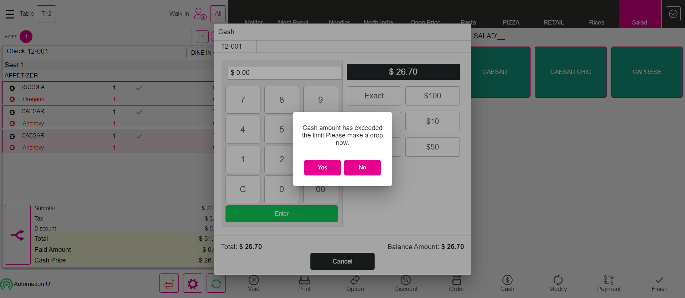FailAdded tip is Correct or notGiven I'm logged inAnd I closed the order type windowAnd I select FOOD as categoryAnd I select menu item as "Onion Rings"And I click Payment button in the Order Management ScreenAnd I click side cc button in the payment windowThen I should see total screenStep skippedAnd I click tip as 10Step skippedAnd I get tip value from Tip screenStep skippedAnd I click the Continue button on the Total screenStep skippedWhen I verify the added tip is same in Payment screenStep skippedAnd I click Submit button in the Payment popupStep skippedAnd I closed the order type windowStep skippedAnd I click log off button in order screenStep skippedcom.qa.stepdef.Hooks.quit(io.cucumber.java.Scenario) PassBussiness Date Verify with Close day window DateWhen I get he Bussiness date from the order screenGiven I'm logged inAnd I closed the order type windowAnd I click AllAnd I click Table Layout tabAnd I click the Operation button on the Table LayoutAnd I click close day tabWhen I verify bussiness date with close day screenAnd I click power buttonFailCashier OUT PULL RequestGiven Im logged in for cashier1And I created sale for Cashier out1 as "CIFOOD"And I click power button in the All Orders screenGiven Im logged in for cashier2And I created sale for Cashier out2 as "Salad"And I click power button in the All Orders screenGiven Im logged in for cashier3And I created sale for Cashier out3 as "Salad"And I click power button in the All Orders screenGiven Im logged in for cashier4And I created sale for Cashier out4 as "Salad"Step skippedAnd I click power button in the All Orders screenStep skippedGiven I'm logged in for Phone storeStep skippedAnd I closed the order type windowStep skippedAnd I click the Settings buttonStep skippedAnd I click till management button from the operation windowStep skippedWhen I verify till is available or not if available closed the tillStep skippedAnd I click reports button in the Till management screenStep skippedAnd I select the cashier1 on the report screenStep skippedAnd I select the cashier2 on the report screenStep skippedAnd I select the cashier3 on the report screenStep skippedAnd I select the cashier4 on the report screenStep skippedAnd I click power buttonStep skippedcom.qa.stepdef.Hooks.quit(io.cucumber.java.Scenario)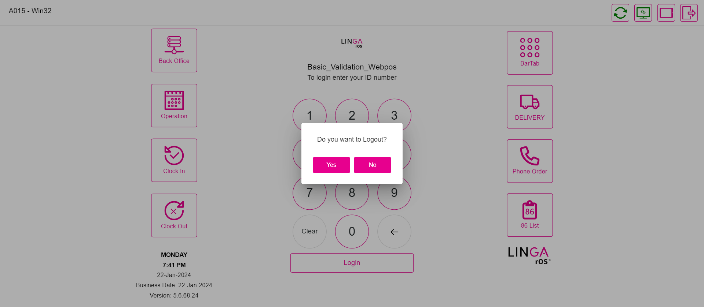FailUser TillGiven I'm logged inAnd I closed the order type windowAnd I click on the Settings buttonAnd I click on the Till Management buttonWhen I verify till is available or not if available closed the tillThen I should see open till management screenAnd I select global till option in open tillAnd I press first number of the totalAnd I press second number of the totalAnd I press third number of the totalWhen I press Continue for open tillWhen I get the active till detailsThen verify till balance same with amount givenAnd I click the Toggle Icon buttonAnd I click POS Icon from ToggleAnd I closed the order type windowAnd I click AllAnd I click Table Layout tabAnd I select Menu For Basic validation as "Salad"And I click Cash button for Complete SaleAnd I click Exact button on the cash pop-upAnd I get Total of menuAnd I click Enter Button on the cash pop-upAnd I click Table Layout tabAnd I click QSR tabStep skippedAnd I closed the order type windowStep skippedAnd I click on the Settings buttonStep skippedAnd I click on the Till Management buttonStep skippedThen I should see active till total has changed depends on menu totalStep skippedAnd I click Active till checkStep skippedAnd I click the Close Till buttonStep skippedThen I should see close till confirmation pop-upStep skippedAnd I click yes to open Close Till ScreenStep skippedThen I should see that the Close Till window is displayedStep skippedAnd I enter the amount greater than balance amountStep skippedAnd I click the Continue buttonStep skippedThen I should see over shortage popupStep skippedAnd I enter reason for discrepency notesStep skippedAnd I click Done button on the PopupStep skippedThen I should see total summaryStep skippedAnd I click submit button on total summaryStep skippedAnd I click Set Till buttonStep skippedThen I should see open till management screenStep skippedAnd I select global till option in open tillStep skippedAnd I press first number of the totalStep skippedAnd I press second number of the totalStep skippedAnd I press third number of the totalStep skippedWhen I press Continue for open tillStep skippedWhen I get the active till detailsStep skippedThen verify till balance same with amount givenStep skippedAnd I click the Toggle Icon buttonStep skippedAnd I click POS Icon from ToggleStep skippedAnd I closed the order type windowStep skippedAnd I click AllStep skippedAnd I click Table Layout tabStep skippedAnd I select Menu For Basic validation as "Salad"Step skippedAnd I click Cash button for Complete SaleStep skippedAnd I click Exact button on the cash pop-upStep skippedAnd I get Total of menuStep skippedAnd I click Enter Button on the cash pop-upStep skippedAnd I click Table Layout tabStep skippedAnd I click QSR tabStep skippedAnd I closed the order type windowStep skippedAnd I click on the Settings buttonStep skippedAnd I click on the Till Management buttonStep skippedThen I should see active till total has changed depends on menu totalStep skippedAnd I click Active till checkStep skippedAnd I click the Close Till buttonStep skippedThen I should see close till confirmation pop-upStep skippedAnd I click yes to open Close Till ScreenStep skippedThen I should see that the Close Till window is displayedStep skippedAnd I enter the amount smaller than balance amountStep skippedAnd I click the Continue buttonStep skippedThen I should see over shortage popupStep skippedAnd I enter reason for discrepency notesStep skippedAnd I click Done button on the PopupStep skippedThen I should see total summaryStep skippedAnd I click submit button on total summaryStep skippedAnd I click Closed till buttonStep skippedAnd I get the closed till check detailsStep skippedAnd I click power buttonStep skippedcom.qa.stepdef.Hooks.quit(io.cucumber.java.Scenario)
PassBussiness Date Verify with Close day window DateWhen I get he Bussiness date from the order screenGiven I'm logged inAnd I closed the order type windowAnd I click AllAnd I click Table Layout tabAnd I click the Operation button on the Table LayoutAnd I click close day tabWhen I verify bussiness date with close day screenAnd I click power buttonFailCashier OUT PULL RequestGiven Im logged in for cashier1And I created sale for Cashier out1 as "CIFOOD"And I click power button in the All Orders screenGiven Im logged in for cashier2And I created sale for Cashier out2 as "Salad"And I click power button in the All Orders screenGiven Im logged in for cashier3And I created sale for Cashier out3 as "Salad"And I click power button in the All Orders screenGiven Im logged in for cashier4And I created sale for Cashier out4 as "Salad"Step skippedAnd I click power button in the All Orders screenStep skippedGiven I'm logged in for Phone storeStep skippedAnd I closed the order type windowStep skippedAnd I click the Settings buttonStep skippedAnd I click till management button from the operation windowStep skippedWhen I verify till is available or not if available closed the tillStep skippedAnd I click reports button in the Till management screenStep skippedAnd I select the cashier1 on the report screenStep skippedAnd I select the cashier2 on the report screenStep skippedAnd I select the cashier3 on the report screenStep skippedAnd I select the cashier4 on the report screenStep skippedAnd I click power buttonStep skippedcom.qa.stepdef.Hooks.quit(io.cucumber.java.Scenario)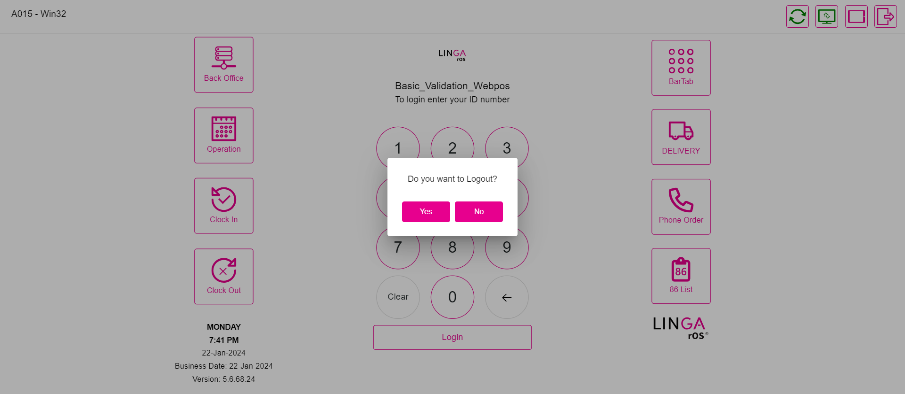FailUser TillGiven I'm logged inAnd I closed the order type windowAnd I click on the Settings buttonAnd I click on the Till Management buttonWhen I verify till is available or not if available closed the tillThen I should see open till management screenAnd I select global till option in open tillAnd I press first number of the totalAnd I press second number of the totalAnd I press third number of the totalWhen I press Continue for open tillWhen I get the active till detailsThen verify till balance same with amount givenAnd I click the Toggle Icon buttonAnd I click POS Icon from ToggleAnd I closed the order type windowAnd I click AllAnd I click Table Layout tabAnd I select Menu For Basic validation as "Salad"And I click Cash button for Complete SaleAnd I click Exact button on the cash pop-upAnd I get Total of menuAnd I click Enter Button on the cash pop-upAnd I click Table Layout tabAnd I click QSR tabStep skippedAnd I closed the order type windowStep skippedAnd I click on the Settings buttonStep skippedAnd I click on the Till Management buttonStep skippedThen I should see active till total has changed depends on menu totalStep skippedAnd I click Active till checkStep skippedAnd I click the Close Till buttonStep skippedThen I should see close till confirmation pop-upStep skippedAnd I click yes to open Close Till ScreenStep skippedThen I should see that the Close Till window is displayedStep skippedAnd I enter the amount greater than balance amountStep skippedAnd I click the Continue buttonStep skippedThen I should see over shortage popupStep skippedAnd I enter reason for discrepency notesStep skippedAnd I click Done button on the PopupStep skippedThen I should see total summaryStep skippedAnd I click submit button on total summaryStep skippedAnd I click Set Till buttonStep skippedThen I should see open till management screenStep skippedAnd I select global till option in open tillStep skippedAnd I press first number of the totalStep skippedAnd I press second number of the totalStep skippedAnd I press third number of the totalStep skippedWhen I press Continue for open tillStep skippedWhen I get the active till detailsStep skippedThen verify till balance same with amount givenStep skippedAnd I click the Toggle Icon buttonStep skippedAnd I click POS Icon from ToggleStep skippedAnd I closed the order type windowStep skippedAnd I click AllStep skippedAnd I click Table Layout tabStep skippedAnd I select Menu For Basic validation as "Salad"Step skippedAnd I click Cash button for Complete SaleStep skippedAnd I click Exact button on the cash pop-upStep skippedAnd I get Total of menuStep skippedAnd I click Enter Button on the cash pop-upStep skippedAnd I click Table Layout tabStep skippedAnd I click QSR tabStep skippedAnd I closed the order type windowStep skippedAnd I click on the Settings buttonStep skippedAnd I click on the Till Management buttonStep skippedThen I should see active till total has changed depends on menu totalStep skippedAnd I click Active till checkStep skippedAnd I click the Close Till buttonStep skippedThen I should see close till confirmation pop-upStep skippedAnd I click yes to open Close Till ScreenStep skippedThen I should see that the Close Till window is displayedStep skippedAnd I enter the amount smaller than balance amountStep skippedAnd I click the Continue buttonStep skippedThen I should see over shortage popupStep skippedAnd I enter reason for discrepency notesStep skippedAnd I click Done button on the PopupStep skippedThen I should see total summaryStep skippedAnd I click submit button on total summaryStep skippedAnd I click Closed till buttonStep skippedAnd I get the closed till check detailsStep skippedAnd I click power buttonStep skippedcom.qa.stepdef.Hooks.quit(io.cucumber.java.Scenario) FailGlobal TillGiven I'm logged inAnd I closed the order type windowAnd I click on the Settings buttonAnd I click on the Till Management buttonWhen I verify till is available or not if available closed the tillThen I should see open till management screenAnd I press first number of the totalAnd I press second number of the totalAnd I press third number of the totalWhen I press Continue for open tillThen verify active till as global tillWhen I get the active till detailsThen verify till balance same with amount givenAnd I click the Toggle Icon buttonAnd I click POS Icon from ToggleAnd I closed the order type windowAnd I click AllAnd I click Table Layout tabAnd I select Menu For Basic validation as "Salad"And I click Cash button for Complete SaleAnd I click Exact button on the cash pop-upAnd I get Total of menuAnd I click Enter Button on the cash pop-upAnd I click Table Layout tabAnd I click QSR tabStep skippedAnd I closed the order type windowStep skippedAnd I click on the Settings buttonStep skippedAnd I click on the Till Management buttonStep skippedThen I should see active till total has changed depends on menu totalStep skippedAnd I click Active till checkStep skippedAnd I click the Close Till buttonStep skippedThen I should see close till confirmation pop-upStep skippedAnd I click yes to open Close Till ScreenStep skippedThen I should see that the Close Till window is displayedStep skippedAnd I enter the amount greater than balance amountStep skippedAnd I click the Continue buttonStep skippedThen I should see over shortage popupStep skippedAnd I enter reason for discrepency notesStep skippedAnd I click Done button on the PopupStep skippedThen I should see total summaryStep skippedAnd I click submit button on total summaryStep skippedAnd I click Set Till buttonStep skippedThen I should see open till management screenStep skippedAnd I press first number of the totalStep skippedAnd I press second number of the totalStep skippedAnd I press third number of the totalStep skippedWhen I press Continue for open tillStep skippedThen verify active till as global tillStep skippedWhen I get the active till detailsStep skippedThen verify till balance same with amount givenStep skippedAnd I click the Toggle Icon buttonStep skippedAnd I click POS Icon from ToggleStep skippedAnd I closed the order type windowStep skippedAnd I click AllStep skippedAnd I click Table Layout tabStep skippedAnd I select Menu For Basic validation as "Salad"Step skippedAnd I click Cash button for Complete SaleStep skippedAnd I click Exact button on the cash pop-upStep skippedAnd I get Total of menuStep skippedAnd I click Enter Button on the cash pop-upStep skippedAnd I click Table Layout tabStep skippedAnd I click QSR tabStep skippedAnd I closed the order type windowStep skippedAnd I click on the Settings buttonStep skippedAnd I click on the Till Management buttonStep skippedThen I should see active till total has changed depends on menu totalStep skippedAnd I click Active till checkStep skippedAnd I click the Close Till buttonStep skippedThen I should see close till confirmation pop-upStep skippedAnd I click yes to open Close Till ScreenStep skippedThen I should see that the Close Till window is displayedStep skippedAnd I enter the amount smaller than balance amountStep skippedAnd I click the Continue buttonStep skippedThen I should see over shortage popupStep skippedAnd I enter reason for discrepency notesStep skippedAnd I click Done button on the PopupStep skippedThen I should see total summaryStep skippedAnd I click submit button on total summaryStep skippedAnd I click Closed till buttonStep skippedAnd I get the closed till check detailsStep skippedAnd I click power buttonStep skippedcom.qa.stepdef.Hooks.quit(io.cucumber.java.Scenario)PassVerify the Cash Discount charge for the checkGiven I'm logged inAnd I closed the order type windowAnd I click AllAnd I click Table Layout tabAnd I select Menu For Basic validation as "Salad"And I get the cash option value and add with menu totalAnd I click Payment button in the Order Management ScreenWhen I get the balance Due Amount and cash option amount in payment windowAnd I click cash button from the payment method popupThen verify the cash option in payment screenAnd I click Exit to return to Order Management ScreenWhen verify the paid Amount in Order Screen for cash optionWhen verify cash discount is display in order screenAnd I click Payment button in the Order Management ScreenAnd I click Submit button in the Payment popupAnd I click Table Layout tabAnd I click power button in the All Orders screenFailTransfer Item from one Check to another CheckGiven Login with valid pin in split screenAnd I closed the order type windowGiven User click All button in QSRWhen User click the Table Layout optionAnd I select Menu For Basic validation as "Menu"And I click Finish Order buttonStep skippedAnd I click Table Layout tabStep skippedAnd User select the Transfer buttonStep skippedAnd User verify Transfer to Server, Transfer to Table and Transfer Item are displayedStep skippedAnd User select the Transfer Item OptionStep skippedWhen I select check for transferredStep skippedAnd Select the required menu item from the Menu Item TableStep skippedWhen I select check for transferred1Step skippedAnd Click the Done buttonStep skippedAnd Verify the Successful message of Transfer ItemStep skippedAnd I click Done button on the PopupStep skippedWhen I click transferred table after done transfer processStep skippedThen Verify the Transferred menu item is available or not in the receiving tableStep skippedAnd Click the finish buttonStep skippedAnd I click power button in the All Orders screenStep skippedcom.qa.stepdef.Hooks.quit(io.cucumber.java.Scenario)
FailGlobal TillGiven I'm logged inAnd I closed the order type windowAnd I click on the Settings buttonAnd I click on the Till Management buttonWhen I verify till is available or not if available closed the tillThen I should see open till management screenAnd I press first number of the totalAnd I press second number of the totalAnd I press third number of the totalWhen I press Continue for open tillThen verify active till as global tillWhen I get the active till detailsThen verify till balance same with amount givenAnd I click the Toggle Icon buttonAnd I click POS Icon from ToggleAnd I closed the order type windowAnd I click AllAnd I click Table Layout tabAnd I select Menu For Basic validation as "Salad"And I click Cash button for Complete SaleAnd I click Exact button on the cash pop-upAnd I get Total of menuAnd I click Enter Button on the cash pop-upAnd I click Table Layout tabAnd I click QSR tabStep skippedAnd I closed the order type windowStep skippedAnd I click on the Settings buttonStep skippedAnd I click on the Till Management buttonStep skippedThen I should see active till total has changed depends on menu totalStep skippedAnd I click Active till checkStep skippedAnd I click the Close Till buttonStep skippedThen I should see close till confirmation pop-upStep skippedAnd I click yes to open Close Till ScreenStep skippedThen I should see that the Close Till window is displayedStep skippedAnd I enter the amount greater than balance amountStep skippedAnd I click the Continue buttonStep skippedThen I should see over shortage popupStep skippedAnd I enter reason for discrepency notesStep skippedAnd I click Done button on the PopupStep skippedThen I should see total summaryStep skippedAnd I click submit button on total summaryStep skippedAnd I click Set Till buttonStep skippedThen I should see open till management screenStep skippedAnd I press first number of the totalStep skippedAnd I press second number of the totalStep skippedAnd I press third number of the totalStep skippedWhen I press Continue for open tillStep skippedThen verify active till as global tillStep skippedWhen I get the active till detailsStep skippedThen verify till balance same with amount givenStep skippedAnd I click the Toggle Icon buttonStep skippedAnd I click POS Icon from ToggleStep skippedAnd I closed the order type windowStep skippedAnd I click AllStep skippedAnd I click Table Layout tabStep skippedAnd I select Menu For Basic validation as "Salad"Step skippedAnd I click Cash button for Complete SaleStep skippedAnd I click Exact button on the cash pop-upStep skippedAnd I get Total of menuStep skippedAnd I click Enter Button on the cash pop-upStep skippedAnd I click Table Layout tabStep skippedAnd I click QSR tabStep skippedAnd I closed the order type windowStep skippedAnd I click on the Settings buttonStep skippedAnd I click on the Till Management buttonStep skippedThen I should see active till total has changed depends on menu totalStep skippedAnd I click Active till checkStep skippedAnd I click the Close Till buttonStep skippedThen I should see close till confirmation pop-upStep skippedAnd I click yes to open Close Till ScreenStep skippedThen I should see that the Close Till window is displayedStep skippedAnd I enter the amount smaller than balance amountStep skippedAnd I click the Continue buttonStep skippedThen I should see over shortage popupStep skippedAnd I enter reason for discrepency notesStep skippedAnd I click Done button on the PopupStep skippedThen I should see total summaryStep skippedAnd I click submit button on total summaryStep skippedAnd I click Closed till buttonStep skippedAnd I get the closed till check detailsStep skippedAnd I click power buttonStep skippedcom.qa.stepdef.Hooks.quit(io.cucumber.java.Scenario)PassVerify the Cash Discount charge for the checkGiven I'm logged inAnd I closed the order type windowAnd I click AllAnd I click Table Layout tabAnd I select Menu For Basic validation as "Salad"And I get the cash option value and add with menu totalAnd I click Payment button in the Order Management ScreenWhen I get the balance Due Amount and cash option amount in payment windowAnd I click cash button from the payment method popupThen verify the cash option in payment screenAnd I click Exit to return to Order Management ScreenWhen verify the paid Amount in Order Screen for cash optionWhen verify cash discount is display in order screenAnd I click Payment button in the Order Management ScreenAnd I click Submit button in the Payment popupAnd I click Table Layout tabAnd I click power button in the All Orders screenFailTransfer Item from one Check to another CheckGiven Login with valid pin in split screenAnd I closed the order type windowGiven User click All button in QSRWhen User click the Table Layout optionAnd I select Menu For Basic validation as "Menu"And I click Finish Order buttonStep skippedAnd I click Table Layout tabStep skippedAnd User select the Transfer buttonStep skippedAnd User verify Transfer to Server, Transfer to Table and Transfer Item are displayedStep skippedAnd User select the Transfer Item OptionStep skippedWhen I select check for transferredStep skippedAnd Select the required menu item from the Menu Item TableStep skippedWhen I select check for transferred1Step skippedAnd Click the Done buttonStep skippedAnd Verify the Successful message of Transfer ItemStep skippedAnd I click Done button on the PopupStep skippedWhen I click transferred table after done transfer processStep skippedThen Verify the Transferred menu item is available or not in the receiving tableStep skippedAnd Click the finish buttonStep skippedAnd I click power button in the All Orders screenStep skippedcom.qa.stepdef.Hooks.quit(io.cucumber.java.Scenario) FailTransfer To Table from one Check to another CheckGiven Login with valid pin in split screenAnd I closed the order type windowGiven User click All button in QSRWhen User click the Table Layout optionAnd User select the two Empty table and take the orderAnd User select the Transfer buttonAnd User verify Transfer to Server, Transfer to Table and Transfer Item are displayedAnd User select the Transfer to Table OptionThen Select anyone Table from the Transfer From TableAnd Select the required check from the Checks TableThen Select anyone Table from the Transfer To TableStep skippedAnd Click the Done buttonStep skippedAnd Verify the Successful message of Transfer To TableStep skippedAnd I click Done button on the PopupStep skippedAnd Check the Transferred from tableStep skippedAnd I click power button in the All Orders screenStep skippedcom.qa.stepdef.Hooks.quit(io.cucumber.java.Scenario)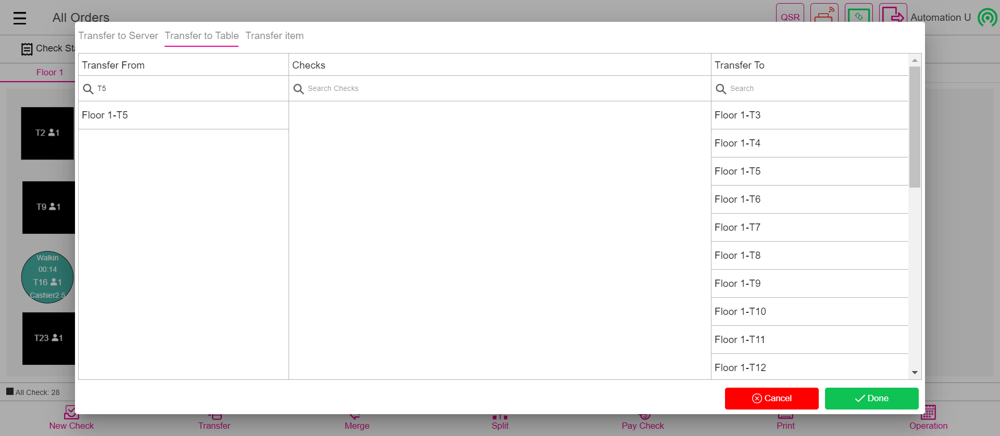PassVerify the "Transfer to Server" from one check to another checkGiven I'm logged inAnd I closed the order type windowGiven User click All button in QSRWhen User click the Table Layout optionAnd User select the Empty table and take the orderAnd Get the Server Name from The required TableAnd User select the Transfer buttonAnd User verify Transfer to Server, Transfer to Table and Transfer Item are displayedAnd User select the Transfer to Server OptionThen Select correct server from the Transfer From TableAnd Select the required check from the Checks Table for Transfer ServerThen Select anyone server from the Transfer To TableAnd Click the Done buttonAnd Verify the Successful message of Transfer To ServerAnd I click Done button on the PopupThen Verify the server name is available or not in the required tableAnd I click power button in the All Orders screenFailOther than Cash PaymentGiven I'm logged inAnd I closed the order type windowAnd I click AllAnd I click Table Layout tabAnd I select Menu For Basic validation as "Salad"And I get the cash option value and add with menu totalAnd I click Payment button in the Order Management ScreenWhen I get the balance Due Amount and cash option amount in payment windowAnd I click side cc button in the payment windowAnd I click the Continue button on the Total screenStep skippedThen verify the cash option in payment screenStep skippedThen verify the card option payment screenStep skippedAnd I click Exit to return to Order Management ScreenStep skippedWhen verify the paid Amount in Order Screen for card optionStep skippedAnd I click Payment button in the Order Management ScreenStep skippedAnd I click Submit button in the Payment popupStep skippedAnd I click Table Layout tabStep skippedAnd I click power button in the All Orders screenStep skippedcom.qa.stepdef.Hooks.quit(io.cucumber.java.Scenario)
FailTransfer To Table from one Check to another CheckGiven Login with valid pin in split screenAnd I closed the order type windowGiven User click All button in QSRWhen User click the Table Layout optionAnd User select the two Empty table and take the orderAnd User select the Transfer buttonAnd User verify Transfer to Server, Transfer to Table and Transfer Item are displayedAnd User select the Transfer to Table OptionThen Select anyone Table from the Transfer From TableAnd Select the required check from the Checks TableThen Select anyone Table from the Transfer To TableStep skippedAnd Click the Done buttonStep skippedAnd Verify the Successful message of Transfer To TableStep skippedAnd I click Done button on the PopupStep skippedAnd Check the Transferred from tableStep skippedAnd I click power button in the All Orders screenStep skippedcom.qa.stepdef.Hooks.quit(io.cucumber.java.Scenario)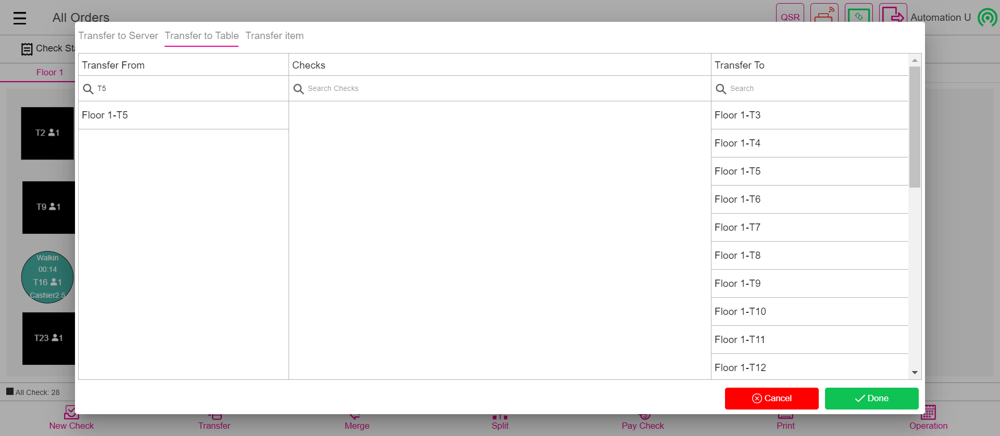PassVerify the "Transfer to Server" from one check to another checkGiven I'm logged inAnd I closed the order type windowGiven User click All button in QSRWhen User click the Table Layout optionAnd User select the Empty table and take the orderAnd Get the Server Name from The required TableAnd User select the Transfer buttonAnd User verify Transfer to Server, Transfer to Table and Transfer Item are displayedAnd User select the Transfer to Server OptionThen Select correct server from the Transfer From TableAnd Select the required check from the Checks Table for Transfer ServerThen Select anyone server from the Transfer To TableAnd Click the Done buttonAnd Verify the Successful message of Transfer To ServerAnd I click Done button on the PopupThen Verify the server name is available or not in the required tableAnd I click power button in the All Orders screenFailOther than Cash PaymentGiven I'm logged inAnd I closed the order type windowAnd I click AllAnd I click Table Layout tabAnd I select Menu For Basic validation as "Salad"And I get the cash option value and add with menu totalAnd I click Payment button in the Order Management ScreenWhen I get the balance Due Amount and cash option amount in payment windowAnd I click side cc button in the payment windowAnd I click the Continue button on the Total screenStep skippedThen verify the cash option in payment screenStep skippedThen verify the card option payment screenStep skippedAnd I click Exit to return to Order Management ScreenStep skippedWhen verify the paid Amount in Order Screen for card optionStep skippedAnd I click Payment button in the Order Management ScreenStep skippedAnd I click Submit button in the Payment popupStep skippedAnd I click Table Layout tabStep skippedAnd I click power button in the All Orders screenStep skippedcom.qa.stepdef.Hooks.quit(io.cucumber.java.Scenario) FailItem Service charge (Item Service Charge Without Tax)Given I'm logged inAnd I closed the order type windowAnd I click AllAnd I click Table Layout tabAnd I select Menu For Basic validation as "Salad"When i verify service charge without tax of menuAnd I click Payment button in the Order Management ScreenStep skippedAnd I click cash button from the payment method popupStep skippedAnd I click Submit button on the Payment WindowStep skippedAnd I click Table Layout tabStep skippedAnd I click power buttonStep skippedcom.qa.stepdef.Hooks.quit(io.cucumber.java.Scenario)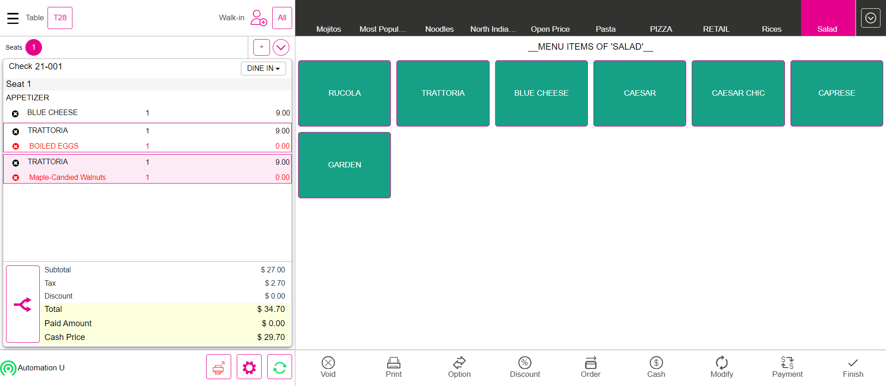FailItem Service charge (Item Service Charge With Tax )Given I'm logged inAnd I closed the order type windowAnd I click AllAnd I click Table Layout tabAnd I select Menu For Basic validation as "TaXx"When i verify service charge with tax of menuAnd I click Payment button in the Order Management ScreenStep skippedAnd I click cash button from the payment method popupStep skippedAnd I click Submit button on the Payment WindowStep skippedAnd I click Table Layout tabStep skippedAnd I click power button in the All Orders screenStep skippedcom.qa.stepdef.Hooks.quit(io.cucumber.java.Scenario)
FailItem Service charge (Item Service Charge Without Tax)Given I'm logged inAnd I closed the order type windowAnd I click AllAnd I click Table Layout tabAnd I select Menu For Basic validation as "Salad"When i verify service charge without tax of menuAnd I click Payment button in the Order Management ScreenStep skippedAnd I click cash button from the payment method popupStep skippedAnd I click Submit button on the Payment WindowStep skippedAnd I click Table Layout tabStep skippedAnd I click power buttonStep skippedcom.qa.stepdef.Hooks.quit(io.cucumber.java.Scenario)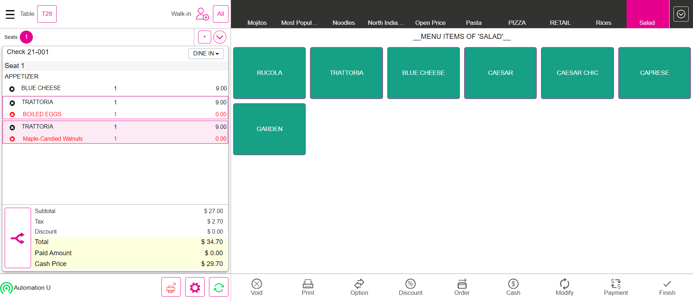FailItem Service charge (Item Service Charge With Tax )Given I'm logged inAnd I closed the order type windowAnd I click AllAnd I click Table Layout tabAnd I select Menu For Basic validation as "TaXx"When i verify service charge with tax of menuAnd I click Payment button in the Order Management ScreenStep skippedAnd I click cash button from the payment method popupStep skippedAnd I click Submit button on the Payment WindowStep skippedAnd I click Table Layout tabStep skippedAnd I click power button in the All Orders screenStep skippedcom.qa.stepdef.Hooks.quit(io.cucumber.java.Scenario) PassManual Gratuity FixedGiven I'm logged inAnd I closed the order type windowAnd I click AllAnd I click Table Layout tabAnd I select Menu For Basic validation as "Salad"And I click Options buttonAnd I click Gratuity buttonAnd I click Gratuity Fixed buttonAnd I verify fixed gratuity is appliedAnd I click Payment button in the Order Management ScreenAnd I click cash button from the payment method popupAnd I click Submit button on the Payment WindowAnd I click Table Layout tabAnd I click power button in the All Orders screenPassManual Gratuity VaryingGiven I'm logged inAnd I closed the order type windowAnd I click AllAnd I click Table Layout tabAnd I select Menu For Basic validation as "Salad"And I click Options buttonAnd I click Gratuity buttonAnd I click Gratuity varying buttonThen I should see enter Percentage popupAnd I pass the value and click Apply buttonAnd I verify varying gratuity is appliedAnd I click Payment button in the Order Management ScreenAnd I click cash button from the payment method popupAnd I click Submit button on the Payment WindowAnd I click Table Layout tabAnd I click power button in the All Orders screenPassAuto Gratuity FixedGiven I'm logged inAnd I closed the order type windowAnd I click AllAnd I click Table Layout tabAnd I select Menu For Basic validation as "Salad"When I verify auto gratuity is applied or notAnd I add a new seatAnd I add a new seatThen I should see Add Gratuity screenAnd I click auto Gratuity Fixed buttonAnd I select Menu of Basic validation for QSR as "Salad"When I verify auto gratuity is applied or notAnd I click Payment button in the Order Management ScreenAnd I click cash button from the payment method popupAnd I click Submit button on the Payment WindowAnd I click Table Layout tabAnd I click power button in the All Orders screenPassAuto Gratuity Varying(Multiple Auto Varying/Fixed gratuity is available means From Step 6 will be applicable)Given I'm logged inAnd I closed the order type windowAnd I click AllAnd I click Table Layout tabAnd I select Menu For Basic validation as "Salad"When I verify auto gratuity is applied or notAnd I add a new seatAnd I add a new seatThen I should see Add Gratuity screenAnd I select auto gratuity as "Auto vary Gratuity"Then I should see enter Percentage popupAnd I pass the value and click Apply buttonAnd I select Menu of Basic validation for QSR as "Salad"When I verify auto gratuity is applied or notAnd I click Payment button in the Order Management ScreenAnd I click cash button from the payment method popupAnd I click Submit button on the Payment WindowAnd I click Table Layout tabAnd I click power button in the All Orders screenFailCustomerGiven I'm logged inAnd I closed the order type windowAnd I click Add Customer ButtonThen I should see the add customer screen in the windowAnd I Click on the Byname OptionAnd Enter the new customer randomlysAnd I click the Save buttonAnd I click on the customer name in the order screenThen I should see the customer profile windowStep skippedAnd I enter the customer name randomlyStep skippedAnd I click log off button in order screenStep skippedcom.qa.stepdef.Hooks.quit(io.cucumber.java.Scenario)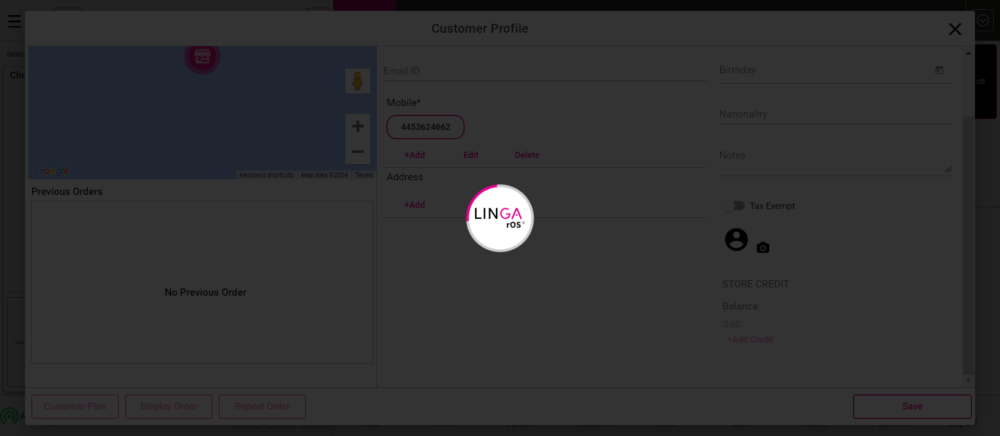FailTaxesGiven I'm logged inAnd I close the order type windowAnd I click AllAnd I click Table Layout tabAnd I click new check button on the Table layout screenAnd I select table as "T10"And I select the number of seats as "1"And I tap Continue to finish selecting the number of seatsAnd I get check numberAnd I select category as "Menu"And I select menu item as "Burger"Then I should verify subtotal value as "$ 7.58"Then I should verify tax value as "$ 1.78"Then I should verify total value as "$ 9.36"And I click Cash button for Complete SaleStep skippedAnd I click Exact button on the cash pop-upStep skippedAnd I click Enter Button on the cash pop-upStep skippedAnd I click Table Layout tabStep skippedAnd I click new check button on the Table layout screenStep skippedAnd I select table as "T10"Step skippedAnd I select the number of seats as "1"Step skippedAnd I tap Continue to finish selecting the number of seatsStep skippedAnd I get check numberStep skippedAnd I select category as "Menu"Step skippedAnd I select menu item as "Default Menu"Step skippedThen I should verify subtotal value as "$ 4.88"Step skippedThen I should verify tax value as "$ 0.37"Step skippedThen I should verify total value as "$ 5.25"Step skippedAnd I click Cash button for Complete SaleStep skippedAnd I click Exact button on the cash pop-upStep skippedAnd I click Enter Button on the cash pop-upStep skippedAnd I click Table Layout tabStep skippedAnd I click new check button on the Table layout screenStep skippedAnd I select table as "T7"Step skippedAnd I select the number of seats as "1"Step skippedAnd I tap Continue to finish selecting the number of seatsStep skippedAnd I select category as "Appetizers"Step skippedAnd I select menu item as "RAPINI"Step skippedThen I should see orderscreen with menu item prize as "$ 13.00"Step skippedThen I should see the tax amount reflected to the check as "$ 0.65"Step skippedThen I should see orderscreen with menu item Total as "$ 13.65"Step skippedAnd I change the Quantity of menu Item as "5"Step skippedThen I should see orderscreen with menu item prize as "$ 65.00"Step skippedThen I should see the tax amount reflected to the check as "$ 6.50"Step skippedThen I should see orderscreen with menu item Total as "$ 71.50"Step skippedAnd I change the Quantity1 of menu Item as "8"Step skippedThen I should see orderscreen with menu item prize as "$ 104.00"Step skippedThen I should see the tax amount reflected to the check as "$ 15.60"Step skippedThen I should see orderscreen with menu item Total as "$ 119.60"Step skippedAnd I click Cash button for Complete SaleStep skippedAnd I click Exact button on the cash pop-upStep skippedAnd I click Enter Button on the cash pop-upStep skippedAnd I click Table Layout tabStep skippedAnd I click new check button on the Table layout screenStep skippedAnd I select table as "T8"Step skippedAnd I select the number of seats as "1"Step skippedAnd I tap Continue to finish selecting the number of seatsStep skippedAnd I select category as "Pasta"Step skippedAnd I select menu item as RavioliPesto for Item Based Inclusive TaxStep skippedAnd I select modifier as "Butter"Step skippedAnd I click Done to get backStep skippedThen I should see orderscreen with menu item prize as "$ 15.00"Step skippedThen I should see the tax amount reflected to the check as "$ 1.36"Step skippedThen I should see orderscreen with menu item Total as "$ 15.00"Step skippedAnd I click Cash button for Complete SaleStep skippedAnd I click Exact button on the cash pop-upStep skippedAnd I click Enter Button on the cash pop-upStep skippedAnd I click Table Layout tabStep skippedAnd I click new check button on the Table layout screenStep skippedAnd I select table as "T9"Step skippedAnd I select the number of seats as "1"Step skippedAnd I tap Continue to finish selecting the number of seatsStep skippedAnd I select category as "Arab Biriyani"Step skippedAnd I select menu item as "sambar"Step skippedAnd I change the Quantity of menu Item1 as "11"Step skippedThen I should see orderscreen with menu item prize as "$ 1,100.00"Step skippedThen I should see the tax amount reflected to the check as "$ 96.57"Step skippedThen I should see orderscreen with menu item Total as "$ 1,196.57"Step skippedAnd I click Cash button for Complete SaleStep skippedAnd I click Exact button on the cash pop-upStep skippedAnd I click Enter Button on the cash pop-upStep skippedAnd I click Table Layout tabStep skippedAnd I click new check button on the Table layout screenStep skippedAnd I select table as "T10"Step skippedAnd I select the number of seats as "1"Step skippedAnd I tap Continue to finish selecting the number of seatsStep skippedAnd I select category as "Arab Biriyani"Step skippedAnd I select menu item as "sambar"Step skippedAnd I change the Quantity of menu Item1 as "12"Step skippedThen I should see orderscreen with menu item prize as "$ 1,200.00"Step skippedThen I should see the tax amount reflected to the check as "$ 105.35"Step skippedThen I should see orderscreen with menu item Total as "$ 1,305.35"Step skippedAnd I click Cash button for Complete SaleStep skippedAnd I click Exact button on the cash pop-upStep skippedAnd I click Enter Button on the cash pop-upStep skippedAnd I click Table Layout tabStep skippedAnd I click new check button on the Table layout screenStep skippedAnd I select table as "T11"Step skippedAnd I select the number of seats as "1"Step skippedAnd I tap Continue to finish selecting the number of seatsStep skippedAnd I select category as "Pasta"Step skippedAnd I select menu item as Ling Meatballs for Tax on Item TaxStep skippedAnd I select modifier as "Butter"Step skippedAnd I click Done to get backStep skippedThen I should see orderscreen with menu item prize as "$ 4.00"Step skippedThen I should see the tax amount reflected to the check as "$ 0.44"Step skippedThen I should see orderscreen with menu item Total as "$ 4.44"Step skippedAnd I click Cash button for Complete SaleStep skippedAnd I click Exact button on the cash pop-upStep skippedAnd I click Enter Button on the cash pop-upStep skippedAnd I click Table Layout tabStep skippedAnd I click new check button on the Table layout screenStep skippedAnd I select table as "T8"Step skippedAnd I select the number of seats as "1"Step skippedAnd I tap Continue to finish selecting the number of seatsStep skippedAnd I select category as "Menu"Step skippedAnd I select menu item as "Halwa"Step skippedAnd I change the Quantity of menu Item as "8"Step skippedThen I should see orderscreen with menu item prize as "$ 80.00"Step skippedThen I should see the tax amount reflected to the check as "$ 8.00"Step skippedThen I should see orderscreen with menu item Total as "$ 88.00"Step skippedAnd I click Void button on order management screenStep skippedThen I should see All orders are voidedStep skippedAnd I click Done button on the PopupStep skippedAnd I click AllStep skippedThen I should get back to the Table Layout tabStep skippedAnd I click power button in the All Orders screenStep skippedcom.qa.stepdef.Hooks.quit(io.cucumber.java.Scenario)
PassManual Gratuity FixedGiven I'm logged inAnd I closed the order type windowAnd I click AllAnd I click Table Layout tabAnd I select Menu For Basic validation as "Salad"And I click Options buttonAnd I click Gratuity buttonAnd I click Gratuity Fixed buttonAnd I verify fixed gratuity is appliedAnd I click Payment button in the Order Management ScreenAnd I click cash button from the payment method popupAnd I click Submit button on the Payment WindowAnd I click Table Layout tabAnd I click power button in the All Orders screenPassManual Gratuity VaryingGiven I'm logged inAnd I closed the order type windowAnd I click AllAnd I click Table Layout tabAnd I select Menu For Basic validation as "Salad"And I click Options buttonAnd I click Gratuity buttonAnd I click Gratuity varying buttonThen I should see enter Percentage popupAnd I pass the value and click Apply buttonAnd I verify varying gratuity is appliedAnd I click Payment button in the Order Management ScreenAnd I click cash button from the payment method popupAnd I click Submit button on the Payment WindowAnd I click Table Layout tabAnd I click power button in the All Orders screenPassAuto Gratuity FixedGiven I'm logged inAnd I closed the order type windowAnd I click AllAnd I click Table Layout tabAnd I select Menu For Basic validation as "Salad"When I verify auto gratuity is applied or notAnd I add a new seatAnd I add a new seatThen I should see Add Gratuity screenAnd I click auto Gratuity Fixed buttonAnd I select Menu of Basic validation for QSR as "Salad"When I verify auto gratuity is applied or notAnd I click Payment button in the Order Management ScreenAnd I click cash button from the payment method popupAnd I click Submit button on the Payment WindowAnd I click Table Layout tabAnd I click power button in the All Orders screenPassAuto Gratuity Varying(Multiple Auto Varying/Fixed gratuity is available means From Step 6 will be applicable)Given I'm logged inAnd I closed the order type windowAnd I click AllAnd I click Table Layout tabAnd I select Menu For Basic validation as "Salad"When I verify auto gratuity is applied or notAnd I add a new seatAnd I add a new seatThen I should see Add Gratuity screenAnd I select auto gratuity as "Auto vary Gratuity"Then I should see enter Percentage popupAnd I pass the value and click Apply buttonAnd I select Menu of Basic validation for QSR as "Salad"When I verify auto gratuity is applied or notAnd I click Payment button in the Order Management ScreenAnd I click cash button from the payment method popupAnd I click Submit button on the Payment WindowAnd I click Table Layout tabAnd I click power button in the All Orders screenFailCustomerGiven I'm logged inAnd I closed the order type windowAnd I click Add Customer ButtonThen I should see the add customer screen in the windowAnd I Click on the Byname OptionAnd Enter the new customer randomlysAnd I click the Save buttonAnd I click on the customer name in the order screenThen I should see the customer profile windowStep skippedAnd I enter the customer name randomlyStep skippedAnd I click log off button in order screenStep skippedcom.qa.stepdef.Hooks.quit(io.cucumber.java.Scenario)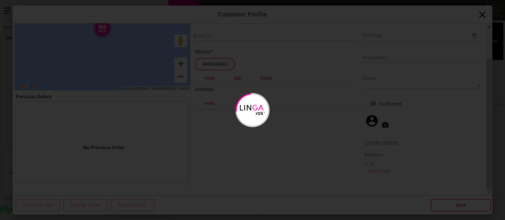FailTaxesGiven I'm logged inAnd I close the order type windowAnd I click AllAnd I click Table Layout tabAnd I click new check button on the Table layout screenAnd I select table as "T10"And I select the number of seats as "1"And I tap Continue to finish selecting the number of seatsAnd I get check numberAnd I select category as "Menu"And I select menu item as "Burger"Then I should verify subtotal value as "$ 7.58"Then I should verify tax value as "$ 1.78"Then I should verify total value as "$ 9.36"And I click Cash button for Complete SaleStep skippedAnd I click Exact button on the cash pop-upStep skippedAnd I click Enter Button on the cash pop-upStep skippedAnd I click Table Layout tabStep skippedAnd I click new check button on the Table layout screenStep skippedAnd I select table as "T10"Step skippedAnd I select the number of seats as "1"Step skippedAnd I tap Continue to finish selecting the number of seatsStep skippedAnd I get check numberStep skippedAnd I select category as "Menu"Step skippedAnd I select menu item as "Default Menu"Step skippedThen I should verify subtotal value as "$ 4.88"Step skippedThen I should verify tax value as "$ 0.37"Step skippedThen I should verify total value as "$ 5.25"Step skippedAnd I click Cash button for Complete SaleStep skippedAnd I click Exact button on the cash pop-upStep skippedAnd I click Enter Button on the cash pop-upStep skippedAnd I click Table Layout tabStep skippedAnd I click new check button on the Table layout screenStep skippedAnd I select table as "T7"Step skippedAnd I select the number of seats as "1"Step skippedAnd I tap Continue to finish selecting the number of seatsStep skippedAnd I select category as "Appetizers"Step skippedAnd I select menu item as "RAPINI"Step skippedThen I should see orderscreen with menu item prize as "$ 13.00"Step skippedThen I should see the tax amount reflected to the check as "$ 0.65"Step skippedThen I should see orderscreen with menu item Total as "$ 13.65"Step skippedAnd I change the Quantity of menu Item as "5"Step skippedThen I should see orderscreen with menu item prize as "$ 65.00"Step skippedThen I should see the tax amount reflected to the check as "$ 6.50"Step skippedThen I should see orderscreen with menu item Total as "$ 71.50"Step skippedAnd I change the Quantity1 of menu Item as "8"Step skippedThen I should see orderscreen with menu item prize as "$ 104.00"Step skippedThen I should see the tax amount reflected to the check as "$ 15.60"Step skippedThen I should see orderscreen with menu item Total as "$ 119.60"Step skippedAnd I click Cash button for Complete SaleStep skippedAnd I click Exact button on the cash pop-upStep skippedAnd I click Enter Button on the cash pop-upStep skippedAnd I click Table Layout tabStep skippedAnd I click new check button on the Table layout screenStep skippedAnd I select table as "T8"Step skippedAnd I select the number of seats as "1"Step skippedAnd I tap Continue to finish selecting the number of seatsStep skippedAnd I select category as "Pasta"Step skippedAnd I select menu item as RavioliPesto for Item Based Inclusive TaxStep skippedAnd I select modifier as "Butter"Step skippedAnd I click Done to get backStep skippedThen I should see orderscreen with menu item prize as "$ 15.00"Step skippedThen I should see the tax amount reflected to the check as "$ 1.36"Step skippedThen I should see orderscreen with menu item Total as "$ 15.00"Step skippedAnd I click Cash button for Complete SaleStep skippedAnd I click Exact button on the cash pop-upStep skippedAnd I click Enter Button on the cash pop-upStep skippedAnd I click Table Layout tabStep skippedAnd I click new check button on the Table layout screenStep skippedAnd I select table as "T9"Step skippedAnd I select the number of seats as "1"Step skippedAnd I tap Continue to finish selecting the number of seatsStep skippedAnd I select category as "Arab Biriyani"Step skippedAnd I select menu item as "sambar"Step skippedAnd I change the Quantity of menu Item1 as "11"Step skippedThen I should see orderscreen with menu item prize as "$ 1,100.00"Step skippedThen I should see the tax amount reflected to the check as "$ 96.57"Step skippedThen I should see orderscreen with menu item Total as "$ 1,196.57"Step skippedAnd I click Cash button for Complete SaleStep skippedAnd I click Exact button on the cash pop-upStep skippedAnd I click Enter Button on the cash pop-upStep skippedAnd I click Table Layout tabStep skippedAnd I click new check button on the Table layout screenStep skippedAnd I select table as "T10"Step skippedAnd I select the number of seats as "1"Step skippedAnd I tap Continue to finish selecting the number of seatsStep skippedAnd I select category as "Arab Biriyani"Step skippedAnd I select menu item as "sambar"Step skippedAnd I change the Quantity of menu Item1 as "12"Step skippedThen I should see orderscreen with menu item prize as "$ 1,200.00"Step skippedThen I should see the tax amount reflected to the check as "$ 105.35"Step skippedThen I should see orderscreen with menu item Total as "$ 1,305.35"Step skippedAnd I click Cash button for Complete SaleStep skippedAnd I click Exact button on the cash pop-upStep skippedAnd I click Enter Button on the cash pop-upStep skippedAnd I click Table Layout tabStep skippedAnd I click new check button on the Table layout screenStep skippedAnd I select table as "T11"Step skippedAnd I select the number of seats as "1"Step skippedAnd I tap Continue to finish selecting the number of seatsStep skippedAnd I select category as "Pasta"Step skippedAnd I select menu item as Ling Meatballs for Tax on Item TaxStep skippedAnd I select modifier as "Butter"Step skippedAnd I click Done to get backStep skippedThen I should see orderscreen with menu item prize as "$ 4.00"Step skippedThen I should see the tax amount reflected to the check as "$ 0.44"Step skippedThen I should see orderscreen with menu item Total as "$ 4.44"Step skippedAnd I click Cash button for Complete SaleStep skippedAnd I click Exact button on the cash pop-upStep skippedAnd I click Enter Button on the cash pop-upStep skippedAnd I click Table Layout tabStep skippedAnd I click new check button on the Table layout screenStep skippedAnd I select table as "T8"Step skippedAnd I select the number of seats as "1"Step skippedAnd I tap Continue to finish selecting the number of seatsStep skippedAnd I select category as "Menu"Step skippedAnd I select menu item as "Halwa"Step skippedAnd I change the Quantity of menu Item as "8"Step skippedThen I should see orderscreen with menu item prize as "$ 80.00"Step skippedThen I should see the tax amount reflected to the check as "$ 8.00"Step skippedThen I should see orderscreen with menu item Total as "$ 88.00"Step skippedAnd I click Void button on order management screenStep skippedThen I should see All orders are voidedStep skippedAnd I click Done button on the PopupStep skippedAnd I click AllStep skippedThen I should get back to the Table Layout tabStep skippedAnd I click power button in the All Orders screenStep skippedcom.qa.stepdef.Hooks.quit(io.cucumber.java.Scenario) PassOrdersGiven I'm logged inAnd I closed the order type windowAnd I select Menu of Basic validation for QSR as "Salad"And I click Payment button in the Order Management ScreenAnd I click cash button from the payment method popupAnd I click Submit button in the Payment popupThen I should see the order type windowAnd I closed the order type windowAnd I select "Breakfast" as CategoryAnd I select menu item as "sappthi"And I select modifier as "EACH"And I select modifier as "None"And I click Done to get backAnd I click Payment button in the Order Management ScreenAnd I click cash button from the payment method popupAnd I click Submit button in the Payment popupThen I should see the order type windowAnd I closed the order type windowAnd I select FOOD as categoryAnd I select menu item as "Tuna Tacos"And I select modifier as "Croutons"And I click Done to get backAnd I click Payment button in the Order Management ScreenAnd I click cash button from the payment method popupAnd I click Submit button in the Payment popupThen I should see the order type windowAnd I closed the order type windowAnd I select FOOD as categoryAnd I select menu item as "B.I. Wings"And I select modifier as "Spinach"And I select prefix modifierAnd I click Done to get backThen I should verify prefix modifier added to the menuAnd I click Payment button in the Order Management ScreenAnd I click cash button from the payment method popupAnd I click Submit button in the Payment popupThen I should see the order type windowAnd I closed the order type windowAnd I select FOOD as categoryAnd I select menu item as "Pizza Rucola 12inch"And I select modifier as "Smoked Salmon"And I select prefix modifierAnd I click Done to get backThen I should verify prefix modifier added to the menuAnd I click Payment button in the Order Management ScreenAnd I click cash button from the payment method popupAnd I click Submit button in the Payment popupThen I should see the order type windowAnd I close the order type windowAnd I click log off button in order screenPassVerify the sale in QSR Service TypeGiven I'm logged inAnd I close the order type windowAnd I tap QSR button to open the order types comboAnd I click on the "QSR" Service type in the dropdownAnd I get check numberAnd I select Menu of Basic validation for QSR as "Salad"And I click Order button in the order management screenAnd I click Payment button in the Order Management ScreenAnd I click cash button from the payment method popupAnd I click Submit button in the Payment popupAnd I close the order type windowAnd I click AllAnd I click Closed tab on the Check statsThen I should see closed check in closed check tabAnd I click Table Layout tabAnd I select Menu For Dine order type as "Salad"And I click Order button in the order management screenAnd I click Payment button in the Order Management ScreenAnd I click cash button from the payment method popupAnd I click Submit button in the Payment popupAnd I click Table Layout tabAnd I click Check Stats tabAnd I click Closed tab on the Check statsThen I should see closed check in closed check tabAnd I click QSR tabAnd I select the order type FORHEREThen I should see the Ordering Screen with a button with the label "FORHERE"And I get check numberAnd I select Menu of Basic validation for QSR as "Salad"And I click Finish Order buttonThen I should see the Phone Order tabAnd I click the Closed check in new tab windowAnd I click Pay Check buttonThen I should see the Payment windowAnd I click cash button from the payment method popupAnd I click Submit button in the Payment popupAnd I click Check Stats tabAnd I click Closed tab on the Check statsThen I should see closed check in closed check tabAnd I click QSR tabAnd I click Done button to select the order typeAnd I click Add Customer ButtonThen I should see the add customer screen in the windowAnd I Click on the Byname OptionAnd Enter some name and click on Add Customer buttonThen I should see the customer profile windowAnd I select searchAnd I enter an existing customer's name "Auto ragav"And I select the customerWhen I click the Save buttonThen I should see the Ordering Screen with a button with the label "TOGO"Then I should see customer as "Auto r" added on order screenAnd I get check numberAnd I select Menu of Basic validation for QSR as "Salad"And I click Finish Order buttonThen I should see the Phone Order tabAnd I click the Closed check in new tab windowAnd I click Pay Check buttonThen I should see the Payment windowAnd I click cash button from the payment method popupAnd I click Submit button in the Payment popupAnd I click Check Stats tabAnd I click Closed tab on the Check statsThen I should see closed check in closed check tabAnd I click power button in the All Orders screenFailSale In Service TypesGiven I'm logged inAnd I select the Phone To Go order typeAnd I click Done button to select the order typeAnd I click Add Customer ButtonThen I should see the add customer screen in the windowAnd I Click on the Byname OptionAnd Enter some name and click on Add Customer buttonThen I should see the customer profile windowAnd I select searchAnd I enter an existing customer's name "Auto ragav"And I select the customerWhen I click the Save buttonThen I should see the Ordering Screen with a button with the label "TOGO"Then I should see customer as "Auto r" added on order screenAnd I get check numberAnd I select Menu of Basic validation for QSR as "Salad"And I click Finish Order buttonThen I should see the Phone Order tabAnd I click the Closed check in new tab windowAnd I click Pay Check buttonThen I should see the Payment windowAnd I click cash button from the payment method popupAnd I click Submit button in the Payment popupAnd I click Check Stats tabAnd I click Closed tab on the Check statsThen I should see closed check in closed check tabAnd I click QSR tabAnd I select the DELIVERY order typeAnd I click done button in the order type windowThen I should see the add customer screen in the windowAnd I Click on the Byname OptionAnd Enter some name and click on Add Customer buttonThen I should see the customer profile windowAnd I select searchAnd I enter an existing customer's name "auto loyalty"And I select the customerWhen I click the Save buttonThen I should see customer as "auto l" added on order screenAnd I get check numberThen I should see Delivery charge is match with Amount in order screenAnd I select Menu of Basic validation for QSR as "Salad"And I click Finish Order buttonThen I should see the Phone Order tabAnd I click the Closed check in new tab windowAnd I click Pay Check buttonThen I should see the Payment windowAnd I click cash button from the payment method popupAnd I click Exit to return to Order Management ScreenAnd I click Finish Order buttonAnd I click the Closed check in new tab windowAnd I click active driver as "Auto D"Then I should see driver is offline popupAnd I click Yes button on driver is offline popupAnd I click active driver as "Auto D" in the Phone Order ScreenAnd I click departure buttonAnd I click out tab in phone order screenAnd I click the Closed check in out tabAnd I click Arrival button in phone order screenAnd I click Complete tabThen I should see closed check in complete tabAnd I click QSR tabStep skippedAnd I select the Phone Delivery Service typeStep skippedAnd I click Done button to select the order typeStep skippedThen I should see the add customer screen in the windowStep skippedAnd I Click on the Byname OptionStep skippedAnd Enter some name and click on Add Customer buttonStep skippedThen I should see the customer profile windowStep skippedAnd I select searchStep skippedAnd I enter an existing customer's name "auto loyalty"Step skippedAnd I select the customer for basicStep skippedWhen I click the Save buttonStep skippedThen I should see customer as "auto l" added on order screenStep skippedAnd I get check numberStep skippedThen I should see Delivery charge is match with Amount in order screenStep skippedAnd I select Menu of Basic validation for QSR as "Salad"Step skippedAnd I click Finish Order buttonStep skippedThen I should see the Phone Order tabStep skippedAnd I click the Closed check in new tab windowStep skippedAnd I click Pay Check buttonStep skippedThen I should see the Payment windowStep skippedAnd I click cash button from the payment method popupStep skippedAnd I click Exit to return to Order Management ScreenStep skippedAnd I click Finish Order buttonStep skippedAnd I click the Closed check in new tab windowStep skippedAnd I click active driver as "Auto D"Step skippedThen I should see driver is offline popupStep skippedAnd I click Yes button on driver is offline popupStep skippedAnd I click active driver as "Auto D" in the Phone Order ScreenStep skippedAnd I click departure buttonStep skippedAnd I click out tab in phone order screenStep skippedAnd I click the Closed check in out tabStep skippedAnd I click Arrival button in phone order screenStep skippedAnd I click Complete tabStep skippedThen I should see closed check in complete tabStep skippedAnd I click power button in the All Orders screenStep skippedcom.qa.stepdef.Hooks.quit(io.cucumber.java.Scenario)
PassOrdersGiven I'm logged inAnd I closed the order type windowAnd I select Menu of Basic validation for QSR as "Salad"And I click Payment button in the Order Management ScreenAnd I click cash button from the payment method popupAnd I click Submit button in the Payment popupThen I should see the order type windowAnd I closed the order type windowAnd I select "Breakfast" as CategoryAnd I select menu item as "sappthi"And I select modifier as "EACH"And I select modifier as "None"And I click Done to get backAnd I click Payment button in the Order Management ScreenAnd I click cash button from the payment method popupAnd I click Submit button in the Payment popupThen I should see the order type windowAnd I closed the order type windowAnd I select FOOD as categoryAnd I select menu item as "Tuna Tacos"And I select modifier as "Croutons"And I click Done to get backAnd I click Payment button in the Order Management ScreenAnd I click cash button from the payment method popupAnd I click Submit button in the Payment popupThen I should see the order type windowAnd I closed the order type windowAnd I select FOOD as categoryAnd I select menu item as "B.I. Wings"And I select modifier as "Spinach"And I select prefix modifierAnd I click Done to get backThen I should verify prefix modifier added to the menuAnd I click Payment button in the Order Management ScreenAnd I click cash button from the payment method popupAnd I click Submit button in the Payment popupThen I should see the order type windowAnd I closed the order type windowAnd I select FOOD as categoryAnd I select menu item as "Pizza Rucola 12inch"And I select modifier as "Smoked Salmon"And I select prefix modifierAnd I click Done to get backThen I should verify prefix modifier added to the menuAnd I click Payment button in the Order Management ScreenAnd I click cash button from the payment method popupAnd I click Submit button in the Payment popupThen I should see the order type windowAnd I close the order type windowAnd I click log off button in order screenPassVerify the sale in QSR Service TypeGiven I'm logged inAnd I close the order type windowAnd I tap QSR button to open the order types comboAnd I click on the "QSR" Service type in the dropdownAnd I get check numberAnd I select Menu of Basic validation for QSR as "Salad"And I click Order button in the order management screenAnd I click Payment button in the Order Management ScreenAnd I click cash button from the payment method popupAnd I click Submit button in the Payment popupAnd I close the order type windowAnd I click AllAnd I click Closed tab on the Check statsThen I should see closed check in closed check tabAnd I click Table Layout tabAnd I select Menu For Dine order type as "Salad"And I click Order button in the order management screenAnd I click Payment button in the Order Management ScreenAnd I click cash button from the payment method popupAnd I click Submit button in the Payment popupAnd I click Table Layout tabAnd I click Check Stats tabAnd I click Closed tab on the Check statsThen I should see closed check in closed check tabAnd I click QSR tabAnd I select the order type FORHEREThen I should see the Ordering Screen with a button with the label "FORHERE"And I get check numberAnd I select Menu of Basic validation for QSR as "Salad"And I click Finish Order buttonThen I should see the Phone Order tabAnd I click the Closed check in new tab windowAnd I click Pay Check buttonThen I should see the Payment windowAnd I click cash button from the payment method popupAnd I click Submit button in the Payment popupAnd I click Check Stats tabAnd I click Closed tab on the Check statsThen I should see closed check in closed check tabAnd I click QSR tabAnd I click Done button to select the order typeAnd I click Add Customer ButtonThen I should see the add customer screen in the windowAnd I Click on the Byname OptionAnd Enter some name and click on Add Customer buttonThen I should see the customer profile windowAnd I select searchAnd I enter an existing customer's name "Auto ragav"And I select the customerWhen I click the Save buttonThen I should see the Ordering Screen with a button with the label "TOGO"Then I should see customer as "Auto r" added on order screenAnd I get check numberAnd I select Menu of Basic validation for QSR as "Salad"And I click Finish Order buttonThen I should see the Phone Order tabAnd I click the Closed check in new tab windowAnd I click Pay Check buttonThen I should see the Payment windowAnd I click cash button from the payment method popupAnd I click Submit button in the Payment popupAnd I click Check Stats tabAnd I click Closed tab on the Check statsThen I should see closed check in closed check tabAnd I click power button in the All Orders screenFailSale In Service TypesGiven I'm logged inAnd I select the Phone To Go order typeAnd I click Done button to select the order typeAnd I click Add Customer ButtonThen I should see the add customer screen in the windowAnd I Click on the Byname OptionAnd Enter some name and click on Add Customer buttonThen I should see the customer profile windowAnd I select searchAnd I enter an existing customer's name "Auto ragav"And I select the customerWhen I click the Save buttonThen I should see the Ordering Screen with a button with the label "TOGO"Then I should see customer as "Auto r" added on order screenAnd I get check numberAnd I select Menu of Basic validation for QSR as "Salad"And I click Finish Order buttonThen I should see the Phone Order tabAnd I click the Closed check in new tab windowAnd I click Pay Check buttonThen I should see the Payment windowAnd I click cash button from the payment method popupAnd I click Submit button in the Payment popupAnd I click Check Stats tabAnd I click Closed tab on the Check statsThen I should see closed check in closed check tabAnd I click QSR tabAnd I select the DELIVERY order typeAnd I click done button in the order type windowThen I should see the add customer screen in the windowAnd I Click on the Byname OptionAnd Enter some name and click on Add Customer buttonThen I should see the customer profile windowAnd I select searchAnd I enter an existing customer's name "auto loyalty"And I select the customerWhen I click the Save buttonThen I should see customer as "auto l" added on order screenAnd I get check numberThen I should see Delivery charge is match with Amount in order screenAnd I select Menu of Basic validation for QSR as "Salad"And I click Finish Order buttonThen I should see the Phone Order tabAnd I click the Closed check in new tab windowAnd I click Pay Check buttonThen I should see the Payment windowAnd I click cash button from the payment method popupAnd I click Exit to return to Order Management ScreenAnd I click Finish Order buttonAnd I click the Closed check in new tab windowAnd I click active driver as "Auto D"Then I should see driver is offline popupAnd I click Yes button on driver is offline popupAnd I click active driver as "Auto D" in the Phone Order ScreenAnd I click departure buttonAnd I click out tab in phone order screenAnd I click the Closed check in out tabAnd I click Arrival button in phone order screenAnd I click Complete tabThen I should see closed check in complete tabAnd I click QSR tabStep skippedAnd I select the Phone Delivery Service typeStep skippedAnd I click Done button to select the order typeStep skippedThen I should see the add customer screen in the windowStep skippedAnd I Click on the Byname OptionStep skippedAnd Enter some name and click on Add Customer buttonStep skippedThen I should see the customer profile windowStep skippedAnd I select searchStep skippedAnd I enter an existing customer's name "auto loyalty"Step skippedAnd I select the customer for basicStep skippedWhen I click the Save buttonStep skippedThen I should see customer as "auto l" added on order screenStep skippedAnd I get check numberStep skippedThen I should see Delivery charge is match with Amount in order screenStep skippedAnd I select Menu of Basic validation for QSR as "Salad"Step skippedAnd I click Finish Order buttonStep skippedThen I should see the Phone Order tabStep skippedAnd I click the Closed check in new tab windowStep skippedAnd I click Pay Check buttonStep skippedThen I should see the Payment windowStep skippedAnd I click cash button from the payment method popupStep skippedAnd I click Exit to return to Order Management ScreenStep skippedAnd I click Finish Order buttonStep skippedAnd I click the Closed check in new tab windowStep skippedAnd I click active driver as "Auto D"Step skippedThen I should see driver is offline popupStep skippedAnd I click Yes button on driver is offline popupStep skippedAnd I click active driver as "Auto D" in the Phone Order ScreenStep skippedAnd I click departure buttonStep skippedAnd I click out tab in phone order screenStep skippedAnd I click the Closed check in out tabStep skippedAnd I click Arrival button in phone order screenStep skippedAnd I click Complete tabStep skippedThen I should see closed check in complete tabStep skippedAnd I click power button in the All Orders screenStep skippedcom.qa.stepdef.Hooks.quit(io.cucumber.java.Scenario) FailUpCharge (Verify the Upcharge for the check)Given I'm logged inAnd I closed the order type windowAnd I click AllAnd I click Table Layout tabAnd I click new check button on the Table layout screenAnd I select table as "T25"And I select the number of seats as "1"And I tap Continue to finish selecting the number of seatsAnd I get check numberAnd I select upcharge as CategoryAnd I select menu item as "Jelabi"Then I should verify subtotal value as "$ 2.58"Then I should verify tax value as "$ 0.26"Then I should verify total value as "$ 2.84"And I get Total of menu while cash discount appliedStep skippedAnd I click Cash button for Complete SaleStep skippedWhen I verify total Menu same with Fast cash total when Cash discount appliedStep skippedAnd I click Exact button on the cash pop-upStep skippedAnd I click Enter Button on the cash pop-upStep skippedAnd I click Table Layout tabStep skippedAnd I click Check Stats tabStep skippedAnd I click Closed tab on the Check statsStep skippedThen I should see closed check in closed check tabStep skippedAnd I click closed checks details icon buttonStep skippedThen I should see order summary screenStep skippedWhen I verify subtotal value with order summary subtotal valueStep skippedAnd I click power button in the All Orders screenStep skippedcom.qa.stepdef.Hooks.quit(io.cucumber.java.Scenario)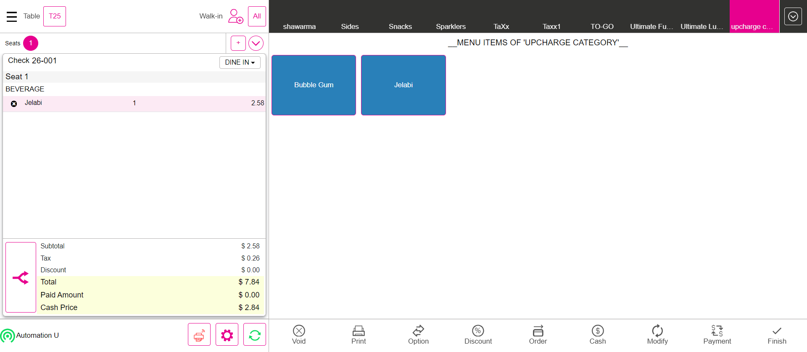FailUpcharge (Role restriction)Given I'm logged in for BarTab for basic validationAnd I click New Tab in the Bar Tab ScreenAnd I click the Exit to close the preauth windowStep skippedAnd I select upcharge as CategoryStep skippedAnd I select menu item as "Bubble Gum"Step skippedThen I should verify subtotal value as "$ 5.72"Step skippedThen I should verify tax value as "$ 0.57"Step skippedThen I should verify total value as "$ 6.29"Step skippedAnd I get Total of menu while cash discount appliedStep skippedAnd I click Cash button for Complete SaleStep skippedWhen I verify total Menu same with Fast cash total when Cash discount appliedStep skippedAnd I click Exact button on the cash pop-upStep skippedAnd I click Enter Button on the cash pop-upStep skippedAnd I click Table Layout tabStep skippedAnd I click power button in the All Orders screenStep skippedGiven I'm logged inStep skippedAnd I closed the order type windowStep skippedAnd I click AllStep skippedAnd I click Table Layout tabStep skippedAnd I click new check button on the Table layout screenStep skippedAnd I select table as "T25"Step skippedAnd I select the number of seats as "1"Step skippedAnd I tap Continue to finish selecting the number of seatsStep skippedAnd I get check numberStep skippedAnd I select upcharge as CategoryStep skippedAnd I select menu item as "Bubble Gum"Step skippedThen I should verify subtotal value as "$ 5.55"Step skippedThen I should verify tax value as "$ 0.56"Step skippedThen I should verify total value as "$ 6.11"Step skippedAnd I get Total of menu while cash discount appliedStep skippedAnd I click Cash button for Complete SaleStep skippedWhen I verify total Menu same with Fast cash total when Cash discount appliedStep skippedAnd I click Exact button on the cash pop-upStep skippedAnd I click Enter Button on the cash pop-upStep skippedAnd I click Table Layout tabStep skippedAnd I click Check Stats tabStep skippedAnd I click Closed tab on the Check statsStep skippedThen I should see closed check in closed check tabStep skippedAnd I click closed checks details icon buttonStep skippedThen I should see order summary screenStep skippedWhen I verify subtotal value with order summary subtotal valueStep skippedAnd I click power button in the All Orders screenStep skippedcom.qa.stepdef.Hooks.quit(io.cucumber.java.Scenario)
FailUpCharge (Verify the Upcharge for the check)Given I'm logged inAnd I closed the order type windowAnd I click AllAnd I click Table Layout tabAnd I click new check button on the Table layout screenAnd I select table as "T25"And I select the number of seats as "1"And I tap Continue to finish selecting the number of seatsAnd I get check numberAnd I select upcharge as CategoryAnd I select menu item as "Jelabi"Then I should verify subtotal value as "$ 2.58"Then I should verify tax value as "$ 0.26"Then I should verify total value as "$ 2.84"And I get Total of menu while cash discount appliedStep skippedAnd I click Cash button for Complete SaleStep skippedWhen I verify total Menu same with Fast cash total when Cash discount appliedStep skippedAnd I click Exact button on the cash pop-upStep skippedAnd I click Enter Button on the cash pop-upStep skippedAnd I click Table Layout tabStep skippedAnd I click Check Stats tabStep skippedAnd I click Closed tab on the Check statsStep skippedThen I should see closed check in closed check tabStep skippedAnd I click closed checks details icon buttonStep skippedThen I should see order summary screenStep skippedWhen I verify subtotal value with order summary subtotal valueStep skippedAnd I click power button in the All Orders screenStep skippedcom.qa.stepdef.Hooks.quit(io.cucumber.java.Scenario)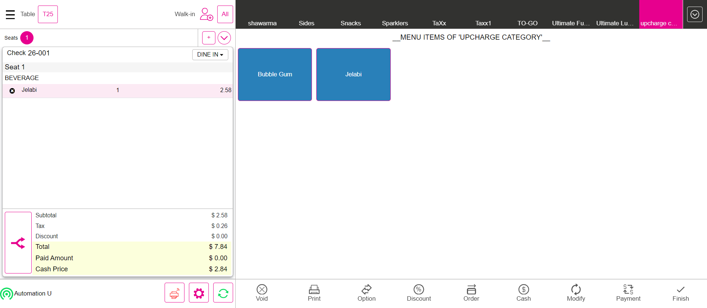FailUpcharge (Role restriction)Given I'm logged in for BarTab for basic validationAnd I click New Tab in the Bar Tab ScreenAnd I click the Exit to close the preauth windowStep skippedAnd I select upcharge as CategoryStep skippedAnd I select menu item as "Bubble Gum"Step skippedThen I should verify subtotal value as "$ 5.72"Step skippedThen I should verify tax value as "$ 0.57"Step skippedThen I should verify total value as "$ 6.29"Step skippedAnd I get Total of menu while cash discount appliedStep skippedAnd I click Cash button for Complete SaleStep skippedWhen I verify total Menu same with Fast cash total when Cash discount appliedStep skippedAnd I click Exact button on the cash pop-upStep skippedAnd I click Enter Button on the cash pop-upStep skippedAnd I click Table Layout tabStep skippedAnd I click power button in the All Orders screenStep skippedGiven I'm logged inStep skippedAnd I closed the order type windowStep skippedAnd I click AllStep skippedAnd I click Table Layout tabStep skippedAnd I click new check button on the Table layout screenStep skippedAnd I select table as "T25"Step skippedAnd I select the number of seats as "1"Step skippedAnd I tap Continue to finish selecting the number of seatsStep skippedAnd I get check numberStep skippedAnd I select upcharge as CategoryStep skippedAnd I select menu item as "Bubble Gum"Step skippedThen I should verify subtotal value as "$ 5.55"Step skippedThen I should verify tax value as "$ 0.56"Step skippedThen I should verify total value as "$ 6.11"Step skippedAnd I get Total of menu while cash discount appliedStep skippedAnd I click Cash button for Complete SaleStep skippedWhen I verify total Menu same with Fast cash total when Cash discount appliedStep skippedAnd I click Exact button on the cash pop-upStep skippedAnd I click Enter Button on the cash pop-upStep skippedAnd I click Table Layout tabStep skippedAnd I click Check Stats tabStep skippedAnd I click Closed tab on the Check statsStep skippedThen I should see closed check in closed check tabStep skippedAnd I click closed checks details icon buttonStep skippedThen I should see order summary screenStep skippedWhen I verify subtotal value with order summary subtotal valueStep skippedAnd I click power button in the All Orders screenStep skippedcom.qa.stepdef.Hooks.quit(io.cucumber.java.Scenario) PassVerify the sale in Bar Tab Service TypeGiven I'm logged inAnd I closed the order type windowAnd I click AllAnd I click BarTab LayoutAnd I click New Tab in the Bar Tab ScreenAnd I click the Exit to close the preauth windowAnd I get check numberAnd I select Menu of Basic validation for QSR as "Salad"And I click Finish Order buttonThen I should see the bar tab screenAnd I click merged barTabAnd I click Payment button in the Order Management ScreenAnd I click cash button from the payment method popupAnd I click Submit button on the Payment WindowAnd I click power button in the All Orders screenPassMenu Option - Verify the Menu option for the all service type by menu level in order screenGiven I'm logged inAnd I closed the order type windowAnd I select FOOD as categoryAnd I select menu item as "Onion Rings"And I click menu item as "Onion Rings" to see Menu option screenAnd I click Fire to send menu item to kitchenAnd I click menu item as "Onion Rings" to see Menu option screenAnd I click void item on Menu optionThen I should see the void reason popupAnd I click void Reason on the void popupAnd I click Add Button on the void reason popupAnd I click Void button on order management screenThen I should see the void reason popupAnd I click void Reason on the void popupAnd I click Add Button on the void reason popupAnd I closed the order type windowAnd I select FOOD as categoryAnd I select menu item as "mongo test"And I click menu item as "mongo test" to see Menu option screenAnd I click Repeat on menu optionThen I should see Repeated menu item as "mongo test"And I click menu item as "mongo test" to see Menu option screenAnd I click Quantity on menu optionAnd I click "3"And I click the Continue buttonThen I should see "3" is IncreasedAnd I click menu item as "mongo test" to see Menu option screenAnd I click Quantity on menu optionAnd I click "1"And I click the Continue buttonThen I should see "1" is IncreasedAnd I click menu item as "mongo test" to see Menu option screenAnd I click Attach on menu optionThen I should see Add Notes popupAnd I click Add notes reason as "Spicy"And I click Add Button on the void reason popupThen I should see reason as "Spicy" on the Order screenAnd I click Void button on order management screenThen I should see All orders are voidedAnd I click Done button on the PopupAnd I select FOOD as categoryAnd I select menu item as "mongo test"And I click menu item as "mongo test" to see Menu option screenAnd I click discount on menu optionAnd I click discount as "IB-AfterTax-Amount" in discount windowThen I verify discount as "IB-AfterTax-Amount" is applied or not in order screenAnd I click Void button on order management screenThen I should see All orders are voidedAnd I click Done button on the PopupAnd I select menu item as "mongo test"And I click menu item as "mongo test" to see Menu option screenAnd I click Open Item buttonThen I should see open item screenAnd I click Coursing Name text field for Menu optionAnd I swipe to "DESSERT" as Coursing NameAnd I pass course name as "fruits"And I tap Price text field for menu optionAnd I enter the price with saleAnd I click Continue button on the Open Item Price numbers popupAnd I click Done button on the open item windowThen I should navigate to Order Management screen and see the added open item as "fruits"And I click Void button on order management screenThen I should see All orders are voidedAnd I click Done button on the PopupAnd I select menu item as "mongo test"Then I should see orderscreen with menu item prize as "$ 10.00"Then I should see the tax amount reflected to the check as "$ 1.20"Then I should see orderscreen with menu item Total as "$ 11.20"And I click menu item as "mongo test" to see Menu option screenAnd I click Quantity on menu optionAnd I click "2"And I click the Continue buttonThen I should see "2" is IncreasedAnd I click menu item as "mongo test" to see Menu option screenAnd I click Open Discount on menu optionThen I should see Open discount ScreenAnd I pass the amount on open discount for open item discount as discount Percentage1 for "After"Then I should see discount applied on order screenThen I should see orderscreen with menu item prize as "$ 20.00"Then I should see the tax amount reflected to the check as "$ 2.40"Then I should see the Discount amount reflected to the check as "$ 4.46"Then I should see orderscreen with menu item Total as "$ 17.94"And I click Void button on order management screenThen I should see All orders are voidedAnd I click Done button on the PopupAnd I select menu item as "mongo test"And I click menu item as "mongo test" to see Menu option screenAnd I click Open Modifier on menu optionThen I should see Open modifier ScreenAnd I pass the Name as "fruits" and price on Open ModifierThen I should see open modifier as "fruits" added on open modifiers screenAnd I click Done button on the PopupThen I should see modifier as "fruits" applied on order screenAnd I click Void button on order management screenThen I should see All orders are voidedAnd I click Done button on the PopupAnd I select menu item as "mongo test"And I click menu item as "mongo test" to see Menu option screenAnd I click change coursing on menu optionAnd I swipe to "DESSERT" as Coursing NameAnd I click Done button on the open item windowThen I should see coursing name as "DESSERT"And I click Void button on order management screenThen I should see All orders are voidedAnd I click Done button on the PopupAnd I click log off button in order screenPassCheck OPTIONSGiven I'm logged inAnd I closed the order type windowAnd I select FOOD as categoryAnd I select menu item as "Chicken Schnitzel"Then I should see orderscreen with menu item prize as "$ 12.00"Then I should see the tax amount reflected to the check as "$ 1.20"Then I should see orderscreen with menu item Total as "$ 13.20"And I click Options buttonThen I should see the Check Options screenAnd I click Tax Exempt ButtonThen I should see orderscreen with menu item prize as "$ 12.00"Then I should see the tax reflected to the checkThen I should see orderscreen with menu item Total as "$ 12.00"And I click Options buttonThen I should see the Check Options screenAnd I click Tax Exempt ButtonThen I should see orderscreen with menu item prize as "$ 12.00"Then I should see the tax amount reflected to the check as "$ 1.20"Then I should see orderscreen with menu item Total as "$ 13.20"And I click Void button on order management screenThen I should see All orders are voidedAnd I click Done button on the PopupAnd I select FOOD as categoryAnd I select menu item as "mongo test"And I click Options buttonAnd I click discount on check option screenAnd I click item discount from the check optionsAnd I select tax as "IB-AfterTax-Amount"Then I should see discount as "IB-AfterTax-Amount" applied on order screenThen I verify Item discount is applied or not in order screenAnd I click Options buttonAnd I click discount on check option screenAnd I click item discount from the check optionsAnd I select tax as "IB-AfterTax-Amount"And I click Options buttonAnd I click discount on check option screenAnd I click check discount from the check optionsAnd I select tax as "Check-Based Percentage"Then I verify check discount is applied or not in order screenAnd I click Options buttonAnd I click discount on check option screenAnd I click check discount from the check optionsAnd I select tax as "Check-Based Percentage"And I click Void button on order management screenThen I should see All orders are voidedAnd I click Done button on the PopupAnd I click Options buttonThen I should see the Check Options screenAnd I click Open Item buttonThen I should see open item screenAnd I click Coursing Name text fieldAnd I swipe to "Retails" as Coursing NameAnd I enter course name as "Open Item" for check based open itemAnd I tap Price text fieldAnd I enter price for check based open itemAnd I get the open item value from open item windowAnd I click Continue button on the Open Item Price numbers popupAnd I click Done button on the open item windowThen I should navigate to Order Management screen and see the added open item as "Open Item"Then I verify the open item value from open item window with order screenAnd I click Void button on order management screenThen I should see All orders are voidedAnd I click Done button on the PopupAnd I click log off button in order screenFailGiftGiven I'm logged inAnd I close the order type windowAnd I click Options buttonAnd I click Gift card ButtonThen I should see Gift card windowAnd I enter gift card numberStep skippedAnd I click charge amount field and pass the amountStep skippedAnd I click Done button on the PopupStep skippedThen I should see gift card amount add up into order screenStep skippedAnd I click Cash button for Complete SaleStep skippedAnd I click Exact button on the cash pop-upStep skippedAnd I click Enter Button on the cash pop-upStep skippedAnd I closed the order type windowStep skippedAnd I click Options buttonStep skippedAnd I click Gift card ButtonStep skippedThen I should see Gift card windowStep skippedAnd I enter gift card numberStep skippedThen I verify beginning balance,recurring balanceStep skippedWhen I click Suspend account button in the gift card windowStep skippedThen I should see gift card inactivated successfully popupStep skippedAnd I click Done button on the Popup 1Step skippedAnd I click Done if its selectableStep skippedAnd I click Active account button in the gift card windowStep skippedThen I should see gift card activated successfully popupStep skippedAnd I click Done button on the Popup 1Step skippedWhen I enter the charge amount as "124530" on the Gift card windowStep skippedAnd I click Done button on the PopupStep skippedAnd I click Payment button in the Order Management ScreenStep skippedAnd I click Gift card payment in payment windowStep skippedThen I should see total screenStep skippedAnd I click the Continue button on the Total screenStep skippedThen I should see your order card screenStep skippedAnd I click manual button on the your order screenStep skippedAnd I pass the card number as "1111"Step skippedAnd I pass card name as "Gift Card"Step skippedAnd I pass expire date as "1224"Step skippedAnd I click Process button on card screenStep skippedAnd I closed the order type windowStep skippedAnd I click log off button in order screenStep skippedcom.qa.stepdef.Hooks.quit(io.cucumber.java.Scenario)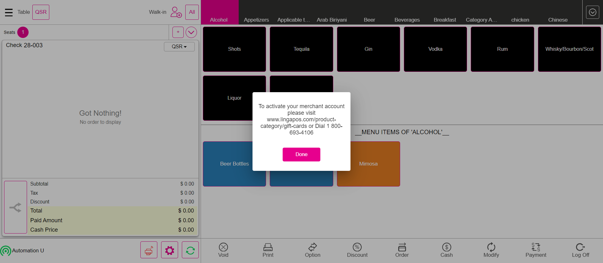Fail86 listGiven I'm logged inAnd I closed the order type windowAnd I select category as "Applicable time period"And I select menu item as "Pasta applicable time"Then I should see quantity is not enough popupAnd I click Done button on the PopupAnd I click the Settings buttonAnd I click 86List button in the operation windowThen I should see 86 list windowAnd I click on the search field "Chicken Rice" for searching the menu item "search menu item"And I click the quantity txt field in the eighty six list popup "click qty txt field"And I enter the quantity value as "0","0","0","8"Then I click "Continue" in the Quantity popup "Click Continue Button"And I click the quantity txt field in the eighty six list popup "click qty txt field"Step skippedAnd I enter the quantity value as "0","0","0","8"Step skippedThen I click "Continue" in the Quantity popup "Click Continue Button"Step skippedAnd I click the Toggle Icon buttonStep skippedAnd I click POS Icon from ToggleStep skippedAnd I closed the order type windowStep skippedAnd I click AllStep skippedAnd I click Table Layout tabStep skippedAnd I click new check button on the Table layout screenStep skippedAnd I select table as "T18"Step skippedAnd I select the number of seats as "1"Step skippedAnd I tap Continue to finish selecting the number of seatsStep skippedThen I Should get back to the Order ScreenStep skippedWhen I get the check no in the order screen "Get Check Number"Step skippedAnd I select category as "Ultimate Lunch"Step skippedAnd I click "Chicken Rice" from the menu item "Click item as veg biriyani"Step skippedThen I should verify the quantity "7" is displayed in the order screen is decreased after order with menu as "Chicken Rice"Step skippedAnd I click menu item as "Chicken Rice" to see Menu option screenStep skippedAnd I click Repeat on menu optionStep skippedThen I should see Repeated menu item as "Chicken Rice"Step skippedThen I should verify the quantity "6" is displayed in the order screen is decreased after order with menu as "Chicken Rice"Step skippedAnd I click menu item as "Chicken Rice" to see Menu option screenStep skippedAnd I click Quantity on menu optionStep skippedAnd I click "3"Step skippedAnd I click the Continue buttonStep skippedThen I should see "3" is IncreasedStep skippedThen I should verify the quantity "4" is displayed in the order screen is decreased after order with menu as "Chicken Rice"Step skippedAnd I click menu item as "Chicken Rice" to see Menu option screenStep skippedAnd I click Quantity on menu optionStep skippedAnd I click "9"Step skippedAnd I click the Continue buttonStep skippedThen I should see quantity is not enough popup2Step skippedAnd I click Done button on the PopupStep skippedAnd I click Finish Order buttonStep skippedAnd I click power button in the All Orders screenStep skippedcom.qa.stepdef.Hooks.quit(io.cucumber.java.Scenario)
PassVerify the sale in Bar Tab Service TypeGiven I'm logged inAnd I closed the order type windowAnd I click AllAnd I click BarTab LayoutAnd I click New Tab in the Bar Tab ScreenAnd I click the Exit to close the preauth windowAnd I get check numberAnd I select Menu of Basic validation for QSR as "Salad"And I click Finish Order buttonThen I should see the bar tab screenAnd I click merged barTabAnd I click Payment button in the Order Management ScreenAnd I click cash button from the payment method popupAnd I click Submit button on the Payment WindowAnd I click power button in the All Orders screenPassMenu Option - Verify the Menu option for the all service type by menu level in order screenGiven I'm logged inAnd I closed the order type windowAnd I select FOOD as categoryAnd I select menu item as "Onion Rings"And I click menu item as "Onion Rings" to see Menu option screenAnd I click Fire to send menu item to kitchenAnd I click menu item as "Onion Rings" to see Menu option screenAnd I click void item on Menu optionThen I should see the void reason popupAnd I click void Reason on the void popupAnd I click Add Button on the void reason popupAnd I click Void button on order management screenThen I should see the void reason popupAnd I click void Reason on the void popupAnd I click Add Button on the void reason popupAnd I closed the order type windowAnd I select FOOD as categoryAnd I select menu item as "mongo test"And I click menu item as "mongo test" to see Menu option screenAnd I click Repeat on menu optionThen I should see Repeated menu item as "mongo test"And I click menu item as "mongo test" to see Menu option screenAnd I click Quantity on menu optionAnd I click "3"And I click the Continue buttonThen I should see "3" is IncreasedAnd I click menu item as "mongo test" to see Menu option screenAnd I click Quantity on menu optionAnd I click "1"And I click the Continue buttonThen I should see "1" is IncreasedAnd I click menu item as "mongo test" to see Menu option screenAnd I click Attach on menu optionThen I should see Add Notes popupAnd I click Add notes reason as "Spicy"And I click Add Button on the void reason popupThen I should see reason as "Spicy" on the Order screenAnd I click Void button on order management screenThen I should see All orders are voidedAnd I click Done button on the PopupAnd I select FOOD as categoryAnd I select menu item as "mongo test"And I click menu item as "mongo test" to see Menu option screenAnd I click discount on menu optionAnd I click discount as "IB-AfterTax-Amount" in discount windowThen I verify discount as "IB-AfterTax-Amount" is applied or not in order screenAnd I click Void button on order management screenThen I should see All orders are voidedAnd I click Done button on the PopupAnd I select menu item as "mongo test"And I click menu item as "mongo test" to see Menu option screenAnd I click Open Item buttonThen I should see open item screenAnd I click Coursing Name text field for Menu optionAnd I swipe to "DESSERT" as Coursing NameAnd I pass course name as "fruits"And I tap Price text field for menu optionAnd I enter the price with saleAnd I click Continue button on the Open Item Price numbers popupAnd I click Done button on the open item windowThen I should navigate to Order Management screen and see the added open item as "fruits"And I click Void button on order management screenThen I should see All orders are voidedAnd I click Done button on the PopupAnd I select menu item as "mongo test"Then I should see orderscreen with menu item prize as "$ 10.00"Then I should see the tax amount reflected to the check as "$ 1.20"Then I should see orderscreen with menu item Total as "$ 11.20"And I click menu item as "mongo test" to see Menu option screenAnd I click Quantity on menu optionAnd I click "2"And I click the Continue buttonThen I should see "2" is IncreasedAnd I click menu item as "mongo test" to see Menu option screenAnd I click Open Discount on menu optionThen I should see Open discount ScreenAnd I pass the amount on open discount for open item discount as discount Percentage1 for "After"Then I should see discount applied on order screenThen I should see orderscreen with menu item prize as "$ 20.00"Then I should see the tax amount reflected to the check as "$ 2.40"Then I should see the Discount amount reflected to the check as "$ 4.46"Then I should see orderscreen with menu item Total as "$ 17.94"And I click Void button on order management screenThen I should see All orders are voidedAnd I click Done button on the PopupAnd I select menu item as "mongo test"And I click menu item as "mongo test" to see Menu option screenAnd I click Open Modifier on menu optionThen I should see Open modifier ScreenAnd I pass the Name as "fruits" and price on Open ModifierThen I should see open modifier as "fruits" added on open modifiers screenAnd I click Done button on the PopupThen I should see modifier as "fruits" applied on order screenAnd I click Void button on order management screenThen I should see All orders are voidedAnd I click Done button on the PopupAnd I select menu item as "mongo test"And I click menu item as "mongo test" to see Menu option screenAnd I click change coursing on menu optionAnd I swipe to "DESSERT" as Coursing NameAnd I click Done button on the open item windowThen I should see coursing name as "DESSERT"And I click Void button on order management screenThen I should see All orders are voidedAnd I click Done button on the PopupAnd I click log off button in order screenPassCheck OPTIONSGiven I'm logged inAnd I closed the order type windowAnd I select FOOD as categoryAnd I select menu item as "Chicken Schnitzel"Then I should see orderscreen with menu item prize as "$ 12.00"Then I should see the tax amount reflected to the check as "$ 1.20"Then I should see orderscreen with menu item Total as "$ 13.20"And I click Options buttonThen I should see the Check Options screenAnd I click Tax Exempt ButtonThen I should see orderscreen with menu item prize as "$ 12.00"Then I should see the tax reflected to the checkThen I should see orderscreen with menu item Total as "$ 12.00"And I click Options buttonThen I should see the Check Options screenAnd I click Tax Exempt ButtonThen I should see orderscreen with menu item prize as "$ 12.00"Then I should see the tax amount reflected to the check as "$ 1.20"Then I should see orderscreen with menu item Total as "$ 13.20"And I click Void button on order management screenThen I should see All orders are voidedAnd I click Done button on the PopupAnd I select FOOD as categoryAnd I select menu item as "mongo test"And I click Options buttonAnd I click discount on check option screenAnd I click item discount from the check optionsAnd I select tax as "IB-AfterTax-Amount"Then I should see discount as "IB-AfterTax-Amount" applied on order screenThen I verify Item discount is applied or not in order screenAnd I click Options buttonAnd I click discount on check option screenAnd I click item discount from the check optionsAnd I select tax as "IB-AfterTax-Amount"And I click Options buttonAnd I click discount on check option screenAnd I click check discount from the check optionsAnd I select tax as "Check-Based Percentage"Then I verify check discount is applied or not in order screenAnd I click Options buttonAnd I click discount on check option screenAnd I click check discount from the check optionsAnd I select tax as "Check-Based Percentage"And I click Void button on order management screenThen I should see All orders are voidedAnd I click Done button on the PopupAnd I click Options buttonThen I should see the Check Options screenAnd I click Open Item buttonThen I should see open item screenAnd I click Coursing Name text fieldAnd I swipe to "Retails" as Coursing NameAnd I enter course name as "Open Item" for check based open itemAnd I tap Price text fieldAnd I enter price for check based open itemAnd I get the open item value from open item windowAnd I click Continue button on the Open Item Price numbers popupAnd I click Done button on the open item windowThen I should navigate to Order Management screen and see the added open item as "Open Item"Then I verify the open item value from open item window with order screenAnd I click Void button on order management screenThen I should see All orders are voidedAnd I click Done button on the PopupAnd I click log off button in order screenFailGiftGiven I'm logged inAnd I close the order type windowAnd I click Options buttonAnd I click Gift card ButtonThen I should see Gift card windowAnd I enter gift card numberStep skippedAnd I click charge amount field and pass the amountStep skippedAnd I click Done button on the PopupStep skippedThen I should see gift card amount add up into order screenStep skippedAnd I click Cash button for Complete SaleStep skippedAnd I click Exact button on the cash pop-upStep skippedAnd I click Enter Button on the cash pop-upStep skippedAnd I closed the order type windowStep skippedAnd I click Options buttonStep skippedAnd I click Gift card ButtonStep skippedThen I should see Gift card windowStep skippedAnd I enter gift card numberStep skippedThen I verify beginning balance,recurring balanceStep skippedWhen I click Suspend account button in the gift card windowStep skippedThen I should see gift card inactivated successfully popupStep skippedAnd I click Done button on the Popup 1Step skippedAnd I click Done if its selectableStep skippedAnd I click Active account button in the gift card windowStep skippedThen I should see gift card activated successfully popupStep skippedAnd I click Done button on the Popup 1Step skippedWhen I enter the charge amount as "124530" on the Gift card windowStep skippedAnd I click Done button on the PopupStep skippedAnd I click Payment button in the Order Management ScreenStep skippedAnd I click Gift card payment in payment windowStep skippedThen I should see total screenStep skippedAnd I click the Continue button on the Total screenStep skippedThen I should see your order card screenStep skippedAnd I click manual button on the your order screenStep skippedAnd I pass the card number as "1111"Step skippedAnd I pass card name as "Gift Card"Step skippedAnd I pass expire date as "1224"Step skippedAnd I click Process button on card screenStep skippedAnd I closed the order type windowStep skippedAnd I click log off button in order screenStep skippedcom.qa.stepdef.Hooks.quit(io.cucumber.java.Scenario)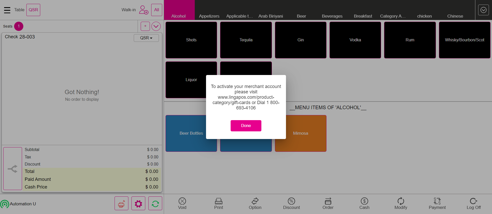Fail86 listGiven I'm logged inAnd I closed the order type windowAnd I select category as "Applicable time period"And I select menu item as "Pasta applicable time"Then I should see quantity is not enough popupAnd I click Done button on the PopupAnd I click the Settings buttonAnd I click 86List button in the operation windowThen I should see 86 list windowAnd I click on the search field "Chicken Rice" for searching the menu item "search menu item"And I click the quantity txt field in the eighty six list popup "click qty txt field"And I enter the quantity value as "0","0","0","8"Then I click "Continue" in the Quantity popup "Click Continue Button"And I click the quantity txt field in the eighty six list popup "click qty txt field"Step skippedAnd I enter the quantity value as "0","0","0","8"Step skippedThen I click "Continue" in the Quantity popup "Click Continue Button"Step skippedAnd I click the Toggle Icon buttonStep skippedAnd I click POS Icon from ToggleStep skippedAnd I closed the order type windowStep skippedAnd I click AllStep skippedAnd I click Table Layout tabStep skippedAnd I click new check button on the Table layout screenStep skippedAnd I select table as "T18"Step skippedAnd I select the number of seats as "1"Step skippedAnd I tap Continue to finish selecting the number of seatsStep skippedThen I Should get back to the Order ScreenStep skippedWhen I get the check no in the order screen "Get Check Number"Step skippedAnd I select category as "Ultimate Lunch"Step skippedAnd I click "Chicken Rice" from the menu item "Click item as veg biriyani"Step skippedThen I should verify the quantity "7" is displayed in the order screen is decreased after order with menu as "Chicken Rice"Step skippedAnd I click menu item as "Chicken Rice" to see Menu option screenStep skippedAnd I click Repeat on menu optionStep skippedThen I should see Repeated menu item as "Chicken Rice"Step skippedThen I should verify the quantity "6" is displayed in the order screen is decreased after order with menu as "Chicken Rice"Step skippedAnd I click menu item as "Chicken Rice" to see Menu option screenStep skippedAnd I click Quantity on menu optionStep skippedAnd I click "3"Step skippedAnd I click the Continue buttonStep skippedThen I should see "3" is IncreasedStep skippedThen I should verify the quantity "4" is displayed in the order screen is decreased after order with menu as "Chicken Rice"Step skippedAnd I click menu item as "Chicken Rice" to see Menu option screenStep skippedAnd I click Quantity on menu optionStep skippedAnd I click "9"Step skippedAnd I click the Continue buttonStep skippedThen I should see quantity is not enough popup2Step skippedAnd I click Done button on the PopupStep skippedAnd I click Finish Order buttonStep skippedAnd I click power button in the All Orders screenStep skippedcom.qa.stepdef.Hooks.quit(io.cucumber.java.Scenario) PassMerge With Check Based Amount (Verify the Merge option from Table layout screen )Given I'm logged inAnd I closed the order type windowAnd I click AllAnd I click Table Layout tabAnd I select Menu for DineIn as "North Indian dish" for split seat order screen for mergeAnd I select Discount on the Order screenThen I should see Check Based Discount ScreenAnd I click Discount as "Check Based Amount"And I click Back button on Discount ScreenAnd I get the seat number from the checkAnd I get the list of the menu from the order screenAnd I get value the menu values from order screenAnd I click Finish buttonAnd I click Table Layout tabAnd I select Menu for DineIn as "North Indian dish" for split seat order screen1And I select Discount on the Order screenThen I should see Check Based Discount ScreenAnd I click Discount as "Check Based Amount"And I click Back button on Discount ScreenAnd I get the seat number from the check1And I get the list of the menu from the order screen1And I click Finish buttonAnd I click Table Layout tabAnd I click Merge buttonWhen I click the check from the table layout for mergedThen I should see on merging the particular checks popupAnd I click yes to open Close Till ScreenWhen I click the check from the table layout for merged1Then I should see on merging the particular checks popupAnd I click yes to open Close Till ScreenAnd I click Done button on the pop-up to complete mergingThen I should see merge checks confirmation popupAnd I click confirm button on the merge check confirmation popupThen I should see the merged popup after mergeAnd I click Done button on the PopupWhen I click the check from the table layout for mergedThen I Should get back to the Order ScreenAnd I verify check number from the order screenWhen I verify the seat number from the order screenAnd I select seat oneWhen I verify the seat 1 order screen menu with 1st check menuAnd I select seat twoWhen I verify the seat 2 order screen menu with 2nd check menuAnd I click table number on the order screenAnd I click Cash button for Complete SaleAnd I click Exact button on the cash pop-upAnd I click Enter Button on the cash pop-upAnd I click Table Layout tabAnd I click power button in the All Orders screenPassMerge with Item Based Amount (Verify the Merge option from Table layout screen )Given I'm logged inAnd I closed the order type windowAnd I click AllAnd I click Table Layout tabAnd I select Menu for DineIn as "North Indian dish" for split seat order screen for mergeAnd I select Discount on the Order screenThen I should see Check Based Discount ScreenAnd I click Discount as "IB-AfterTax-Amount"And I click Back button on Discount ScreenAnd I get the seat number from the checkAnd I get the list of the menu from the order screenAnd I get value the menu values from order screenAnd I click Finish buttonAnd I click Table Layout tabAnd I select Menu for DineIn as "North Indian dish" for split seat order screen1And I select Discount on the Order screenThen I should see Check Based Discount ScreenAnd I click Discount as "IB-AfterTax-Amount"And I click Back button on Discount ScreenAnd I get the seat number from the check1And I get the list of the menu from the order screen1And I click Finish buttonAnd I click Table Layout tabAnd I click Merge buttonWhen I click the check from the table layout for mergedThen I should see on merging the particular checks popupAnd I click yes to open Close Till ScreenWhen I click the check from the table layout for merged1Then I should see on merging the particular checks popupAnd I click yes to open Close Till ScreenAnd I click Done button on the pop-up to complete mergingThen I should see merge checks confirmation popupAnd I click confirm button on the merge check confirmation popupThen I should see the merged popup after mergeAnd I click Done button on the PopupWhen I click the check from the table layout for mergedThen I Should get back to the Order ScreenAnd I verify check number from the order screenWhen I verify the seat number from the order screenAnd I select seat oneWhen I verify the seat 1 order screen menu with 1st check menuAnd I select seat twoWhen I verify the seat 2 order screen menu with 2nd check menuAnd I click table number on the order screenAnd I click Cash button for Complete SaleAnd I click Exact button on the cash pop-upAnd I click Enter Button on the cash pop-upAnd I click Table Layout tabAnd I click power button in the All Orders screenFailVerify the Merge option from Bar Tab screenGiven I'm logged inAnd I closed the order type windowAnd I click AllAnd I click BarTab LayoutAnd I click NewTab from BarTab LayoutAnd I select Menu For Bartab order type as "North Indian dish" for merge CheckAnd I get the seat number from the checkAnd I get the list of the menu from the order screenAnd I get value the menu values from order screenAnd I click Finish buttonAnd I click BarTab LayoutAnd I click NewTab from BarTab LayoutAnd I select Menu For Bartab order type as "North Indian dish" for merge Check1And I get the seat number from the check1And I get the list of the menu from the order screen1And I click Finish buttonAnd I click BarTab LayoutAnd I click Merge buttonWhen I click the check from the bartab screen for mergeWhen I click the check from the bartab screen1 for mergeAnd I click Done button to merge checksThen I should see the merged popup after mergeAnd I click Done button on the PopupWhen I click the check from the bartab screenThen I Should get back to the Order ScreenStep skippedAnd I verify check number from the order screenStep skippedWhen I verify the seat number from the order screenStep skippedAnd I select seat oneStep skippedWhen I verify the seat 1 order screen menu with 1st check menuStep skippedAnd I select seat twoStep skippedWhen I verify the seat 2 order screen menu with 2nd check menuStep skippedAnd I click table number on the order screenStep skippedAnd I click Cash button for Complete SaleStep skippedAnd I click Exact button on the cash pop-upStep skippedAnd I click Enter Button on the cash pop-upStep skippedAnd I click BarTab LayoutStep skippedAnd I click power button in the All Orders screenStep skippedcom.qa.stepdef.Hooks.quit(io.cucumber.java.Scenario)
PassMerge With Check Based Amount (Verify the Merge option from Table layout screen )Given I'm logged inAnd I closed the order type windowAnd I click AllAnd I click Table Layout tabAnd I select Menu for DineIn as "North Indian dish" for split seat order screen for mergeAnd I select Discount on the Order screenThen I should see Check Based Discount ScreenAnd I click Discount as "Check Based Amount"And I click Back button on Discount ScreenAnd I get the seat number from the checkAnd I get the list of the menu from the order screenAnd I get value the menu values from order screenAnd I click Finish buttonAnd I click Table Layout tabAnd I select Menu for DineIn as "North Indian dish" for split seat order screen1And I select Discount on the Order screenThen I should see Check Based Discount ScreenAnd I click Discount as "Check Based Amount"And I click Back button on Discount ScreenAnd I get the seat number from the check1And I get the list of the menu from the order screen1And I click Finish buttonAnd I click Table Layout tabAnd I click Merge buttonWhen I click the check from the table layout for mergedThen I should see on merging the particular checks popupAnd I click yes to open Close Till ScreenWhen I click the check from the table layout for merged1Then I should see on merging the particular checks popupAnd I click yes to open Close Till ScreenAnd I click Done button on the pop-up to complete mergingThen I should see merge checks confirmation popupAnd I click confirm button on the merge check confirmation popupThen I should see the merged popup after mergeAnd I click Done button on the PopupWhen I click the check from the table layout for mergedThen I Should get back to the Order ScreenAnd I verify check number from the order screenWhen I verify the seat number from the order screenAnd I select seat oneWhen I verify the seat 1 order screen menu with 1st check menuAnd I select seat twoWhen I verify the seat 2 order screen menu with 2nd check menuAnd I click table number on the order screenAnd I click Cash button for Complete SaleAnd I click Exact button on the cash pop-upAnd I click Enter Button on the cash pop-upAnd I click Table Layout tabAnd I click power button in the All Orders screenPassMerge with Item Based Amount (Verify the Merge option from Table layout screen )Given I'm logged inAnd I closed the order type windowAnd I click AllAnd I click Table Layout tabAnd I select Menu for DineIn as "North Indian dish" for split seat order screen for mergeAnd I select Discount on the Order screenThen I should see Check Based Discount ScreenAnd I click Discount as "IB-AfterTax-Amount"And I click Back button on Discount ScreenAnd I get the seat number from the checkAnd I get the list of the menu from the order screenAnd I get value the menu values from order screenAnd I click Finish buttonAnd I click Table Layout tabAnd I select Menu for DineIn as "North Indian dish" for split seat order screen1And I select Discount on the Order screenThen I should see Check Based Discount ScreenAnd I click Discount as "IB-AfterTax-Amount"And I click Back button on Discount ScreenAnd I get the seat number from the check1And I get the list of the menu from the order screen1And I click Finish buttonAnd I click Table Layout tabAnd I click Merge buttonWhen I click the check from the table layout for mergedThen I should see on merging the particular checks popupAnd I click yes to open Close Till ScreenWhen I click the check from the table layout for merged1Then I should see on merging the particular checks popupAnd I click yes to open Close Till ScreenAnd I click Done button on the pop-up to complete mergingThen I should see merge checks confirmation popupAnd I click confirm button on the merge check confirmation popupThen I should see the merged popup after mergeAnd I click Done button on the PopupWhen I click the check from the table layout for mergedThen I Should get back to the Order ScreenAnd I verify check number from the order screenWhen I verify the seat number from the order screenAnd I select seat oneWhen I verify the seat 1 order screen menu with 1st check menuAnd I select seat twoWhen I verify the seat 2 order screen menu with 2nd check menuAnd I click table number on the order screenAnd I click Cash button for Complete SaleAnd I click Exact button on the cash pop-upAnd I click Enter Button on the cash pop-upAnd I click Table Layout tabAnd I click power button in the All Orders screenFailVerify the Merge option from Bar Tab screenGiven I'm logged inAnd I closed the order type windowAnd I click AllAnd I click BarTab LayoutAnd I click NewTab from BarTab LayoutAnd I select Menu For Bartab order type as "North Indian dish" for merge CheckAnd I get the seat number from the checkAnd I get the list of the menu from the order screenAnd I get value the menu values from order screenAnd I click Finish buttonAnd I click BarTab LayoutAnd I click NewTab from BarTab LayoutAnd I select Menu For Bartab order type as "North Indian dish" for merge Check1And I get the seat number from the check1And I get the list of the menu from the order screen1And I click Finish buttonAnd I click BarTab LayoutAnd I click Merge buttonWhen I click the check from the bartab screen for mergeWhen I click the check from the bartab screen1 for mergeAnd I click Done button to merge checksThen I should see the merged popup after mergeAnd I click Done button on the PopupWhen I click the check from the bartab screenThen I Should get back to the Order ScreenStep skippedAnd I verify check number from the order screenStep skippedWhen I verify the seat number from the order screenStep skippedAnd I select seat oneStep skippedWhen I verify the seat 1 order screen menu with 1st check menuStep skippedAnd I select seat twoStep skippedWhen I verify the seat 2 order screen menu with 2nd check menuStep skippedAnd I click table number on the order screenStep skippedAnd I click Cash button for Complete SaleStep skippedAnd I click Exact button on the cash pop-upStep skippedAnd I click Enter Button on the cash pop-upStep skippedAnd I click BarTab LayoutStep skippedAnd I click power button in the All Orders screenStep skippedcom.qa.stepdef.Hooks.quit(io.cucumber.java.Scenario) FailSplit Check from Table layoutGiven I'm logged inAnd I closed the order type windowAnd I click AllAnd I click Table Layout tabAnd I select Menu For Dine order type as "North Indian dish" for split CheckAnd I click Finish buttonAnd I click Check Stats tabThen I should see active checkAnd I click Table Layout tabAnd I click the Split Button from the Table Layout ScreenAnd I click split check buttonWhen I click the check from the table layoutThen I should see the Split check screenWhen I verify the Active check with split checkAnd I click Add Button on the split check screenThen I should see new check added on the split check screenAnd I click the menu on the split check screenAnd I click new check added on the split check screenWhen I verify the menu is moved to the added check seatAnd I click new check added on the split check screenAnd I click print button in the split check screenThen I should see please save all the changes to print popupAnd I click yes to open Close Till ScreenWhen I verify the check is splitted and check number is increasedAnd I click print All Button in the split check screenAnd I click the menu on the split check screenAnd I click Seperate item buttonAnd I select the number of split item "2" for Split checkAnd I click the Continue buttonThen I should see menu has separated as "2"And I click the save & close button on the split screenThen I Should get back to the Order ScreenWhen I verify primary check is opened after split check is doneAnd I click Cash button for Complete SaleAnd I click Exact button on the cash pop-upAnd I click Enter Button on the cash pop-upAnd I click Table Layout tabAnd I click Check Stats tabWhen I verify the splitted check is available in active checks tabAnd I click Table Layout tabAnd I select Menu For Dine order type as "North Indian dish" for split CheckAnd I click Finish buttonAnd I click Check Stats tabThen I should see active checkAnd I click Table Layout tabAnd I click the Split Button from the Table Layout ScreenAnd I click split check buttonWhen I click the check from the table layoutThen I should see the Split check screenWhen I verify the Active check with split checkStep skippedThen I should see seat available in the split checkStep skippedAnd I click split by seat in the split check screenStep skippedThen I should see new check added on the split check screenStep skippedAnd I click the menu on the split check screenStep skippedAnd I click new check added on the split check screenStep skippedWhen I verify the menu is moved to the added check seatStep skippedAnd I click new check added on the split check screenStep skippedAnd I click print button in the split check screenStep skippedThen I should see please save all the changes to print popupStep skippedAnd I click yes to open Close Till ScreenStep skippedWhen I verify the check is splitted and check number is increasedStep skippedAnd I click print All Button in the split check screenStep skippedAnd I click the menu on the split check screenStep skippedAnd I click Seperate item buttonStep skippedAnd I select the number of split item "2" for Split checkStep skippedAnd I click the Continue buttonStep skippedThen I should see menu has separated as "2"Step skippedAnd I click the save & close button on the split screenStep skippedThen I Should get back to the Order ScreenStep skippedWhen I verify primary check is opened after split check is doneStep skippedAnd I click Cash button for Complete SaleStep skippedAnd I click Exact button on the cash pop-upStep skippedAnd I click Enter Button on the cash pop-upStep skippedAnd I click Table Layout tabStep skippedAnd I click Check Stats tabStep skippedWhen I verify the splitted check is available in active checks tabStep skippedAnd I click power button in the All Orders screenStep skippedcom.qa.stepdef.Hooks.quit(io.cucumber.java.Scenario)
FailSplit Check from Table layoutGiven I'm logged inAnd I closed the order type windowAnd I click AllAnd I click Table Layout tabAnd I select Menu For Dine order type as "North Indian dish" for split CheckAnd I click Finish buttonAnd I click Check Stats tabThen I should see active checkAnd I click Table Layout tabAnd I click the Split Button from the Table Layout ScreenAnd I click split check buttonWhen I click the check from the table layoutThen I should see the Split check screenWhen I verify the Active check with split checkAnd I click Add Button on the split check screenThen I should see new check added on the split check screenAnd I click the menu on the split check screenAnd I click new check added on the split check screenWhen I verify the menu is moved to the added check seatAnd I click new check added on the split check screenAnd I click print button in the split check screenThen I should see please save all the changes to print popupAnd I click yes to open Close Till ScreenWhen I verify the check is splitted and check number is increasedAnd I click print All Button in the split check screenAnd I click the menu on the split check screenAnd I click Seperate item buttonAnd I select the number of split item "2" for Split checkAnd I click the Continue buttonThen I should see menu has separated as "2"And I click the save & close button on the split screenThen I Should get back to the Order ScreenWhen I verify primary check is opened after split check is doneAnd I click Cash button for Complete SaleAnd I click Exact button on the cash pop-upAnd I click Enter Button on the cash pop-upAnd I click Table Layout tabAnd I click Check Stats tabWhen I verify the splitted check is available in active checks tabAnd I click Table Layout tabAnd I select Menu For Dine order type as "North Indian dish" for split CheckAnd I click Finish buttonAnd I click Check Stats tabThen I should see active checkAnd I click Table Layout tabAnd I click the Split Button from the Table Layout ScreenAnd I click split check buttonWhen I click the check from the table layoutThen I should see the Split check screenWhen I verify the Active check with split checkStep skippedThen I should see seat available in the split checkStep skippedAnd I click split by seat in the split check screenStep skippedThen I should see new check added on the split check screenStep skippedAnd I click the menu on the split check screenStep skippedAnd I click new check added on the split check screenStep skippedWhen I verify the menu is moved to the added check seatStep skippedAnd I click new check added on the split check screenStep skippedAnd I click print button in the split check screenStep skippedThen I should see please save all the changes to print popupStep skippedAnd I click yes to open Close Till ScreenStep skippedWhen I verify the check is splitted and check number is increasedStep skippedAnd I click print All Button in the split check screenStep skippedAnd I click the menu on the split check screenStep skippedAnd I click Seperate item buttonStep skippedAnd I select the number of split item "2" for Split checkStep skippedAnd I click the Continue buttonStep skippedThen I should see menu has separated as "2"Step skippedAnd I click the save & close button on the split screenStep skippedThen I Should get back to the Order ScreenStep skippedWhen I verify primary check is opened after split check is doneStep skippedAnd I click Cash button for Complete SaleStep skippedAnd I click Exact button on the cash pop-upStep skippedAnd I click Enter Button on the cash pop-upStep skippedAnd I click Table Layout tabStep skippedAnd I click Check Stats tabStep skippedWhen I verify the splitted check is available in active checks tabStep skippedAnd I click power button in the All Orders screenStep skippedcom.qa.stepdef.Hooks.quit(io.cucumber.java.Scenario) PassSplit Check By BarTab ScreenGiven I'm logged inAnd I closed the order type windowAnd I click AllAnd I click BarTab LayoutAnd I click NewTab from BarTab LayoutAnd I click add button to create seat in order screenAnd I click seat 1 for add menu itemAnd I select Menu For Bartab order type as "North Indian dish" for split CheckAnd I click Finish buttonAnd I click Check Stats tabThen I should see active checkAnd I click BarTab LayoutAnd I click split button on the bartab screenAnd I click split check buttonWhen I click the check from the bartab screenThen I should see the Split check screenWhen I verify the Active check with split checkAnd I click Add Button on the split check screenThen I should see new check added on the split check screenAnd I click the menu on the split check screenAnd I click new check added on the split check screenWhen I verify the menu is moved to the added check seatAnd I click new check added on the split check screenAnd I click print button in the split check screenThen I should see please save all the changes to print popupAnd I click yes to open Close Till ScreenWhen I verify the check is splitted and check number is increasedAnd I click print All Button in the split check screenAnd I click the menu on the split check screenAnd I click Seperate item buttonAnd I select the number of split item "2" for Split checkAnd I click the Continue buttonThen I should see menu has separated as "2"And I click the save & close button on the split screenThen I Should get back to the Order ScreenWhen I verify primary check is opened after split check is doneAnd I click Cash button for Complete SaleAnd I click Exact button on the cash pop-upAnd I click Enter Button on the cash pop-upAnd I click BarTab LayoutAnd I click Check Stats tabWhen I verify the splitted check is available in active checks tabAnd I click BarTab LayoutAnd I click NewTab from BarTab LayoutAnd I click add button to create seat in order screenAnd I click seat 1 for add menu itemAnd I select Menu For Bartab order type as "North Indian dish" for split CheckAnd I click Finish buttonAnd I click Check Stats tabThen I should see active checkAnd I click BarTab LayoutAnd I click split button on the bartab screenAnd I click split check buttonWhen I click the check from the bartab screenThen I should see the Split check screenWhen I verify the Active check with split checkThen I should see seat available in the split check1And I click split by seat in the split check screenThen I should see new check added on the split check screenAnd I click the menu on the split check screenAnd I click new check added on the split check screenWhen I verify the menu is moved to the added check seatAnd I click new check added on the split check screenAnd I click print button in the split check screenThen I should see please save all the changes to print popupAnd I click yes to open Close Till ScreenWhen I verify the check is splitted and check number is increasedAnd I click print All Button in the split check screenAnd I click the menu on the split check screenAnd I click Seperate item buttonAnd I select the number of split item "2" for Split checkAnd I click the Continue buttonThen I should see menu has separated as "2"And I click the save & close button on the split screenThen I Should get back to the Order ScreenWhen I verify primary check is opened after split check is doneAnd I click Cash button for Complete SaleAnd I click Exact button on the cash pop-upAnd I click Enter Button on the cash pop-upAnd I click Check Stats tabWhen I verify the splitted check is available in active checks tabAnd I click power button in the All Orders screenPassSplit Check From Order Screen (Table Layout)Given I'm logged inAnd I closed the order type windowAnd I click AllAnd I click Table Layout tabAnd I select Menu for DineIn as "North Indian dish" for split check order screenAnd I click the split check from Order screenThen I should see menu items has to be sent to the kitchenAnd I click Yes button on send to kitchen popupThen I should see the Split check screenWhen I verify the Active check with split checkAnd I click Add Button on the split check screenThen I should see new check added on the split check screenAnd I click the menu on the split check screenAnd I click new check added on the split check screenWhen I verify the menu is moved to the added check seatAnd I click new check added on the split check screenAnd I click print button in the split check screenThen I should see please save all the changes to print popupAnd I click yes to open Close Till ScreenWhen I verify the check is splitted and check number is increasedAnd I click print All Button in the split check screenAnd I click the menu on the split check screenAnd I click Seperate item buttonAnd I select the number of split item "2" for Split checkAnd I click the Continue buttonThen I should see menu has separated as "2"And I click the save & close button on the split screenThen I Should get back to the Order ScreenWhen I verify primary check is opened after split check is doneAnd I click Cash button for Complete SaleAnd I click Exact button on the cash pop-upAnd I click Enter Button on the cash pop-upAnd I click Table Layout tabAnd I click Check Stats tabWhen I verify the splitted check is available in active checks tabAnd I click Table Layout tabAnd I select Menu for DineIn as "North Indian dish" for split check order screenAnd I click the split check from Order screenThen I should see menu items has to be sent to the kitchenAnd I click Yes button on send to kitchen popupThen I should see the Split check screenWhen I verify the Active check with split checkThen I should see seat available in the split checkAnd I click split by seat in the split check screenThen I should see new check added on the split check screenAnd I click the menu on the split check screenAnd I click new check added on the split check screenWhen I verify the menu is moved to the added check seatAnd I click new check added on the split check screenAnd I click print button in the split check screenThen I should see please save all the changes to print popupAnd I click yes to open Close Till ScreenWhen I verify the check is splitted and check number is increasedAnd I click print All Button in the split check screenAnd I click the menu on the split check screenAnd I click Seperate item buttonAnd I select the number of split item "2" for Split checkAnd I click the Continue buttonThen I should see menu has separated as "2"And I click the save & close button on the split screenThen I Should get back to the Order ScreenWhen I verify primary check is opened after split check is doneAnd I click Cash button for Complete SaleAnd I click Exact button on the cash pop-upAnd I click Enter Button on the cash pop-upAnd I click Table Layout tabAnd I click Check Stats tabWhen I verify the splitted check is available in active checks tabAnd I click power button in the All Orders screenPassSplit Check From Order Screen (Bartab Layout)Given I'm logged inAnd I closed the order type windowAnd I click AllAnd I click BarTab LayoutAnd I click NewTab from BarTab LayoutAnd I click add button to create seat in order screenAnd I click seat 1 for add menu itemAnd I select Menu For Bartab order type as "North Indian dish" for split CheckAnd I click the split check from Order screenThen I should see menu items has to be sent to the kitchenAnd I click Yes button on send to kitchen popupThen I should see the Split check screenWhen I verify the Active check with split checkAnd I click Add Button on the split check screenThen I should see new check added on the split check screenAnd I click the menu on the split check screenAnd I click new check added on the split check screenWhen I verify the menu is moved to the added check seatAnd I click new check added on the split check screenAnd I click print button in the split check screenThen I should see please save all the changes to print popupAnd I click yes to open Close Till ScreenWhen I verify the check is splitted and check number is increasedAnd I click print All Button in the split check screenAnd I click the menu on the split check screenAnd I click Seperate item buttonAnd I select the number of split item "2" for Split checkAnd I click the Continue buttonThen I should see menu has separated as "2"And I click the save & close button on the split screenThen I Should get back to the Order ScreenWhen I verify primary check is opened after split check is doneAnd I click Cash button for Complete SaleAnd I click Exact button on the cash pop-upAnd I click Enter Button on the cash pop-upAnd I click Table Layout tabAnd I click Check Stats tabWhen I verify the splitted check is available in active checks tabAnd I click BarTab LayoutAnd I click NewTab from BarTab LayoutAnd I click add button to create seat in order screenAnd I click seat 1 for add menu itemAnd I select Menu For Bartab order type as "North Indian dish" for split CheckAnd I click the split check from Order screenThen I should see menu items has to be sent to the kitchenAnd I click Yes button on send to kitchen popupThen I should see the Split check screenWhen I verify the Active check with split checkThen I should see seat available in the split check1And I click split by seat in the split check screenThen I should see new check added on the split check screenAnd I click the menu on the split check screenAnd I click new check added on the split check screenWhen I verify the menu is moved to the added check seatAnd I click new check added on the split check screenAnd I click print button in the split check screenThen I should see please save all the changes to print popupAnd I click yes to open Close Till ScreenWhen I verify the check is splitted and check number is increasedAnd I click print All Button in the split check screenAnd I click the menu on the split check screenAnd I click Seperate item buttonAnd I select the number of split item "2" for Split checkAnd I click the Continue buttonThen I should see menu has separated as "2"And I click the save & close button on the split screenThen I Should get back to the Order ScreenWhen I verify primary check is opened after split check is doneAnd I click Cash button for Complete SaleAnd I click Exact button on the cash pop-upAnd I click Enter Button on the cash pop-upAnd I click Table Layout tabAnd I click Check Stats tabWhen I verify the splitted check is available in active checks tabAnd I click power button in the All Orders screenFailSplit Seat from Table layout/bar tab ScreenGiven I'm logged inAnd I closed the order type windowAnd I click AllAnd I click Table Layout tabAnd I select Menu For Dine order type as "North Indian dish" for split seatAnd I click Finish buttonAnd I click Check Stats tabThen I should see active checkAnd I click Table Layout tabAnd I click the Split Button from the Table Layout ScreenAnd I click the Split By Seat on the Pop-upWhen I click the check from the table layoutThen I should see the Split ScreenWhen I verify the split seat is avilable in split seat screenAnd I click Add Button to create SeatThen I should see created new seatAnd I click the menu on the split check screenAnd I click new check added on the split check screen pageWhen I verify the menu is moved to the added check seatAnd I click new check added on the split check screen pageAnd I click print button in the split seat screenWhen I verify the check is splitted and check number is increasedAnd I click print All button in the split seat screenStep skippedAnd I click the menu on the split check screenStep skippedAnd I click Seperate item buttonStep skippedAnd I select the number of split item "2" for Split checkStep skippedAnd I click the Continue buttonStep skippedThen I should see menu has separated as "2"Step skippedAnd I click the save & close button on the split screenStep skippedThen I Should get back to the Order ScreenStep skippedAnd I click Finish buttonStep skippedAnd I click Table Layout tabStep skippedAnd I click the Split Button from the Table Layout ScreenStep skippedAnd I click the Split By Seat on the Pop-upStep skippedWhen I click the check from the table layoutStep skippedThen I should see the Split ScreenStep skippedWhen I verify the split seat is avilable in split seat screenStep skippedAnd I click Split Evenly ButtonStep skippedThen I should see Seperate Item is DisableStep skippedAnd I get seat 1 prize detailsStep skippedAnd I get seat 1 prize detailsStep skippedAnd I get seat 2 prize detailsStep skippedAnd I click new seat added on the split seat screenStep skippedAnd I click seat one on the split screenStep skippedAnd I click the Group Seats button in the Split SeatStep skippedWhen I verify all menu is club into single seat after click group seatStep skippedAnd I get menu details from the group seat 2Step skippedAnd I verify prize details after group seats doneStep skippedAnd I click the save & close button on the split screenStep skippedThen I Should get back to the Order ScreenStep skippedAnd I click Seat 2 for add menu itemStep skippedWhen I verify split seat menu with order screen menuStep skippedAnd I verify split seat prize with order screen prizeStep skippedAnd I click Finish buttonStep skippedAnd I click Table Layout tabStep skippedAnd I click the Split Button from the Table Layout ScreenStep skippedAnd I click the Split By Seat on the Pop-upStep skippedWhen I click the check from the table layoutStep skippedThen I should see the Split ScreenStep skippedWhen I verify the split seat is avilable in split seat screenStep skippedAnd I click new seat added on the split seat screenStep skippedAnd I click Pay Button in Split ScreenStep skippedThen I should see the Payment windowStep skippedAnd I click cash button from the payment method popupStep skippedAnd I click Exit to return to Order Management ScreenStep skippedWhen I verify seat as paidStep skippedAnd I click Split Evenly ButtonStep skippedThen I should see cannot split as payments popupStep skippedAnd I click Done button on the PopupStep skippedAnd I click the menu on the split seat screenStep skippedAnd I click seat one on the split screenStep skippedThen I should see order cannot moved popup message1Step skippedAnd I click Done button on the PopupStep skippedAnd I click the save & close button on the split screenStep skippedAnd I click Finish buttonStep skippedAnd I click Check Stats tabStep skippedThen I should see active checkStep skippedAnd I click Table Layout tabStep skippedAnd I click power button in the All Orders screenStep skippedcom.qa.stepdef.Hooks.quit(io.cucumber.java.Scenario)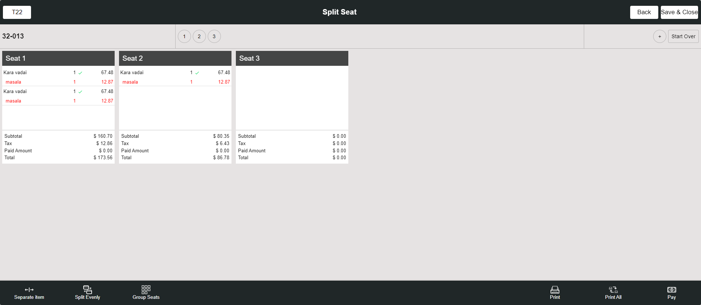FailSplit Seat from bar tab ScreenGiven I'm logged inAnd I closed the order type windowAnd I click AllAnd I click BarTab LayoutAnd I click NewTab from BarTab LayoutAnd I click seat 1 for add menu itemAnd I select Menu For Bartab order type as "North Indian dish" for split CheckAnd I click Finish buttonAnd I click Check Stats tabThen I should see active checkAnd I click BarTab LayoutAnd I click split button on the bartab screenAnd I click the Split By Seat on the Pop-upWhen I click the check from the bartab screenThen I should see the Split ScreenWhen I verify the split seat is avilable in split seat screenAnd I click Add Button to create SeatThen I should see created new seatAnd I click the menu on the split check screenAnd I click new check added on the split check screen page presentWhen I verify the menu is moved to the added check seatAnd I click new check added on the split check screen page presentAnd I click print button in the split seat screenWhen I verify the check is splitted and check number is increasedAnd I click print All button in the split seat screenStep skippedAnd I click the menu on the split check screenStep skippedAnd I click Seperate item buttonStep skippedAnd I select the number of split item "2" for Split checkStep skippedAnd I click the Continue buttonStep skippedThen I should see menu has separated as "2"Step skippedAnd I click the save & close button on the split screenStep skippedThen I Should get back to the Order ScreenStep skippedAnd I verify split seat prize with order screen prizeStep skippedAnd I click Finish buttonStep skippedAnd I click BarTab LayoutStep skippedAnd I click split button on the bartab screenStep skippedAnd I click the Split By Seat on the Pop-upStep skippedWhen I click the check from the bartab screenStep skippedThen I should see the Split ScreenStep skippedWhen I verify the split seat is avilable in split seat screenStep skippedAnd I click Split Evenly ButtonStep skippedThen I should see Seperate Item is DisableStep skippedAnd I get seat 1 prize detailsStep skippedAnd I get seat 1 prize detailsStep skippedAnd I get seat 2 prize detailsStep skippedAnd I click new check added on the split check screen page presentStep skippedAnd I click seat one on the split screenStep skippedAnd I click the Group Seats button in the Split SeatStep skippedWhen I verify all menu is club into single seat after click group seatStep skippedAnd I get menu details from the group seat 2Step skippedAnd I verify prize details after group seats doneStep skippedAnd I click the save & close button on the split screenStep skippedThen I Should get back to the Order ScreenStep skippedAnd I click Seat 2 for add menu itemStep skippedWhen I verify split seat menu with order screen menuStep skippedAnd I verify split seat prize with order screen prizeStep skippedAnd I click Finish buttonStep skippedAnd I click BarTab LayoutStep skippedAnd I click split button on the bartab screenStep skippedAnd I click the Split By Seat on the Pop-upStep skippedWhen I click the check from the bartab screenStep skippedThen I should see the Split ScreenStep skippedWhen I verify the split seat is avilable in split seat screenStep skippedAnd I click new check added on the split check screen page presentStep skippedAnd I click Pay Button in Split ScreenStep skippedThen I should see the Payment windowStep skippedAnd I click cash button from the payment method popupStep skippedAnd I click Exit to return to Order Management ScreenStep skippedWhen I verify seat as paidStep skippedAnd I click Split Evenly ButtonStep skippedThen I should see cannot split as payments popupStep skippedAnd I click Done button on the PopupStep skippedAnd I click the menu on the split seat screenStep skippedAnd I click seat one on the split screenStep skippedThen I should see order cannot moved popup message1Step skippedAnd I click Done button on the PopupStep skippedAnd I click the save & close button on the split screenStep skippedAnd I click Finish buttonStep skippedAnd I click Check Stats tabStep skippedThen I should see active checkStep skippedAnd I hide the keyboardStep skippedAnd I click BarTab LayoutStep skippedAnd I click power buttonStep skippedcom.qa.stepdef.Hooks.quit(io.cucumber.java.Scenario)
PassSplit Check By BarTab ScreenGiven I'm logged inAnd I closed the order type windowAnd I click AllAnd I click BarTab LayoutAnd I click NewTab from BarTab LayoutAnd I click add button to create seat in order screenAnd I click seat 1 for add menu itemAnd I select Menu For Bartab order type as "North Indian dish" for split CheckAnd I click Finish buttonAnd I click Check Stats tabThen I should see active checkAnd I click BarTab LayoutAnd I click split button on the bartab screenAnd I click split check buttonWhen I click the check from the bartab screenThen I should see the Split check screenWhen I verify the Active check with split checkAnd I click Add Button on the split check screenThen I should see new check added on the split check screenAnd I click the menu on the split check screenAnd I click new check added on the split check screenWhen I verify the menu is moved to the added check seatAnd I click new check added on the split check screenAnd I click print button in the split check screenThen I should see please save all the changes to print popupAnd I click yes to open Close Till ScreenWhen I verify the check is splitted and check number is increasedAnd I click print All Button in the split check screenAnd I click the menu on the split check screenAnd I click Seperate item buttonAnd I select the number of split item "2" for Split checkAnd I click the Continue buttonThen I should see menu has separated as "2"And I click the save & close button on the split screenThen I Should get back to the Order ScreenWhen I verify primary check is opened after split check is doneAnd I click Cash button for Complete SaleAnd I click Exact button on the cash pop-upAnd I click Enter Button on the cash pop-upAnd I click BarTab LayoutAnd I click Check Stats tabWhen I verify the splitted check is available in active checks tabAnd I click BarTab LayoutAnd I click NewTab from BarTab LayoutAnd I click add button to create seat in order screenAnd I click seat 1 for add menu itemAnd I select Menu For Bartab order type as "North Indian dish" for split CheckAnd I click Finish buttonAnd I click Check Stats tabThen I should see active checkAnd I click BarTab LayoutAnd I click split button on the bartab screenAnd I click split check buttonWhen I click the check from the bartab screenThen I should see the Split check screenWhen I verify the Active check with split checkThen I should see seat available in the split check1And I click split by seat in the split check screenThen I should see new check added on the split check screenAnd I click the menu on the split check screenAnd I click new check added on the split check screenWhen I verify the menu is moved to the added check seatAnd I click new check added on the split check screenAnd I click print button in the split check screenThen I should see please save all the changes to print popupAnd I click yes to open Close Till ScreenWhen I verify the check is splitted and check number is increasedAnd I click print All Button in the split check screenAnd I click the menu on the split check screenAnd I click Seperate item buttonAnd I select the number of split item "2" for Split checkAnd I click the Continue buttonThen I should see menu has separated as "2"And I click the save & close button on the split screenThen I Should get back to the Order ScreenWhen I verify primary check is opened after split check is doneAnd I click Cash button for Complete SaleAnd I click Exact button on the cash pop-upAnd I click Enter Button on the cash pop-upAnd I click Check Stats tabWhen I verify the splitted check is available in active checks tabAnd I click power button in the All Orders screenPassSplit Check From Order Screen (Table Layout)Given I'm logged inAnd I closed the order type windowAnd I click AllAnd I click Table Layout tabAnd I select Menu for DineIn as "North Indian dish" for split check order screenAnd I click the split check from Order screenThen I should see menu items has to be sent to the kitchenAnd I click Yes button on send to kitchen popupThen I should see the Split check screenWhen I verify the Active check with split checkAnd I click Add Button on the split check screenThen I should see new check added on the split check screenAnd I click the menu on the split check screenAnd I click new check added on the split check screenWhen I verify the menu is moved to the added check seatAnd I click new check added on the split check screenAnd I click print button in the split check screenThen I should see please save all the changes to print popupAnd I click yes to open Close Till ScreenWhen I verify the check is splitted and check number is increasedAnd I click print All Button in the split check screenAnd I click the menu on the split check screenAnd I click Seperate item buttonAnd I select the number of split item "2" for Split checkAnd I click the Continue buttonThen I should see menu has separated as "2"And I click the save & close button on the split screenThen I Should get back to the Order ScreenWhen I verify primary check is opened after split check is doneAnd I click Cash button for Complete SaleAnd I click Exact button on the cash pop-upAnd I click Enter Button on the cash pop-upAnd I click Table Layout tabAnd I click Check Stats tabWhen I verify the splitted check is available in active checks tabAnd I click Table Layout tabAnd I select Menu for DineIn as "North Indian dish" for split check order screenAnd I click the split check from Order screenThen I should see menu items has to be sent to the kitchenAnd I click Yes button on send to kitchen popupThen I should see the Split check screenWhen I verify the Active check with split checkThen I should see seat available in the split checkAnd I click split by seat in the split check screenThen I should see new check added on the split check screenAnd I click the menu on the split check screenAnd I click new check added on the split check screenWhen I verify the menu is moved to the added check seatAnd I click new check added on the split check screenAnd I click print button in the split check screenThen I should see please save all the changes to print popupAnd I click yes to open Close Till ScreenWhen I verify the check is splitted and check number is increasedAnd I click print All Button in the split check screenAnd I click the menu on the split check screenAnd I click Seperate item buttonAnd I select the number of split item "2" for Split checkAnd I click the Continue buttonThen I should see menu has separated as "2"And I click the save & close button on the split screenThen I Should get back to the Order ScreenWhen I verify primary check is opened after split check is doneAnd I click Cash button for Complete SaleAnd I click Exact button on the cash pop-upAnd I click Enter Button on the cash pop-upAnd I click Table Layout tabAnd I click Check Stats tabWhen I verify the splitted check is available in active checks tabAnd I click power button in the All Orders screenPassSplit Check From Order Screen (Bartab Layout)Given I'm logged inAnd I closed the order type windowAnd I click AllAnd I click BarTab LayoutAnd I click NewTab from BarTab LayoutAnd I click add button to create seat in order screenAnd I click seat 1 for add menu itemAnd I select Menu For Bartab order type as "North Indian dish" for split CheckAnd I click the split check from Order screenThen I should see menu items has to be sent to the kitchenAnd I click Yes button on send to kitchen popupThen I should see the Split check screenWhen I verify the Active check with split checkAnd I click Add Button on the split check screenThen I should see new check added on the split check screenAnd I click the menu on the split check screenAnd I click new check added on the split check screenWhen I verify the menu is moved to the added check seatAnd I click new check added on the split check screenAnd I click print button in the split check screenThen I should see please save all the changes to print popupAnd I click yes to open Close Till ScreenWhen I verify the check is splitted and check number is increasedAnd I click print All Button in the split check screenAnd I click the menu on the split check screenAnd I click Seperate item buttonAnd I select the number of split item "2" for Split checkAnd I click the Continue buttonThen I should see menu has separated as "2"And I click the save & close button on the split screenThen I Should get back to the Order ScreenWhen I verify primary check is opened after split check is doneAnd I click Cash button for Complete SaleAnd I click Exact button on the cash pop-upAnd I click Enter Button on the cash pop-upAnd I click Table Layout tabAnd I click Check Stats tabWhen I verify the splitted check is available in active checks tabAnd I click BarTab LayoutAnd I click NewTab from BarTab LayoutAnd I click add button to create seat in order screenAnd I click seat 1 for add menu itemAnd I select Menu For Bartab order type as "North Indian dish" for split CheckAnd I click the split check from Order screenThen I should see menu items has to be sent to the kitchenAnd I click Yes button on send to kitchen popupThen I should see the Split check screenWhen I verify the Active check with split checkThen I should see seat available in the split check1And I click split by seat in the split check screenThen I should see new check added on the split check screenAnd I click the menu on the split check screenAnd I click new check added on the split check screenWhen I verify the menu is moved to the added check seatAnd I click new check added on the split check screenAnd I click print button in the split check screenThen I should see please save all the changes to print popupAnd I click yes to open Close Till ScreenWhen I verify the check is splitted and check number is increasedAnd I click print All Button in the split check screenAnd I click the menu on the split check screenAnd I click Seperate item buttonAnd I select the number of split item "2" for Split checkAnd I click the Continue buttonThen I should see menu has separated as "2"And I click the save & close button on the split screenThen I Should get back to the Order ScreenWhen I verify primary check is opened after split check is doneAnd I click Cash button for Complete SaleAnd I click Exact button on the cash pop-upAnd I click Enter Button on the cash pop-upAnd I click Table Layout tabAnd I click Check Stats tabWhen I verify the splitted check is available in active checks tabAnd I click power button in the All Orders screenFailSplit Seat from Table layout/bar tab ScreenGiven I'm logged inAnd I closed the order type windowAnd I click AllAnd I click Table Layout tabAnd I select Menu For Dine order type as "North Indian dish" for split seatAnd I click Finish buttonAnd I click Check Stats tabThen I should see active checkAnd I click Table Layout tabAnd I click the Split Button from the Table Layout ScreenAnd I click the Split By Seat on the Pop-upWhen I click the check from the table layoutThen I should see the Split ScreenWhen I verify the split seat is avilable in split seat screenAnd I click Add Button to create SeatThen I should see created new seatAnd I click the menu on the split check screenAnd I click new check added on the split check screen pageWhen I verify the menu is moved to the added check seatAnd I click new check added on the split check screen pageAnd I click print button in the split seat screenWhen I verify the check is splitted and check number is increasedAnd I click print All button in the split seat screenStep skippedAnd I click the menu on the split check screenStep skippedAnd I click Seperate item buttonStep skippedAnd I select the number of split item "2" for Split checkStep skippedAnd I click the Continue buttonStep skippedThen I should see menu has separated as "2"Step skippedAnd I click the save & close button on the split screenStep skippedThen I Should get back to the Order ScreenStep skippedAnd I click Finish buttonStep skippedAnd I click Table Layout tabStep skippedAnd I click the Split Button from the Table Layout ScreenStep skippedAnd I click the Split By Seat on the Pop-upStep skippedWhen I click the check from the table layoutStep skippedThen I should see the Split ScreenStep skippedWhen I verify the split seat is avilable in split seat screenStep skippedAnd I click Split Evenly ButtonStep skippedThen I should see Seperate Item is DisableStep skippedAnd I get seat 1 prize detailsStep skippedAnd I get seat 1 prize detailsStep skippedAnd I get seat 2 prize detailsStep skippedAnd I click new seat added on the split seat screenStep skippedAnd I click seat one on the split screenStep skippedAnd I click the Group Seats button in the Split SeatStep skippedWhen I verify all menu is club into single seat after click group seatStep skippedAnd I get menu details from the group seat 2Step skippedAnd I verify prize details after group seats doneStep skippedAnd I click the save & close button on the split screenStep skippedThen I Should get back to the Order ScreenStep skippedAnd I click Seat 2 for add menu itemStep skippedWhen I verify split seat menu with order screen menuStep skippedAnd I verify split seat prize with order screen prizeStep skippedAnd I click Finish buttonStep skippedAnd I click Table Layout tabStep skippedAnd I click the Split Button from the Table Layout ScreenStep skippedAnd I click the Split By Seat on the Pop-upStep skippedWhen I click the check from the table layoutStep skippedThen I should see the Split ScreenStep skippedWhen I verify the split seat is avilable in split seat screenStep skippedAnd I click new seat added on the split seat screenStep skippedAnd I click Pay Button in Split ScreenStep skippedThen I should see the Payment windowStep skippedAnd I click cash button from the payment method popupStep skippedAnd I click Exit to return to Order Management ScreenStep skippedWhen I verify seat as paidStep skippedAnd I click Split Evenly ButtonStep skippedThen I should see cannot split as payments popupStep skippedAnd I click Done button on the PopupStep skippedAnd I click the menu on the split seat screenStep skippedAnd I click seat one on the split screenStep skippedThen I should see order cannot moved popup message1Step skippedAnd I click Done button on the PopupStep skippedAnd I click the save & close button on the split screenStep skippedAnd I click Finish buttonStep skippedAnd I click Check Stats tabStep skippedThen I should see active checkStep skippedAnd I click Table Layout tabStep skippedAnd I click power button in the All Orders screenStep skippedcom.qa.stepdef.Hooks.quit(io.cucumber.java.Scenario)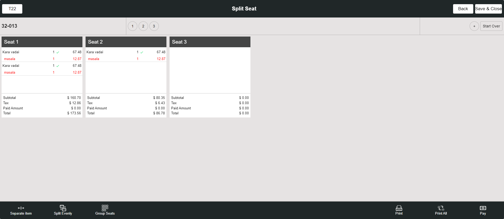FailSplit Seat from bar tab ScreenGiven I'm logged inAnd I closed the order type windowAnd I click AllAnd I click BarTab LayoutAnd I click NewTab from BarTab LayoutAnd I click seat 1 for add menu itemAnd I select Menu For Bartab order type as "North Indian dish" for split CheckAnd I click Finish buttonAnd I click Check Stats tabThen I should see active checkAnd I click BarTab LayoutAnd I click split button on the bartab screenAnd I click the Split By Seat on the Pop-upWhen I click the check from the bartab screenThen I should see the Split ScreenWhen I verify the split seat is avilable in split seat screenAnd I click Add Button to create SeatThen I should see created new seatAnd I click the menu on the split check screenAnd I click new check added on the split check screen page presentWhen I verify the menu is moved to the added check seatAnd I click new check added on the split check screen page presentAnd I click print button in the split seat screenWhen I verify the check is splitted and check number is increasedAnd I click print All button in the split seat screenStep skippedAnd I click the menu on the split check screenStep skippedAnd I click Seperate item buttonStep skippedAnd I select the number of split item "2" for Split checkStep skippedAnd I click the Continue buttonStep skippedThen I should see menu has separated as "2"Step skippedAnd I click the save & close button on the split screenStep skippedThen I Should get back to the Order ScreenStep skippedAnd I verify split seat prize with order screen prizeStep skippedAnd I click Finish buttonStep skippedAnd I click BarTab LayoutStep skippedAnd I click split button on the bartab screenStep skippedAnd I click the Split By Seat on the Pop-upStep skippedWhen I click the check from the bartab screenStep skippedThen I should see the Split ScreenStep skippedWhen I verify the split seat is avilable in split seat screenStep skippedAnd I click Split Evenly ButtonStep skippedThen I should see Seperate Item is DisableStep skippedAnd I get seat 1 prize detailsStep skippedAnd I get seat 1 prize detailsStep skippedAnd I get seat 2 prize detailsStep skippedAnd I click new check added on the split check screen page presentStep skippedAnd I click seat one on the split screenStep skippedAnd I click the Group Seats button in the Split SeatStep skippedWhen I verify all menu is club into single seat after click group seatStep skippedAnd I get menu details from the group seat 2Step skippedAnd I verify prize details after group seats doneStep skippedAnd I click the save & close button on the split screenStep skippedThen I Should get back to the Order ScreenStep skippedAnd I click Seat 2 for add menu itemStep skippedWhen I verify split seat menu with order screen menuStep skippedAnd I verify split seat prize with order screen prizeStep skippedAnd I click Finish buttonStep skippedAnd I click BarTab LayoutStep skippedAnd I click split button on the bartab screenStep skippedAnd I click the Split By Seat on the Pop-upStep skippedWhen I click the check from the bartab screenStep skippedThen I should see the Split ScreenStep skippedWhen I verify the split seat is avilable in split seat screenStep skippedAnd I click new check added on the split check screen page presentStep skippedAnd I click Pay Button in Split ScreenStep skippedThen I should see the Payment windowStep skippedAnd I click cash button from the payment method popupStep skippedAnd I click Exit to return to Order Management ScreenStep skippedWhen I verify seat as paidStep skippedAnd I click Split Evenly ButtonStep skippedThen I should see cannot split as payments popupStep skippedAnd I click Done button on the PopupStep skippedAnd I click the menu on the split seat screenStep skippedAnd I click seat one on the split screenStep skippedThen I should see order cannot moved popup message1Step skippedAnd I click Done button on the PopupStep skippedAnd I click the save & close button on the split screenStep skippedAnd I click Finish buttonStep skippedAnd I click Check Stats tabStep skippedThen I should see active checkStep skippedAnd I hide the keyboardStep skippedAnd I click BarTab LayoutStep skippedAnd I click power buttonStep skippedcom.qa.stepdef.Hooks.quit(io.cucumber.java.Scenario) FailSplit Seat from Order ScreenGiven I'm logged inAnd I closed the order type windowAnd I click AllAnd I click Table Layout tabAnd I select Menu for DineIn as "North Indian dish" for split seat order screenAnd I click the split seat from Order screenThen I should see the Split ScreenWhen I verify the split seat is avilable in split seat screenAnd I click Add Button to create SeatThen I should see created new seatAnd I click the menu on the split check screenAnd I click new check added on the split check screenWhen I verify the menu is moved to the added check seatStep skippedAnd I click new check added on the split check screenStep skippedAnd I click print button in the split seat screenStep skippedThen I should see item need to send to kitchen popupStep skippedAnd I click yes to open Close Till ScreenStep skippedWhen I verify the check is splitted and check number is increasedStep skippedAnd I click print All button in the split seat screenStep skippedThen I should see item need to send to kitchen popupStep skippedAnd I click yes to open Close Till ScreenStep skippedAnd I click the menu on the split check screenStep skippedAnd I click Seperate item buttonStep skippedAnd I select the number of split item "2" for Split checkStep skippedAnd I click the Continue buttonStep skippedThen I should see menu has separated as "2"Step skippedAnd I click the save & close button on the split screenStep skippedThen I Should get back to the Order ScreenStep skippedAnd I click the split seat from Order screenStep skippedThen I should see the Split ScreenStep skippedWhen I verify the split seat is avilable in split seat screenStep skippedAnd I click Split Evenly ButtonStep skippedThen I should see Seperate Item is DisableStep skippedAnd I get seat 1 prize detailsStep skippedAnd I get seat 1 prize detailsStep skippedAnd I get seat 2 prize detailsStep skippedAnd I click new check added on the split check screenStep skippedAnd I click seat one on the split screenStep skippedAnd I click the Group Seats button in the Split SeatStep skippedWhen I verify all menu is club into single seat after click group seatStep skippedAnd I get menu details from the group seat 2Step skippedAnd I verify prize details after group seats doneStep skippedAnd I click the save & close button on the split screenStep skippedThen I Should get back to the Order ScreenStep skippedAnd I click Seat 2 for add menu itemStep skippedWhen I verify split seat menu with order screen menuStep skippedAnd I verify split seat prize with order screen prizeStep skippedAnd I click the split seat from Order screenStep skippedThen I should see the Split ScreenStep skippedWhen I verify the split seat is avilable in split seat screenStep skippedAnd I click new check added on the split check screenStep skippedAnd I click Pay Button in Split ScreenStep skippedThen I should see the Payment windowStep skippedAnd I click cash button from the payment method popupStep skippedAnd I click Exit to return to Order Management ScreenStep skippedWhen I verify seat as paidStep skippedAnd I click Split Evenly ButtonStep skippedThen I should see cannot split as payments popupStep skippedAnd I click Done button on the PopupStep skippedAnd I click the menu on the split seat screenStep skippedAnd I click seat one on the split screenStep skippedThen I should see order cannot moved popup message1Step skippedAnd I click Done button on the PopupStep skippedAnd I click the save & close button on the split screenStep skippedAnd I click Finish buttonStep skippedAnd I click Check Stats tabStep skippedThen I should see active checkStep skippedAnd I click Table Layout tabStep skippedAnd I click power button in the All Orders screenStep skippedcom.qa.stepdef.Hooks.quit(io.cucumber.java.Scenario)
FailSplit Seat from Order ScreenGiven I'm logged inAnd I closed the order type windowAnd I click AllAnd I click Table Layout tabAnd I select Menu for DineIn as "North Indian dish" for split seat order screenAnd I click the split seat from Order screenThen I should see the Split ScreenWhen I verify the split seat is avilable in split seat screenAnd I click Add Button to create SeatThen I should see created new seatAnd I click the menu on the split check screenAnd I click new check added on the split check screenWhen I verify the menu is moved to the added check seatStep skippedAnd I click new check added on the split check screenStep skippedAnd I click print button in the split seat screenStep skippedThen I should see item need to send to kitchen popupStep skippedAnd I click yes to open Close Till ScreenStep skippedWhen I verify the check is splitted and check number is increasedStep skippedAnd I click print All button in the split seat screenStep skippedThen I should see item need to send to kitchen popupStep skippedAnd I click yes to open Close Till ScreenStep skippedAnd I click the menu on the split check screenStep skippedAnd I click Seperate item buttonStep skippedAnd I select the number of split item "2" for Split checkStep skippedAnd I click the Continue buttonStep skippedThen I should see menu has separated as "2"Step skippedAnd I click the save & close button on the split screenStep skippedThen I Should get back to the Order ScreenStep skippedAnd I click the split seat from Order screenStep skippedThen I should see the Split ScreenStep skippedWhen I verify the split seat is avilable in split seat screenStep skippedAnd I click Split Evenly ButtonStep skippedThen I should see Seperate Item is DisableStep skippedAnd I get seat 1 prize detailsStep skippedAnd I get seat 1 prize detailsStep skippedAnd I get seat 2 prize detailsStep skippedAnd I click new check added on the split check screenStep skippedAnd I click seat one on the split screenStep skippedAnd I click the Group Seats button in the Split SeatStep skippedWhen I verify all menu is club into single seat after click group seatStep skippedAnd I get menu details from the group seat 2Step skippedAnd I verify prize details after group seats doneStep skippedAnd I click the save & close button on the split screenStep skippedThen I Should get back to the Order ScreenStep skippedAnd I click Seat 2 for add menu itemStep skippedWhen I verify split seat menu with order screen menuStep skippedAnd I verify split seat prize with order screen prizeStep skippedAnd I click the split seat from Order screenStep skippedThen I should see the Split ScreenStep skippedWhen I verify the split seat is avilable in split seat screenStep skippedAnd I click new check added on the split check screenStep skippedAnd I click Pay Button in Split ScreenStep skippedThen I should see the Payment windowStep skippedAnd I click cash button from the payment method popupStep skippedAnd I click Exit to return to Order Management ScreenStep skippedWhen I verify seat as paidStep skippedAnd I click Split Evenly ButtonStep skippedThen I should see cannot split as payments popupStep skippedAnd I click Done button on the PopupStep skippedAnd I click the menu on the split seat screenStep skippedAnd I click seat one on the split screenStep skippedThen I should see order cannot moved popup message1Step skippedAnd I click Done button on the PopupStep skippedAnd I click the save & close button on the split screenStep skippedAnd I click Finish buttonStep skippedAnd I click Check Stats tabStep skippedThen I should see active checkStep skippedAnd I click Table Layout tabStep skippedAnd I click power button in the All Orders screenStep skippedcom.qa.stepdef.Hooks.quit(io.cucumber.java.Scenario) FailReopen the closed checks and validate the tax, total, SubtotalGiven I'm logged inAnd I closed the order type windowAnd I click AllAnd I click Table Layout tabAnd I click new check button on the Table layout screenAnd I select table as "T19"And I select the number of seats as "1"Step skippedAnd I tap Continue to finish selecting the number of seatsStep skippedAnd I get check numberStep skippedAnd I select FOOD as categoryStep skippedAnd I select menu item as "mongo test"Step skippedAnd I get value the menu values from order screenStep skippedAnd I click Cash button for Complete SaleStep skippedAnd I click Exact button on the cash pop-upStep skippedAnd I click Enter Button on the cash pop-upStep skippedAnd I click Table Layout tabStep skippedAnd I click Check Stats tabStep skippedAnd I click Closed tab on the Check statsStep skippedAnd I click the Closed check on check statsStep skippedAnd I click reopen check button on the check stats screenStep skippedThen I Should get back to the Order ScreenStep skippedWhen I validate the menu values in the order screenStep skippedAnd I click Payment button in the Order Management ScreenStep skippedAnd I click Submit button in the Payment popupStep skippedAnd I click Table Layout tabStep skippedAnd I click power button in the All Orders screenStep skippedcom.qa.stepdef.Hooks.quit(io.cucumber.java.Scenario)
FailReopen the closed checks and validate the tax, total, SubtotalGiven I'm logged inAnd I closed the order type windowAnd I click AllAnd I click Table Layout tabAnd I click new check button on the Table layout screenAnd I select table as "T19"And I select the number of seats as "1"Step skippedAnd I tap Continue to finish selecting the number of seatsStep skippedAnd I get check numberStep skippedAnd I select FOOD as categoryStep skippedAnd I select menu item as "mongo test"Step skippedAnd I get value the menu values from order screenStep skippedAnd I click Cash button for Complete SaleStep skippedAnd I click Exact button on the cash pop-upStep skippedAnd I click Enter Button on the cash pop-upStep skippedAnd I click Table Layout tabStep skippedAnd I click Check Stats tabStep skippedAnd I click Closed tab on the Check statsStep skippedAnd I click the Closed check on check statsStep skippedAnd I click reopen check button on the check stats screenStep skippedThen I Should get back to the Order ScreenStep skippedWhen I validate the menu values in the order screenStep skippedAnd I click Payment button in the Order Management ScreenStep skippedAnd I click Submit button in the Payment popupStep skippedAnd I click Table Layout tabStep skippedAnd I click power button in the All Orders screenStep skippedcom.qa.stepdef.Hooks.quit(io.cucumber.java.Scenario) FailWhen applying 2 different fixed gratuity for 3 seat it taking only one fixed gratuityGiven I'm logged inAnd I closed the order type windowAnd I click AllAnd I click Table Layout tabAnd I select the random table from the table layoutAnd I select category as "FOOD"And I select menu item as "Chicken Schnitzel"And I should verify subtotal value as "$ 12.00"And I should verify tax value as "$ 0.00"And I should verify total value as "$ 12.00"And I click add button to create seat in order screenStep skippedAnd I select category as "FOOD"Step skippedAnd I select menu item as "Chicken Schnitzel"Step skippedAnd I should verify subtotal value as "$ 12.00"Step skippedAnd I should verify tax value as "$ 1.20"Step skippedAnd I should verify total value as "$ 13.20"Step skippedAnd I click add button to create seat in order screenStep skippedThen I should see Add Gratuity screenStep skippedAnd I select auto gratuity as "Fixxy1"Step skippedWhen I click table number on the order screenStep skippedThen I should verify the gratuity value after add auto gratuity value as "12"Step skippedAnd I select seat as "3" on the order screenStep skippedAnd I select category as "FOOD"Step skippedAnd I select menu item as "Chicken Schnitzel"Step skippedAnd I should verify subtotal value as "$ 12.00"Step skippedAnd I should verify tax value as "$ 1.20"Step skippedAnd I should verify gratuity value as "$ 1.44"Step skippedAnd I should verify cash option value as "$ 14.64" with GratuityStep skippedAnd I click add button to create seat in order screenStep skippedAnd I select category as "FOOD"Step skippedAnd I select menu item as "Chicken Schnitzel"Step skippedThen I should verify the gratuity value after add auto gratuity value as "12"Step skippedAnd I should verify subtotal value as "$ 12.00"Step skippedAnd I should verify tax value as "$ 1.20"Step skippedAnd I should verify gratuity value as "$ 1.44"Step skippedAnd I should verify cash option value as "$ 14.64" with GratuityStep skippedAnd I click Void button on order management screenStep skippedThen I should see All orders are voidedStep skippedAnd I click Done button on the PopupStep skippedAnd I click AllStep skippedAnd I click power button in the All Orders screenStep skippedcom.qa.stepdef.Hooks.quit(io.cucumber.java.Scenario)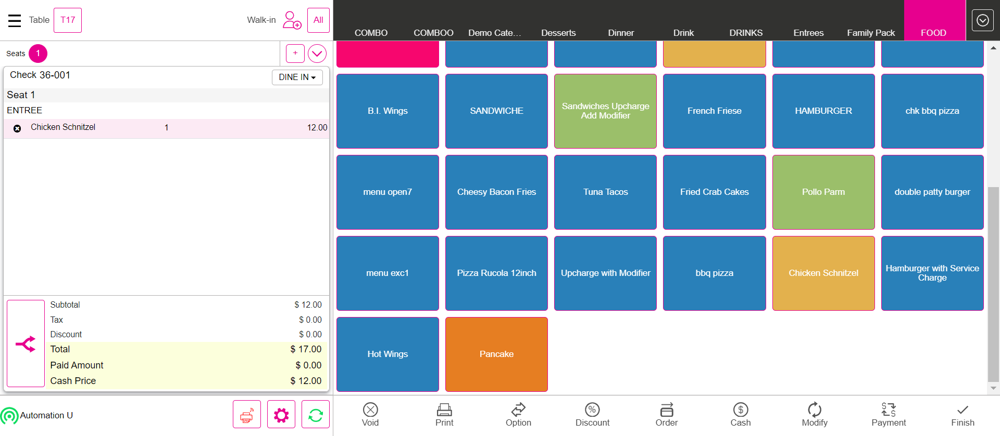FailLIN-22163 - Gratuity value is mismatching, when applying auto gratuityGiven I'm logged inAnd I closed the order type windowAnd I click AllAnd I click Table Layout tabAnd I click new check button on the Table layout screenAnd I select table as "T18"And I select the number of seats as "1"Step skippedAnd I click the Continue buttonStep skippedAnd I get check numberStep skippedAnd I select category as "FOOD"Step skippedAnd I select menu item as "Onion Rings"Step skippedWhen I verify auto gratuity is applied or notStep skippedAnd I add a new seatStep skippedAnd I add a new seatStep skippedThen I should see Add Gratuity screenStep skippedAnd I select auto gratuity as "Auto vary Gratuity"Step skippedThen I should see enter Percentage popupStep skippedAnd I pass the value and click Apply buttonStep skippedAnd I select Menu of Basic validation for QSR as "Salad"Step skippedWhen I verify auto gratuity is applied or notStep skippedAnd I click Payment button in the Order Management ScreenStep skippedAnd I click cash button from the payment method popupStep skippedAnd I click Submit button on the Payment WindowStep skippedAnd I click Table Layout tabStep skippedAnd I click power button in the All Orders screenStep skippedcom.qa.stepdef.Hooks.quit(io.cucumber.java.Scenario)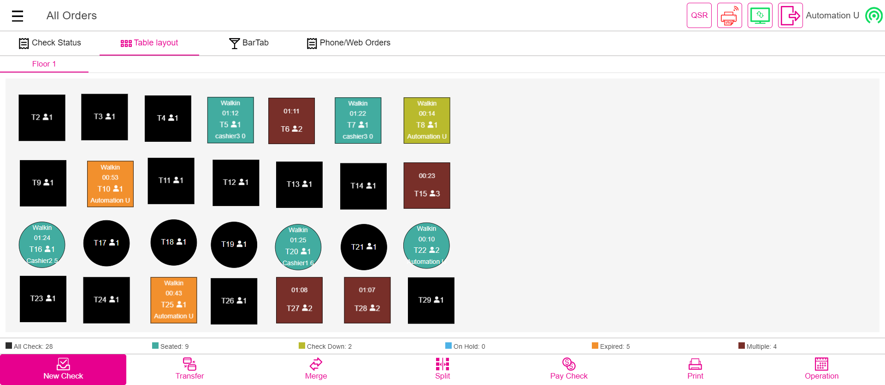FailLIN - 22195 - Application crash : When we delete the repeat order itemGiven I'm logged inAnd I closed the order type windowAnd I click Add Customer ButtonThen I should see the add customer screen in the windowAnd I Click on the Byname OptionAnd Enter some name and click on Add Customer buttonThen I should see the customer profile windowAnd I select searchAnd I enter an existing customer's name "Auto test"And I select the customerWhen I click the Save buttonAnd I get check numberAnd I select category as "FOOD"And I select menu item as "Onion Rings"And I select menu item as "Pancake"And I get the menu from the order screenAnd I should verify subtotal value as "$ 10.00"And I should verify tax value as "$ 1.11"And I should verify total2 value as "$ 11.55"And I should verify paid amount0 as "$ 0.00"Step skippedAnd I should verify cash price value as "$ 11.00"Step skippedAnd I click Cash button for Complete SaleStep skippedAnd I click Exact button on the cash pop-upStep skippedAnd I click Enter Button on the cash pop-upStep skippedAnd I closed the order type windowStep skippedAnd I click Add Customer ButtonStep skippedThen I should see the add customer screen in the windowStep skippedAnd I Click on the Byname OptionStep skippedAnd Enter some name and click on Add Customer buttonStep skippedThen I should see the customer profile windowStep skippedAnd I select searchStep skippedAnd I enter an existing customer's name "Auto test"Step skippedAnd I select the customerStep skippedAnd I wait sometimesStep skippedAnd I verify the customer previous order menu with order menuStep skippedAnd I select the previous order on customer profile screenStep skippedAnd I click repeat Order button on the customer profile windowStep skippedAnd I wait sometimesStep skippedThen I Should get back to the Order ScreenStep skippedAnd I delete the menu item in the order screenStep skippedAnd I should verify subtotal value as "$ 9.00"Step skippedAnd I should verify tax value as "$ 0.90"Step skippedAnd I should verify total2 value as "$ 10.40"Step skippedAnd I should verify paid amount as "$ 0.00"Step skippedAnd I click Payment button in the Order Management ScreenStep skippedAnd I click cash button from the payment method popupStep skippedAnd I click Submit button on the Payment WindowStep skippedAnd I closed the order type windowStep skippedAnd I click log off button in order screenStep skippedcom.qa.stepdef.Hooks.quit(io.cucumber.java.Scenario)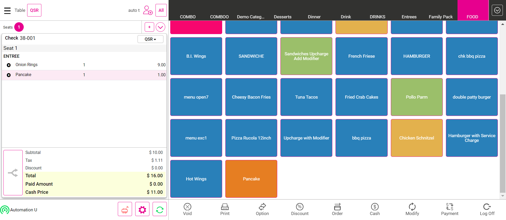FailLIN-22594 - Gratuity amounts disappears from the check in the following scenarioGiven I'm logged inAnd I closed the order type windowAnd I click AllAnd I click Table Layout tabAnd I click new check button on the Table layout screenAnd I select table as "T19"And I select the number of seats as "1"Step skippedAnd I click the Continue buttonStep skippedAnd I get check numberStep skippedAnd I select category as "TaXx"Step skippedAnd I select menu item as "service charge menu"Step skippedAnd I add a new seatStep skippedAnd I add a new seatStep skippedThen I should see Add Gratuity screenStep skippedAnd I select auto gratuity as "Auto vary Gratuity"Step skippedThen I should see enter Percentage popupStep skippedAnd I pass the value and click Apply buttonStep skippedThen I should verify subtotal value as "$ 2.95"Step skippedThen I should verify tax value as "$ 0.34"Step skippedThen I should verify gratuity value as "$ 0.24"Step skippedThen I should verify service charge value1 as "$ 0.23"Step skippedThen I should verify total5 value as "$ 3.95"Step skippedThen I should verify paid amount1 as "$ 0.00"Step skippedAnd I should verify cash price value2 as "$ 3.76"Step skippedAnd I click Payment button in the Order Management ScreenStep skippedAnd I click cash button from the payment method popupStep skippedAnd I click Submit button on the Payment WindowStep skippedAnd I click Table Layout tabStep skippedAnd I click Check Stats tabStep skippedAnd I click Closed tab on the Check statsStep skippedAnd I click the Closed check on check statsStep skippedAnd I click reopen check button on the check stats screenStep skippedThen I Should get back to the Order ScreenStep skippedWhen I verify auto gratuity is appliedStep skippedThen I should verify subtotal value as "$ 2.95"Step skippedThen I should verify tax value as "$ 0.34"Step skippedThen I should verify gratuity value as "$ 0.24"Step skippedAnd I should verify discount value1 as "$ 0.00"Step skippedThen I should verify service charge value2 as "$ 0.23"Step skippedThen I should verify total6 value as "$ 3.95"Step skippedThen I should verify paid amount1 as "$ 3.76"Step skippedAnd I should verify cash price value2 as "$ 3.76"Step skippedAnd I click Payment button in the Order Management ScreenStep skippedAnd I click Submit button on the Payment WindowStep skippedAnd I click Table Layout tabStep skippedAnd I click power button in the All Orders screenStep skippedcom.qa.stepdef.Hooks.quit(io.cucumber.java.Scenario)PassLIN-22815 - Allow to save more that 140 characters in customer notes after alert message in customer profile.Given I'm logged inAnd I closed the order type windowAnd I click Add Customer ButtonThen I should see the add customer screen in the windowAnd I Click on the Byname OptionAnd Enter some name and click on Add Customer buttonThen I should see the customer profile windowAnd I select searchAnd I enter an existing customer's name "pink flower"And I select the customerAnd I wait sometimesAnd I enter the above 150 words on the customer notesAnd I click the Save buttonAnd I Should get back to the Order ScreenAnd I click the customer name on the order screenThen I should see the customer profile windowWhen I verify the customer details in the customer profileAnd I click the Save buttonAnd I Should get back to the Order ScreenAnd I click Add Customer ButtonAnd I click remove buttonAnd I click on the cross buttin in the customer profile screenAnd I click log off button in order screenFailApplication gets crashed when scroll the category/service type/suggestive searchGiven I'm logged inAnd I closed the order type windowAnd I click AllAnd I click BarTab LayoutAnd I click New Tab in the Bar Tab ScreenAnd I click Add Customer ButtonThen I should see the add customer screen in the windowAnd I Click on the Byname OptionAnd Enter some name and click on Add Customer buttonThen I should see the customer profile windowAnd I select searchAnd I enter an existing customer's name "loyalty test1"And I select the customerWhen I click the Save buttonAnd I wait sometimesStep skippedAnd I click Finish buttonStep skippedAnd I click QSR tabStep skippedAnd I closed the order type windowStep skippedAnd I select uzumaki categoryStep skippedAnd I click log off button in order screenStep skippedcom.qa.stepdef.Hooks.quit(io.cucumber.java.Scenario)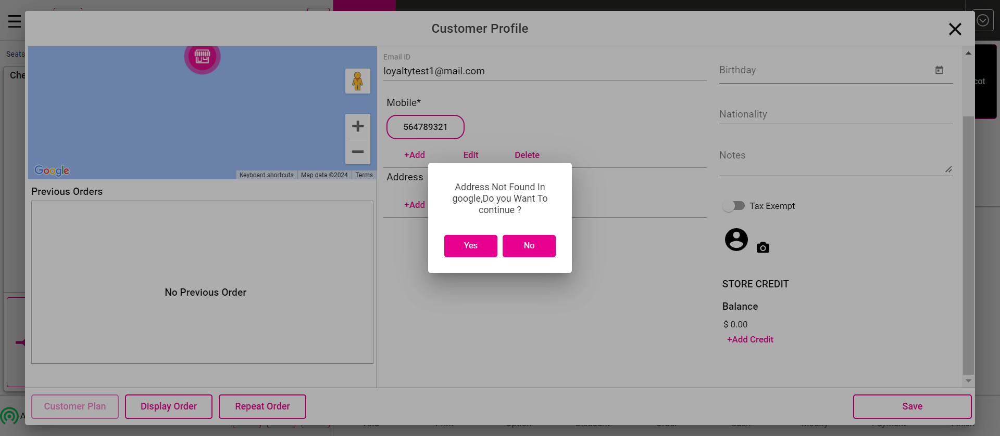
FailWhen applying 2 different fixed gratuity for 3 seat it taking only one fixed gratuityGiven I'm logged inAnd I closed the order type windowAnd I click AllAnd I click Table Layout tabAnd I select the random table from the table layoutAnd I select category as "FOOD"And I select menu item as "Chicken Schnitzel"And I should verify subtotal value as "$ 12.00"And I should verify tax value as "$ 0.00"And I should verify total value as "$ 12.00"And I click add button to create seat in order screenStep skippedAnd I select category as "FOOD"Step skippedAnd I select menu item as "Chicken Schnitzel"Step skippedAnd I should verify subtotal value as "$ 12.00"Step skippedAnd I should verify tax value as "$ 1.20"Step skippedAnd I should verify total value as "$ 13.20"Step skippedAnd I click add button to create seat in order screenStep skippedThen I should see Add Gratuity screenStep skippedAnd I select auto gratuity as "Fixxy1"Step skippedWhen I click table number on the order screenStep skippedThen I should verify the gratuity value after add auto gratuity value as "12"Step skippedAnd I select seat as "3" on the order screenStep skippedAnd I select category as "FOOD"Step skippedAnd I select menu item as "Chicken Schnitzel"Step skippedAnd I should verify subtotal value as "$ 12.00"Step skippedAnd I should verify tax value as "$ 1.20"Step skippedAnd I should verify gratuity value as "$ 1.44"Step skippedAnd I should verify cash option value as "$ 14.64" with GratuityStep skippedAnd I click add button to create seat in order screenStep skippedAnd I select category as "FOOD"Step skippedAnd I select menu item as "Chicken Schnitzel"Step skippedThen I should verify the gratuity value after add auto gratuity value as "12"Step skippedAnd I should verify subtotal value as "$ 12.00"Step skippedAnd I should verify tax value as "$ 1.20"Step skippedAnd I should verify gratuity value as "$ 1.44"Step skippedAnd I should verify cash option value as "$ 14.64" with GratuityStep skippedAnd I click Void button on order management screenStep skippedThen I should see All orders are voidedStep skippedAnd I click Done button on the PopupStep skippedAnd I click AllStep skippedAnd I click power button in the All Orders screenStep skippedcom.qa.stepdef.Hooks.quit(io.cucumber.java.Scenario)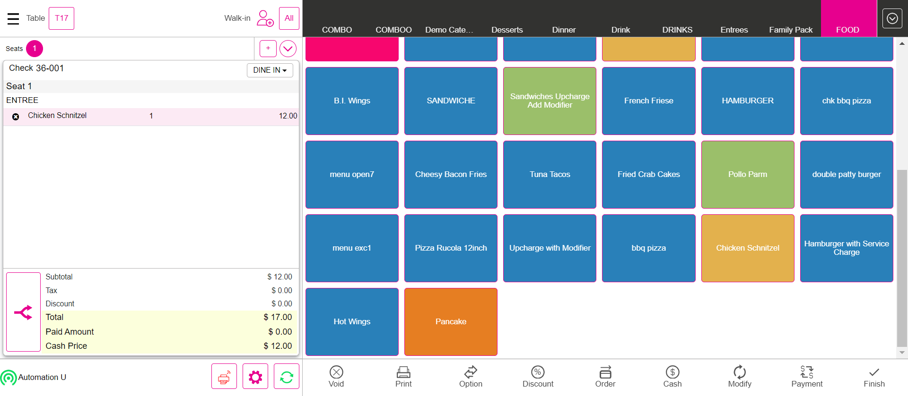FailLIN-22163 - Gratuity value is mismatching, when applying auto gratuityGiven I'm logged inAnd I closed the order type windowAnd I click AllAnd I click Table Layout tabAnd I click new check button on the Table layout screenAnd I select table as "T18"And I select the number of seats as "1"Step skippedAnd I click the Continue buttonStep skippedAnd I get check numberStep skippedAnd I select category as "FOOD"Step skippedAnd I select menu item as "Onion Rings"Step skippedWhen I verify auto gratuity is applied or notStep skippedAnd I add a new seatStep skippedAnd I add a new seatStep skippedThen I should see Add Gratuity screenStep skippedAnd I select auto gratuity as "Auto vary Gratuity"Step skippedThen I should see enter Percentage popupStep skippedAnd I pass the value and click Apply buttonStep skippedAnd I select Menu of Basic validation for QSR as "Salad"Step skippedWhen I verify auto gratuity is applied or notStep skippedAnd I click Payment button in the Order Management ScreenStep skippedAnd I click cash button from the payment method popupStep skippedAnd I click Submit button on the Payment WindowStep skippedAnd I click Table Layout tabStep skippedAnd I click power button in the All Orders screenStep skippedcom.qa.stepdef.Hooks.quit(io.cucumber.java.Scenario)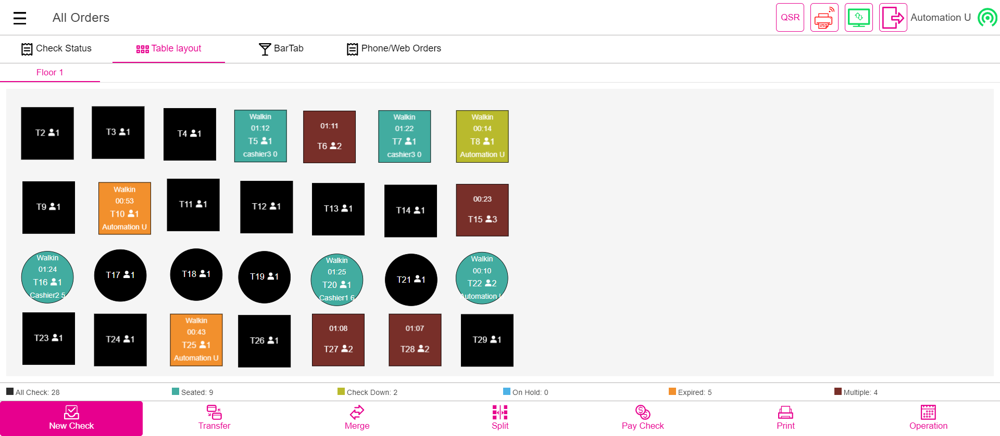FailLIN - 22195 - Application crash : When we delete the repeat order itemGiven I'm logged inAnd I closed the order type windowAnd I click Add Customer ButtonThen I should see the add customer screen in the windowAnd I Click on the Byname OptionAnd Enter some name and click on Add Customer buttonThen I should see the customer profile windowAnd I select searchAnd I enter an existing customer's name "Auto test"And I select the customerWhen I click the Save buttonAnd I get check numberAnd I select category as "FOOD"And I select menu item as "Onion Rings"And I select menu item as "Pancake"And I get the menu from the order screenAnd I should verify subtotal value as "$ 10.00"And I should verify tax value as "$ 1.11"And I should verify total2 value as "$ 11.55"And I should verify paid amount0 as "$ 0.00"Step skippedAnd I should verify cash price value as "$ 11.00"Step skippedAnd I click Cash button for Complete SaleStep skippedAnd I click Exact button on the cash pop-upStep skippedAnd I click Enter Button on the cash pop-upStep skippedAnd I closed the order type windowStep skippedAnd I click Add Customer ButtonStep skippedThen I should see the add customer screen in the windowStep skippedAnd I Click on the Byname OptionStep skippedAnd Enter some name and click on Add Customer buttonStep skippedThen I should see the customer profile windowStep skippedAnd I select searchStep skippedAnd I enter an existing customer's name "Auto test"Step skippedAnd I select the customerStep skippedAnd I wait sometimesStep skippedAnd I verify the customer previous order menu with order menuStep skippedAnd I select the previous order on customer profile screenStep skippedAnd I click repeat Order button on the customer profile windowStep skippedAnd I wait sometimesStep skippedThen I Should get back to the Order ScreenStep skippedAnd I delete the menu item in the order screenStep skippedAnd I should verify subtotal value as "$ 9.00"Step skippedAnd I should verify tax value as "$ 0.90"Step skippedAnd I should verify total2 value as "$ 10.40"Step skippedAnd I should verify paid amount as "$ 0.00"Step skippedAnd I click Payment button in the Order Management ScreenStep skippedAnd I click cash button from the payment method popupStep skippedAnd I click Submit button on the Payment WindowStep skippedAnd I closed the order type windowStep skippedAnd I click log off button in order screenStep skippedcom.qa.stepdef.Hooks.quit(io.cucumber.java.Scenario)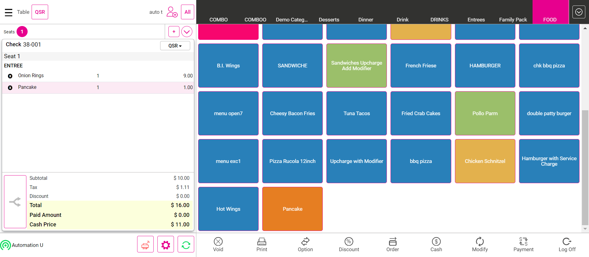FailLIN-22594 - Gratuity amounts disappears from the check in the following scenarioGiven I'm logged inAnd I closed the order type windowAnd I click AllAnd I click Table Layout tabAnd I click new check button on the Table layout screenAnd I select table as "T19"And I select the number of seats as "1"Step skippedAnd I click the Continue buttonStep skippedAnd I get check numberStep skippedAnd I select category as "TaXx"Step skippedAnd I select menu item as "service charge menu"Step skippedAnd I add a new seatStep skippedAnd I add a new seatStep skippedThen I should see Add Gratuity screenStep skippedAnd I select auto gratuity as "Auto vary Gratuity"Step skippedThen I should see enter Percentage popupStep skippedAnd I pass the value and click Apply buttonStep skippedThen I should verify subtotal value as "$ 2.95"Step skippedThen I should verify tax value as "$ 0.34"Step skippedThen I should verify gratuity value as "$ 0.24"Step skippedThen I should verify service charge value1 as "$ 0.23"Step skippedThen I should verify total5 value as "$ 3.95"Step skippedThen I should verify paid amount1 as "$ 0.00"Step skippedAnd I should verify cash price value2 as "$ 3.76"Step skippedAnd I click Payment button in the Order Management ScreenStep skippedAnd I click cash button from the payment method popupStep skippedAnd I click Submit button on the Payment WindowStep skippedAnd I click Table Layout tabStep skippedAnd I click Check Stats tabStep skippedAnd I click Closed tab on the Check statsStep skippedAnd I click the Closed check on check statsStep skippedAnd I click reopen check button on the check stats screenStep skippedThen I Should get back to the Order ScreenStep skippedWhen I verify auto gratuity is appliedStep skippedThen I should verify subtotal value as "$ 2.95"Step skippedThen I should verify tax value as "$ 0.34"Step skippedThen I should verify gratuity value as "$ 0.24"Step skippedAnd I should verify discount value1 as "$ 0.00"Step skippedThen I should verify service charge value2 as "$ 0.23"Step skippedThen I should verify total6 value as "$ 3.95"Step skippedThen I should verify paid amount1 as "$ 3.76"Step skippedAnd I should verify cash price value2 as "$ 3.76"Step skippedAnd I click Payment button in the Order Management ScreenStep skippedAnd I click Submit button on the Payment WindowStep skippedAnd I click Table Layout tabStep skippedAnd I click power button in the All Orders screenStep skippedcom.qa.stepdef.Hooks.quit(io.cucumber.java.Scenario)PassLIN-22815 - Allow to save more that 140 characters in customer notes after alert message in customer profile.Given I'm logged inAnd I closed the order type windowAnd I click Add Customer ButtonThen I should see the add customer screen in the windowAnd I Click on the Byname OptionAnd Enter some name and click on Add Customer buttonThen I should see the customer profile windowAnd I select searchAnd I enter an existing customer's name "pink flower"And I select the customerAnd I wait sometimesAnd I enter the above 150 words on the customer notesAnd I click the Save buttonAnd I Should get back to the Order ScreenAnd I click the customer name on the order screenThen I should see the customer profile windowWhen I verify the customer details in the customer profileAnd I click the Save buttonAnd I Should get back to the Order ScreenAnd I click Add Customer ButtonAnd I click remove buttonAnd I click on the cross buttin in the customer profile screenAnd I click log off button in order screenFailApplication gets crashed when scroll the category/service type/suggestive searchGiven I'm logged inAnd I closed the order type windowAnd I click AllAnd I click BarTab LayoutAnd I click New Tab in the Bar Tab ScreenAnd I click Add Customer ButtonThen I should see the add customer screen in the windowAnd I Click on the Byname OptionAnd Enter some name and click on Add Customer buttonThen I should see the customer profile windowAnd I select searchAnd I enter an existing customer's name "loyalty test1"And I select the customerWhen I click the Save buttonAnd I wait sometimesStep skippedAnd I click Finish buttonStep skippedAnd I click QSR tabStep skippedAnd I closed the order type windowStep skippedAnd I select uzumaki categoryStep skippedAnd I click log off button in order screenStep skippedcom.qa.stepdef.Hooks.quit(io.cucumber.java.Scenario)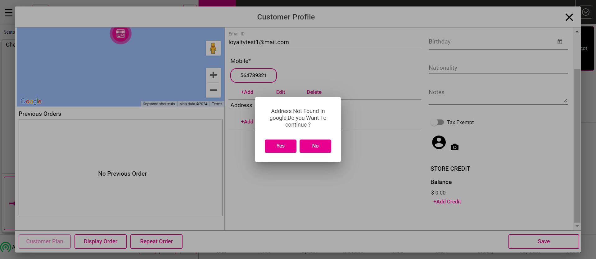
-
org.openqa.selenium.NoSuchElementException
1 tests
org.openqa.selenium.NoSuchElementException
1 failedStatus Timestamp TestName Fail 19:30:05 PM And I click Table Layout tab Basic Validation.Global Till ( PAY IN, PAy Out ).And I click Table Layout tabFail 19:32:50 PM And I click Table Layout tab Basic Validation.Verify the Pay in, Payout, Audit, Single cashier out, Close the day for the current business day(Clock in, start till(user till, Global till)).And I click Table Layout tabFail 19:34:24 PM And I click side cc button in the payment window Basic Validation.Added tip is Correct or not.And I click side cc button in the payment windowFail 19:43:48 PM And I click Table Layout tab Basic Validation.User Till.And I click Table Layout tabFail 19:46:18 PM And I click Table Layout tab Basic Validation.Global Till.And I click Table Layout tabFail 19:52:38 PM And Select the required check from the Checks Table Basic Validation.Transfer To Table from one Check to another Check.And Select the required check from the Checks TableFail 19:56:29 PM And I click side cc button in the payment window Basic Validation.Other than Cash Payment.And I click side cc button in the payment windowFail 19:58:50 PM When i verify service charge without tax of menu Basic Validation.Item Service charge (Item Service Charge Without Tax).When i verify service charge without tax of menuFail 20:01:08 PM When i verify service charge with tax of menu Basic Validation.Item Service charge (Item Service Charge With Tax ).When i verify service charge with tax of menuFail 20:18:12 PM Then I should see closed check in complete tab Basic Validation.Sale In Service Types.Then I should see closed check in complete tabFail 20:21:13 PM And I click New Tab in the Bar Tab Screen Basic Validation.Upcharge (Role restriction).And I click New Tab in the Bar Tab ScreenFail 20:25:55 PM Then I should see Gift card window Basic Validation.Gift.Then I should see Gift card windowFail 20:27:37 PM Then I click "Continue" in the Quantity popup "Click Continue Button" Basic Validation.86 list.Then I click "Continue" in the Quantity popup "Click Continue Button"Fail 20:40:38 PM Then I should see the Split check screen Basic Validation.Split Check from Table layout.Then I should see the Split check screenFail 20:53:12 PM When I verify the check is splitted and check number is increased Basic Validation.Split Seat from Table layout/bar tab Screen.When I verify the check is splitted and check number is increasedFail 20:55:48 PM When I verify the check is splitted and check number is increased Basic Validation.Split Seat from bar tab Screen.When I verify the check is splitted and check number is increasedFail 20:58:15 PM And I click new check added on the split check screen Basic Validation.Split Seat from Order Screen.And I click new check added on the split check screenFail 20:59:45 PM And I select table as "T19" Basic Validation.Reopen the closed checks and validate the tax, total, Subtotal.And I select table as "T19"Fail 21:02:50 PM And I select table as "T18" Basic Validation.LIN-22163 - Gratuity value is mismatching, when applying auto gratuity.And I select table as "T18"Fail 21:06:16 PM And I select table as "T19" Basic Validation.LIN-22594 - Gratuity amounts disappears from the check in the following scenario.And I select table as "T19" -
org.junit.ComparisonFailure
1 tests
org.junit.ComparisonFailure
1 failedStatus Timestamp TestName Fail 20:09:49 PM Then I should verify total value as "$ 9.36" Basic Validation.Taxes.Then I should verify total value as "$ 9.36"Fail 20:19:54 PM Then I should verify total value as "$ 2.84" Basic Validation.UpCharge (Verify the Upcharge for the check).Then I should verify total value as "$ 2.84"Fail 21:01:28 PM And I should verify total value as "$ 12.00" Basic Validation.When applying 2 different fixed gratuity for 3 seat it taking only one fixed gratuity.And I should verify total value as "$ 12.00"Fail 21:04:54 PM And I should verify total2 value as "$ 11.55" Basic Validation.LIN - 22195 - Application crash : When we delete the repeat order item.And I should verify total2 value as "$ 11.55" -
java.lang.IllegalArgumentException
1 tests
java.lang.IllegalArgumentException
1 failedStatus Timestamp TestName Fail 19:48:46 PM And I select Menu For Basic validation as "Menu" Basic Validation.Transfer Item from one Check to another Check.And I select Menu For Basic validation as "Menu" -
org.openqa.selenium.ElementClickInterceptedException
1 tests
org.openqa.selenium.ElementClickInterceptedException
1 failedStatus Timestamp TestName Fail 19:41:16 PM Given Im logged in for cashier4 Basic Validation.Cashier OUT PULL Request.Given Im logged in for cashier4Fail 20:08:09 PM And I click on the customer name in the order screen Basic Validation.Customer.And I click on the customer name in the order screenFail 20:36:28 PM When I click the check from the bartab screen Basic Validation.Verify the Merge option from Bar Tab screen.When I click the check from the bartab screenFail 21:08:33 PM When I click the Save button Basic Validation.Application gets crashed when scroll the category/service type/suggestive search.When I click the Save button
-
@MainBasicValidation
50 tests
@MainBasicValidation
20 passed 30 failedStatus Timestamp TestName Fail 19:24:10 PM Basic Validation Pass 19:24:10 PM Cashier Out From Till Management Screen Basic Validation.Cashier Out From Till Management ScreenPass 19:26:12 PM Refund Basic Validation.RefundFail 19:28:55 PM Global Till ( PAY IN, PAy Out ) Basic Validation.Global Till ( PAY IN, PAy Out )Fail 19:30:08 PM Verify the Pay in, Payout, Audit, Single cashier out, Close the day for the current business day(Clock in, start till(user till, Global till)) Basic Validation.Verify the Pay in, Payout, Audit, Single cashier out, Close the day for the current business day(Clock in, start till(user till, Global till))Fail 19:32:53 PM Added tip is Correct or not Basic Validation.Added tip is Correct or notPass 19:34:34 PM Bussiness Date Verify with Close day window Date Basic Validation.Bussiness Date Verify with Close day window DateFail 19:36:06 PM Cashier OUT PULL Request Basic Validation.Cashier OUT PULL RequestFail 19:41:17 PM User Till Basic Validation.User TillFail 19:43:50 PM Global Till Basic Validation.Global TillPass 19:46:20 PM Verify the Cash Discount charge for the check Basic Validation.Verify the Cash Discount charge for the checkFail 19:48:44 PM Transfer Item from one Check to another Check Basic Validation.Transfer Item from one Check to another CheckFail 19:49:11 PM Transfer To Table from one Check to another Check Basic Validation.Transfer To Table from one Check to another CheckPass 19:52:46 PM Verify the "Transfer to Server" from one check to another check Basic Validation.Verify the "Transfer to Server" from one check to another checkFail 19:55:29 PM Other than Cash Payment Basic Validation.Other than Cash PaymentFail 19:56:35 PM Item Service charge (Item Service Charge Without Tax) Basic Validation.Item Service charge (Item Service Charge Without Tax)Fail 19:58:52 PM Item Service charge (Item Service Charge With Tax ) Basic Validation.Item Service charge (Item Service Charge With Tax )Pass 20:01:10 PM Manual Gratuity Fixed Basic Validation.Manual Gratuity FixedPass 20:03:32 PM Manual Gratuity Varying Basic Validation.Manual Gratuity VaryingPass 20:04:36 PM Auto Gratuity Fixed Basic Validation.Auto Gratuity FixedPass 20:06:18 PM Auto Gratuity Varying(Multiple Auto Varying/Fixed gratuity is available means From Step 6 will be applicable) Basic Validation.Auto Gratuity Varying(Multiple Auto Varying/Fixed gratuity is available means From Step 6 will be applicable)Fail 20:08:00 PM Customer Basic Validation.CustomerFail 20:08:11 PM Taxes Basic Validation.TaxesPass 20:09:50 PM Orders Basic Validation.OrdersPass 20:12:29 PM Verify the sale in QSR Service Type Basic Validation.Verify the sale in QSR Service TypeFail 20:16:08 PM Sale In Service Types Basic Validation.Sale In Service TypesFail 20:18:18 PM UpCharge (Verify the Upcharge for the check) Basic Validation.UpCharge (Verify the Upcharge for the check)Fail 20:19:55 PM Upcharge (Role restriction) Basic Validation.Upcharge (Role restriction)Pass 20:21:43 PM Verify the sale in Bar Tab Service Type Basic Validation.Verify the sale in Bar Tab Service TypePass 20:24:04 PM Menu Option - Verify the Menu option for the all service type by menu level in order screen Basic Validation.Menu Option - Verify the Menu option for the all service type by menu level in order screenPass 20:25:11 PM Check OPTIONS Basic Validation.Check OPTIONSFail 20:25:51 PM Gift Basic Validation.GiftFail 20:26:03 PM 86 list Basic Validation.86 listPass 20:27:51 PM Merge With Check Based Amount (Verify the Merge option from Table layout screen ) Basic Validation.Merge With Check Based Amount (Verify the Merge option from Table layout screen )Pass 20:31:41 PM Merge with Item Based Amount (Verify the Merge option from Table layout screen ) Basic Validation.Merge with Item Based Amount (Verify the Merge option from Table layout screen )Fail 20:34:08 PM Verify the Merge option from Bar Tab screen Basic Validation.Verify the Merge option from Bar Tab screenFail 20:36:32 PM Split Check from Table layout Basic Validation.Split Check from Table layoutPass 20:40:47 PM Split Check By BarTab Screen Basic Validation.Split Check By BarTab ScreenPass 20:45:24 PM Split Check From Order Screen (Table Layout) Basic Validation.Split Check From Order Screen (Table Layout)Pass 20:48:42 PM Split Check From Order Screen (Bartab Layout) Basic Validation.Split Check From Order Screen (Bartab Layout)Fail 20:51:57 PM Split Seat from Table layout/bar tab Screen Basic Validation.Split Seat from Table layout/bar tab ScreenFail 20:53:17 PM Split Seat from bar tab Screen Basic Validation.Split Seat from bar tab ScreenFail 20:55:52 PM Split Seat from Order Screen Basic Validation.Split Seat from Order ScreenFail 20:58:23 PM Reopen the closed checks and validate the tax, total, Subtotal Basic Validation.Reopen the closed checks and validate the tax, total, SubtotalFail 20:59:53 PM When applying 2 different fixed gratuity for 3 seat it taking only one fixed gratuity Basic Validation.When applying 2 different fixed gratuity for 3 seat it taking only one fixed gratuityFail 21:01:28 PM LIN-22163 - Gratuity value is mismatching, when applying auto gratuity Basic Validation.LIN-22163 - Gratuity value is mismatching, when applying auto gratuityFail 21:02:58 PM LIN - 22195 - Application crash : When we delete the repeat order item Basic Validation.LIN - 22195 - Application crash : When we delete the repeat order itemFail 21:04:54 PM LIN-22594 - Gratuity amounts disappears from the check in the following scenario Basic Validation.LIN-22594 - Gratuity amounts disappears from the check in the following scenarioPass 21:06:24 PM LIN-22815 - Allow to save more that 140 characters in customer notes after alert message in customer profile. Basic Validation.LIN-22815 - Allow to save more that 140 characters in customer notes after alert message in customer profile.Fail 21:08:24 PM Application gets crashed when scroll the category/service type/suggestive search Basic Validation.Application gets crashed when scroll the category/service type/suggestive search -
@Cryptos
1 tests
@Cryptos
1 passedStatus Timestamp TestName Pass 21:06:24 PM LIN-22815 - Allow to save more that 140 characters in customer notes after alert message in customer profile. Basic Validation.LIN-22815 - Allow to save more that 140 characters in customer notes after alert message in customer profile. -
@MainBAsic
47 tests
@MainBAsic
20 passed 27 failedStatus Timestamp TestName Pass 19:24:10 PM Cashier Out From Till Management Screen Basic Validation.Cashier Out From Till Management ScreenPass 19:26:12 PM Refund Basic Validation.RefundFail 19:28:55 PM Global Till ( PAY IN, PAy Out ) Basic Validation.Global Till ( PAY IN, PAy Out )Fail 19:30:08 PM Verify the Pay in, Payout, Audit, Single cashier out, Close the day for the current business day(Clock in, start till(user till, Global till)) Basic Validation.Verify the Pay in, Payout, Audit, Single cashier out, Close the day for the current business day(Clock in, start till(user till, Global till))Fail 19:32:53 PM Added tip is Correct or not Basic Validation.Added tip is Correct or notPass 19:34:34 PM Bussiness Date Verify with Close day window Date Basic Validation.Bussiness Date Verify with Close day window DateFail 19:36:06 PM Cashier OUT PULL Request Basic Validation.Cashier OUT PULL RequestFail 19:41:17 PM User Till Basic Validation.User TillFail 19:43:50 PM Global Till Basic Validation.Global TillPass 19:46:20 PM Verify the Cash Discount charge for the check Basic Validation.Verify the Cash Discount charge for the checkFail 19:48:44 PM Transfer Item from one Check to another Check Basic Validation.Transfer Item from one Check to another CheckFail 19:49:11 PM Transfer To Table from one Check to another Check Basic Validation.Transfer To Table from one Check to another CheckPass 19:52:46 PM Verify the "Transfer to Server" from one check to another check Basic Validation.Verify the "Transfer to Server" from one check to another checkFail 19:55:29 PM Other than Cash Payment Basic Validation.Other than Cash PaymentFail 19:58:52 PM Item Service charge (Item Service Charge With Tax ) Basic Validation.Item Service charge (Item Service Charge With Tax )Pass 20:01:10 PM Manual Gratuity Fixed Basic Validation.Manual Gratuity FixedPass 20:03:32 PM Manual Gratuity Varying Basic Validation.Manual Gratuity VaryingPass 20:04:36 PM Auto Gratuity Fixed Basic Validation.Auto Gratuity FixedPass 20:06:18 PM Auto Gratuity Varying(Multiple Auto Varying/Fixed gratuity is available means From Step 6 will be applicable) Basic Validation.Auto Gratuity Varying(Multiple Auto Varying/Fixed gratuity is available means From Step 6 will be applicable)Fail 20:08:00 PM Customer Basic Validation.CustomerFail 20:08:11 PM Taxes Basic Validation.TaxesPass 20:09:50 PM Orders Basic Validation.OrdersPass 20:12:29 PM Verify the sale in QSR Service Type Basic Validation.Verify the sale in QSR Service TypeFail 20:16:08 PM Sale In Service Types Basic Validation.Sale In Service TypesFail 20:18:18 PM UpCharge (Verify the Upcharge for the check) Basic Validation.UpCharge (Verify the Upcharge for the check)Fail 20:19:55 PM Upcharge (Role restriction) Basic Validation.Upcharge (Role restriction)Pass 20:21:43 PM Verify the sale in Bar Tab Service Type Basic Validation.Verify the sale in Bar Tab Service TypePass 20:24:04 PM Menu Option - Verify the Menu option for the all service type by menu level in order screen Basic Validation.Menu Option - Verify the Menu option for the all service type by menu level in order screenPass 20:25:11 PM Check OPTIONS Basic Validation.Check OPTIONSFail 20:26:03 PM 86 list Basic Validation.86 listPass 20:27:51 PM Merge With Check Based Amount (Verify the Merge option from Table layout screen ) Basic Validation.Merge With Check Based Amount (Verify the Merge option from Table layout screen )Pass 20:31:41 PM Merge with Item Based Amount (Verify the Merge option from Table layout screen ) Basic Validation.Merge with Item Based Amount (Verify the Merge option from Table layout screen )Fail 20:34:08 PM Verify the Merge option from Bar Tab screen Basic Validation.Verify the Merge option from Bar Tab screenFail 20:36:32 PM Split Check from Table layout Basic Validation.Split Check from Table layoutPass 20:40:47 PM Split Check By BarTab Screen Basic Validation.Split Check By BarTab ScreenPass 20:45:24 PM Split Check From Order Screen (Table Layout) Basic Validation.Split Check From Order Screen (Table Layout)Pass 20:48:42 PM Split Check From Order Screen (Bartab Layout) Basic Validation.Split Check From Order Screen (Bartab Layout)Fail 20:51:57 PM Split Seat from Table layout/bar tab Screen Basic Validation.Split Seat from Table layout/bar tab ScreenFail 20:53:17 PM Split Seat from bar tab Screen Basic Validation.Split Seat from bar tab ScreenFail 20:55:52 PM Split Seat from Order Screen Basic Validation.Split Seat from Order ScreenFail 20:58:23 PM Reopen the closed checks and validate the tax, total, Subtotal Basic Validation.Reopen the closed checks and validate the tax, total, SubtotalFail 20:59:53 PM When applying 2 different fixed gratuity for 3 seat it taking only one fixed gratuity Basic Validation.When applying 2 different fixed gratuity for 3 seat it taking only one fixed gratuityFail 21:01:28 PM LIN-22163 - Gratuity value is mismatching, when applying auto gratuity Basic Validation.LIN-22163 - Gratuity value is mismatching, when applying auto gratuityFail 21:02:58 PM LIN - 22195 - Application crash : When we delete the repeat order item Basic Validation.LIN - 22195 - Application crash : When we delete the repeat order itemFail 21:04:54 PM LIN-22594 - Gratuity amounts disappears from the check in the following scenario Basic Validation.LIN-22594 - Gratuity amounts disappears from the check in the following scenarioPass 21:06:24 PM LIN-22815 - Allow to save more that 140 characters in customer notes after alert message in customer profile. Basic Validation.LIN-22815 - Allow to save more that 140 characters in customer notes after alert message in customer profile.Fail 21:08:24 PM Application gets crashed when scroll the category/service type/suggestive search Basic Validation.Application gets crashed when scroll the category/service type/suggestive search
Started
Jan 22, 2024 07:24:08 PM
Ended
Jan 22, 2024 09:08:40 PM
Features Passed
0
Features Failed
1
Features
Scenarios
Steps
Timeline
Tags
| Name | Passed | Failed | Skipped | Others | Passed % |
|---|---|---|---|---|---|
| @MainBasicValidation | 20 | 30 | 0 | 0 | 40% |
| @Cryptos | 1 | 0 | 0 | 0 | 100% |
| @MainBAsic | 20 | 27 | 0 | 0 | 42.553% |